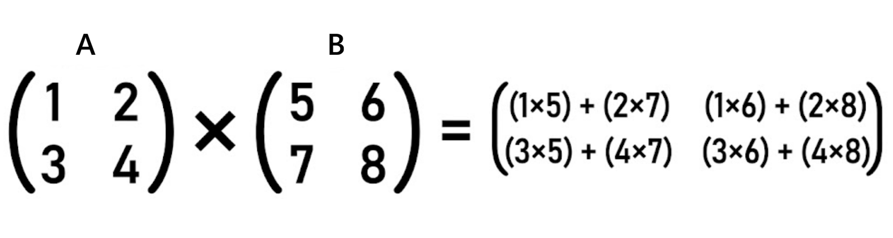
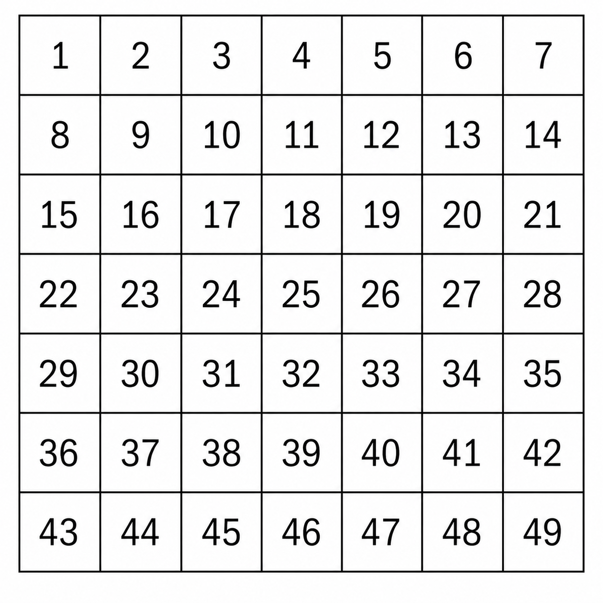

Numeristas: Brain Training Through Mathematics
Numeristas is a brain training platform featuring 50 varied mathematical exercises, designed to train mental calculation with minimal prerequisites.
The Philosophy
- The immediate response trap: If you know the answer in a tenth of a second, you are not training, you are reciting. In that case, you need to increase the difficulty. All exercises have multiple levels.
- Embrace friction: True growth happens in the "effort zone". Whether it takes 30 seconds or 30 minutes, the goal is to find the limit of your mental capacity.
- Computation for adults: While 2 + 2 serves its purpose for children, Numeristas is designed for adults who want to maintain and expand their cognitive agility.
- Minimal prerequisites: You don't need a PhD in Mathematics. We have stripped away the filler, aiming to keep the required knowledge to enjoy all the exercises to a bare minimum.
- Integrated feedback: In specialized exercises outside the standard curriculum, we provide complete simulations with all the steps to the final answer, with only a few exceptions.
The Training Landscape
At Numeristas, we cover a broad spectrum of disciplines. Whether you are passionate about arithmetic, recursive thinking, algorithmic logic, or spatial reasoning, here you will find the ideal space to develop your potential.
🔢 Arithmetic and Algebra
Master the fundamental language of numbers and then delve into algebra.
- The essentials: Precision training in Addition, Subtraction, Multiplication, Division, and Fractions.
- Time Zones: Calculate global time conversions.
- Advanced powers: Tackle Powers, Roots, and Logarithms to build intuition.
- Alternative systems: Master Base Conversions to break free from exclusively decimal thinking.
- Systems and matrices: Solve Systems of Equations, perform Matrix Multiplication, and calculate Determinants.
- Algebra through geometry: Solve geometric problems using second and third-degree polynomials.
- Symbolic chains: Execute Substitution Chains.
🎲 Number Theory and Probability
Explore the fundamental properties of integers and the mathematics of chance.
- Prime numbers: Master the identification and factorization of prime numbers.
- Greatest Common Divisor: Calculate the largest shared factors between numbers.
- Least Common Multiple: Find the smallest common multiples between numbers.
- Day of the week: Apply modular arithmetic to mentally calculate the exact day of the week for historical or future dates.
- Probability: Internalize risk with Dice Probability and Coin Combinations.
🧠 Memory and Concentration
Specialized exercises designed to increase your 'Mental RAM' and concentration.
- Memory: Recall numbers with an increasingly larger amount of digits.
- Piano: Calculate using sound instead of visual inputs in the Piano exercise.
- Dynamic attention: Perform additions of dynamically changing numbers (Mental Gravity) or count the total number of squares appearing dynamically (Dynamic Count).
🧭 Spatial Reasoning
Develop a 'mental GPS' by performing complex transformations in 2D and 3D space.
- Movement: Calculate movement in a virtual 3D coordinate system through Orthogonal and Diagonal Translations, Rotations, and Symmetry.
- Projection: Master Adjacent and Opposite Projections on cubes of different sizes.
- Pathfinding: Solve the Shortest Path and evaluate Eulerian circuits in Seven Bridges of Königsberg problems.
🌀 Recurrences
Train your brain to handle multiple variables and recursive patterns simultaneously.
- Pattern Recognition: Master Recurrence Relations, find Recurrence Coefficients, and identify Missing Terms in complex sequences.
- Continued Fractions: Break down rational values into continued fractions or follow the reverse path to find the fraction corresponding to given coefficients.
- Algorithmic Sequences: Solve the recursive logic of the Josephus Problem.
- Numeric Progressions: Master the numerical expansions of Generalized Pascal Patterns.
🧩 Computer Science and Logic
Bridge the gap between mathematics and computer science.
- Code Execution and Parallel Computing: Execute Pseudocode in your head and find the most efficient way to manage resources available in parallel.
- Algorithmic Puzzles: Solve the Towers of Hanoi, the modular logic of the Box Puzzle, and Water Jug riddles.
- Logic Grids: Complex spatial logic with Sudoku (2D and 3D), Bridges, and Sliding Puzzles.
- Map Coloring: Calculate the maximum number of cells that can be grouped under strict adjacency constraints.
- Cellular Automata: Calculate subsequent generations of Cellular Growth patterns based on strict algorithmic rules.
Tune the Engine
Customize the platform to your specific level; simply click the settings button and modify the parameters:
- Flexible Exercise Selection: Tailor each session to your immediate goals. Whether you want to master a single exercise or tackle the full 50-exercise circuit, the platform adapts to your pace. The cycle continues without interruptions.
- Individual Exercise Difficulty Settings: Granular controls to push past the "immediate response" phase and return to productive effort.
- Exercise Order: Choose Sequential to build momentum or Random to test your adaptability.
- Advanced Complexity (Base/Remapping): Those who have mastered standard computation can change the number base to 2–9 in specific exercises to force their brain out of its decimal comfort zone. You can also activate Remapping to completely overwrite how you process standard digits. Remapping breaks the link between symbol and value—forcing your brain to calculate when the symbol "1" actually means 3, the "2" means 7...
- Time Between Exercises: Control the pace of your training session. Adjust the exact delay the engine takes to load the next exercise. If you don't want to waste time reading "correct," you can set a 0-second skip on correct answers. For incorrect answers, you can program a longer delay—5, 10, 60... seconds—to give yourself time to figure out what went wrong in your reasoning. In exercises with simulations as feedback, the global timer is disabled; the engine simply jumps to the next exercise a few seconds after the simulation ends. You can always click "Skip" to continue.
- Memory Mode: Activating this option will make some basic exercises more difficult, as they will disappear from the screen after a set time. In that case, you must retain the exercise in your mind and then mentally calculate all the steps, resulting in a higher cognitive load.
Numeristas: Entrenamiento cerebral a través de las matemáticas
Numeristas es una plataforma de entrenamiento cerebral que incluye 50 ejercicios matemáticos variados, pensados para ejercitar el cálculo mental con unos requisitos mínimos.
La filosofía
- La trampa de la respuesta inmediata: Si sabes la respuesta en una décima de segundo no estás entrenando, estás recitando. En tal caso hay que aumentar la dificultad. Todos los ejercicios tienen varios niveles.
- Abraza la fricción: El verdadero crecimiento ocurre en la "zona de esfuerzo". Lo importante no es resolver muchos ejercicios, la cantidad, sino elegir uno con calma, subir hasta el nivel adecuado, y pensar detenidamente durante algún tiempo.
- Computación para adultos: Mientras que 2 + 2 cumple su propósito para los niños, Numeristas está diseñado para adultos que desean mantener y expandir su agilidad cognitiva.
- Requisitos mínimos: No necesitas un doctorado en Matemáticas. Hemos eliminado el relleno, intentando que los conocimientos para poder disfrutar de todos los ejercicios sean mínimos.
- Feedback integrado: En ejercicios especializados fuera del plan de estudios estándar proporcionamos simulaciones completas con todos los pasos hasta la respuesta final, con algunas excepciones muy concretas.
El panorama de entrenamiento
En Numeristas abarcamos un amplio espectro de disciplinas. Tanto si te apasiona la aritmética, el pensamiento recursivo, la lógica algorítmica o el razonamiento espacial, aquí encontrarás el espacio ideal para desarrollar tu potencial.
🔢 Aritmética y álgebra
Domina el lenguaje fundamental de los números y luego adéntrate en el álgebra.
- Lo esencial: Entrenamiento de precisión en Suma, Resta, Multiplicación, División y Fracciones.
- Zonas Horarias: Calcula conversiones de horas globales.
- Potencias avanzadas: Aborda Potencias, Raíces y Logaritmos para construir intuición.
- Sistemas alternativos: Domina las Conversiones de Base para liberarte del pensamiento exclusivamente decimal.
- Sistemas y matrices: Resuelve Sistemas de Ecuaciones, realiza Multiplicación de Matrices y calcula Determinantes.
- Álgebra a través de la geometría: Resuelve problemas geométricos con polinomios de segundo y tercer grado.
- Cadenas simbólicas: Ejecuta Cadenas de Sustitución.
🎲 Teoría de números y probabilidad
Explora las propiedades fundamentales de los enteros y las matemáticas del azar.
- Números primos: Domina la identificación y la factorización de números primos.
- Máximo común Divisor: Calcula los factores compartidos más grandes entre números.
- Mínimo común múltiplo: Encuentra los múltiplos comunes más pequeños entre números.
- Día de la semana: Aplica la aritmética modular para calcular mentalmente el día exacto de la semana para fechas históricas o futuras.
- Probabilidad: Internaliza el riesgo con Probabilidad de Dados y Combinaciones de Monedas.
🧠 Memoria y concentración
Ejercicios especializados diseñados para aumentar tu 'RAM Mental' y concentración.
- Memoria: Recuerda números cada vez con una mayor cantidad de dígitos.
- Piano: Calcula usando sonido en lugar de entradas visuales en el ejercicio del Piano.
- Atención dinámica: Realiza sumas de números que cambian dinámicamente (Mental Gravity) o cuenta el total de cuadrados que aparecen dinámicamente (Dynamic Count).
🧭 Razonamiento espacial
Desarrolla un 'GPS mental' realizando transformaciones complejas en el espacio 2D y 3D.
- Movimiento: Calcula el movimiento en un sistema de coordenadas 3D virtual a través de Traslaciones Ortogonales y Diagonales, Rotaciones y Simetría.
- Proyección: Domina las Proyecciones Adyacentes y Opuestas en cubos de diferentes tamaños.
- Búsqueda de caminos: Resuelve el Camino Más Corto y evalúa circuitos Eulerianos en problemas de los Puentes de Königsberg.
🌀 Recurrencias
Entrena tu cerebro para manejar múltiples variables y patrones recursivos simultáneamente.
- Reconocimiento de patrones: Domina las Relaciones de Recurrencia, encuentra Coeficientes de Recurrencia e identifica Términos Faltantes en secuencias complejas.
- Fracciones continuas: Descompón valores racionales en fracciones continuas o sigue el camino inverso, encuentra la fracción que corresponde a unos coeficientes dados.
- Secuencias algorítmicas: Resuelve la lógica recursiva del Problema de Flavio Josefo.
- Progresiones numéricas: Domina las expansiones numéricas de los Patrones de Pascal Generalizados.
🧩 Informática y lógica
Cierra la brecha entre las matemáticas y la informática.
- Ejecución de código y computación paralela: Ejecuta Pseudocódigo en tu cabeza y averigua cuál es la forma más eficiente de gestionar recursos disponibles en paralelo.
- Acertijos algorítmicos: Resuelve las Torres de Hanói, la lógica modular del Rompecajas y los acertijos de Jarras de Agua.
- Cuadrículas lógicas: Lógica espacial compleja con Sudoku (2D y 3D), Puentes y Rompecabezas Deslizantes.
- Coloración de mapas: Calcula el número máximo de celdas que pueden agruparse bajo estrictas restricciones de adyacencia.
- Autómatas celulares: Calcula las generaciones posteriores de patrones de Crecimiento Celular basados en reglas algorítmicas estrictas.
Afina el motor
Personaliza la plataforma a tu nivel específico, tan solo tienes que pulsar en el botón de ajustes y modificar los parámetros:
- Selección flexible de ejercicios: Adapta cada sesión a tus objetivos inmediatos. Ya sea que quieras dominar un solo ejercicio o abordar el circuito completo de 50 ejercicios, la plataforma se adapta a tu ritmo. El ciclo continúa sin interrupciones.
- Ajustes de dificultad de cada ejercicio individual: Controles granulares para superar la fase de "respuesta inmediata" y volver al esfuerzo productivo. Se puede aumentar el número de operandos, el de dígitos o el rango de valores en ejercicios numéricos, u otros parámetros en ejercicios más visuales. Si la dificultad de un ejercicio crece exponencialmente se usan rangos de valores, pero si crece linealmente se usan dígitos.
- Orden de los ejercicios: Elige Secuencial para ganar impulso o Aleatorio para poner a prueba tu adaptabilidad.
- Complejidad avanzada (Base/Remapeo): Aquellos que hayan dominado la computación estándar pueden cambiar la base numérica a 2–9 en algunos ejercicios específicos para forzar a su cerebro a salir de su zona de confort decimal. También pueden activar el Remapeo para sobrescribir por completo cómo procesan los dígitos estándar. El remapeo rompe el vínculo entre símbolo y valor—obligando a tu cerebro a calcular cuando el símbolo "1" en realidad significa 3, el "2" significa 7...
- Tiempo entre ejercicios: Controla el ritmo de tu sesión de entrenamiento. Ajusta el retraso exacto que el motor tarda en cargar el siguiente ejercicio. Si no quieres perder el tiempo leyendo "correcto" puedes fijar un salto de 0 segundos en respuestas correctas. Para respuestas incorrectas puedes programar un retraso más largo, de 5, 10, 60... segundos, para que te dé tiempo a averiguar qué falló en el razonamiento. En ejercicios que tengan simulaciones como feedback el contador global está deshabilitado, simplemente cuando termina la simulación el motor salta al siguiente ejercicio en pocos segundos. Siempre puedes hacer click en "Skip" para continuar.
- Modo memoria: Activar esta opción hará que algunos ejercicios básicos se compliquen, puesto que al terminar el tiempo establecido desaparecerán de la pantalla. En tal caso, hay que retener el ejercicio y luego calcular mentalmente todos los pasos, por lo que la carga cognitiva es superior.
Numeristas：通过数学进行大脑训练
Numeristas 是一个大脑训练平台，包含 50 个各式各样的数学练习，旨在以最低的入门门槛锻炼心算能力。
核心理念
- 立即反应的陷阱： 如果你在十分之一秒内就知道了答案，那不是在训练，而是在背诵。在这种情况下，必须增加难度。所有练习都设有多个难度级别。
- 拥抱“摩擦力”： 真正的成长发生在“努力区”。无论需要 30 秒还是 30 分钟，目标都是找到你脑力的极限。
- 成人计算： 虽然 2 + 2 对儿童很有意义，但 Numeristas 是专为希望保持和拓展认知敏捷性的成年人设计的。
- 最低要求： 你不需要数学博士学位。我们去除了冗余内容，力求让每个人都能以最基础的知识享受所有练习。
- 内置反馈：在标准课程之外的专项练习中，我们提供包含通往最终答案所有步骤的完整模拟，但也有极少数特定的例外情况。
训练全景
在 Numeristas，我们涵盖了广泛的学科领域。无论你热爱算术、递归思维、算法逻辑还是空间推理，这里都是开发你潜力的理想空间。
🔢 算术与代数
掌握数字的基础语言，然后深入研究代数。
- 基础核心： 加法、减法、乘法、除法和分数的精准训练。
- 时区转换： 计算全球时间转换。
- 高级幂运算： 攻克幂、根号和对数，建立数学直觉。
- 替代进制： 掌握进制转换，从十进制思维中解放出来。
- 方程组与矩阵： 求解方程组，进行矩阵乘法并计算行列式。
- 几何中的代数： 使用二次和三次多项式解决几何问题。
- 符号链： 执行符号替换链运算。
🎲 数论与概率
探索整数的基本性质和随机现象的数学规律。
- 质数： 掌握质数的识别与分解。
- 最大公约数： 计算数字之间的最大公约数。
- 最小公倍数： 寻找数字之间的最小公倍数。
- 星期几： 应用同余运算，心算历史或未来日期的具体星期。
- 概率： 通过骰子概率和硬币组合来内化风险评估。
🧠 记忆与专注
专为提升“大脑内存（RAM）”和注意力而设计的专业练习。
- 记忆力： 挑战记忆位数不断增加的数字。
- 钢琴： 在钢琴练习中，使用听觉而非视觉输入进行计算。
- 动态注意力： 对动态变化的数字进行求和（心理重力 Mental Gravity），或统计动态出现的正方形总数（动态计数 Dynamic Count）。
🧭 空间推理
通过在 2D 和 3D 空间中进行复杂的变换，开发你的“心理 GPS”。
- 空间移动： 通过正交与对角平移、旋转和对称操作，在虚拟 3D 坐标系中计算路径。
- 投影训练： 掌握不同尺寸立方体中的相邻面与相对面投影。
- 路径搜索： 求解最短路径，并在柯尼斯堡七桥问题中评估欧拉回路。
🌀 递推关系
训练大脑同时处理多个变量和递归模式的能力。
- 模式识别： 掌握递推关系，寻找递推系数，并识别复杂序列中的缺失项。
- 连分数： 将有理数分解为连分数，或进行逆向操作，根据给定系数还原分数。
- 算法序列： 解决约瑟夫斯问题（Josephus Problem）中的递归逻辑。
- 数字级数： 掌握广义帕斯卡模式（Pascal Patterns）中的数值展开。
🧩 计算机科学与逻辑
弥合数学与计算机科学之间的鸿沟。
- 代码执行与并行计算： 在脑中执行伪代码，并找出并行管理可用资源的最有效方式。
- 算法谜题： 解决汉诺塔、方盒谜题的模逻辑以及水壶问题。
- 逻辑网格： 挑战复杂的空间逻辑，包括数独（2D 和 3D）、桥梁谜题和滑动拼图。
- 地图着色： 在严格的相邻限制下，计算可以分组的单元格最大数量。
- 细胞自动机： 根据严格的算法规则，计算细胞生长模式的后代演化。
引擎调优
根据你的具体水平定制平台，只需点击设置按钮并修改参数：
- 灵活的练习选择： 根据你的即时目标定制每次训练。无论你是想专精于某一个练习，还是挑战完整的 50 项循环，平台都会配合你的节奏。循环将无间断持续。
- 单个练习难度设置： 细粒度控制参数，帮助你超越“立即反应”阶段，回到卓有成效的努力区。
- 练习顺序： 选择“顺序”模式以积累动力，或选择“随机”模式以测试你的适应能力。
- 高级复杂度（进制/重映射）： 对于已掌握标准计算的用户，可以在特定练习中将数字进制更改为 2–9，迫使大脑跳出十进制舒适区。还可以开启“重映射”功能，彻底改变处理标准数字的方式。重映射打破了符号与数值之间的联系——迫使大脑在符号“1”实际代表 3、符号“2”代表 7 时进行重新计算。
- 练习间隔时间： 控制训练节奏。调整引擎加载下一个练习之前的精确延迟时间。如果你不想浪费时间看“正确”提示，可以将正确答案后的跳转设为 0 秒。对于错误答案，你可以设置 5、10、60 秒等更长的延迟，以便有时间查出推理中的错误。在带有模拟反馈的练习中，全局计时器会禁用，模拟结束后引擎会在几秒内自动跳转。你也可以随时点击“跳过 (Skip)”继续。
- 记忆模式： 开启此选项将增加基础练习的难度，因为题目会在设定时间结束后从屏幕上消失。在这种情况下，你必须记住题目并在脑中完成所有步骤，认知负荷更高。
Tutorial: Addition
Engine Specifications:
- Operands: From 2 to 6 simultaneous variables.
- Magnitude: From 1 to 6 digits per operand.
- Allow negative values: Optional.
- Advanced Complexity (Base/Remapping): Optional.
- Pacing: Global timer.
The Objective
Calculate the exact sum of the given numerical values. If you select a minimum of 2 operands and a maximum of 3, for example, you will receive exercises with either 2 or 3 operands at random, with a 50% probability for each case. In this exercise, the quantities are selected using digits, since the difficulty does not increase exponentially, whereas in others, specific ranges of values will be used.
Alternative Bases
If the Base/Remap modifier is active, an indicator circle at the top center of the screen will show the current numerical base (e.g., 3). The variables presented are expressed in that base, and the submitted answer must also use that same base.
Example (Base 3):
- Displayed: 101 + 102
- Decimal Translation: 10 + 11 = 21
- Required Input: 210 (which is 21 converted back to Base 3)
Remapping
If the Remapping modifier is active, the indicator circle will display an R. This means that the visual symbols have been altered and no longer represent their standard numerical values. However, your final answer must always be entered using standard, non-remapped digits. It is recommended to generate a new remap as soon as mental calculations with the current one feel automatic.
Mapping Example: 1=3, 2=1, 3=2, 4=5, 5=4, 6=7, 7=8, 8=9, 9=6
- Displayed: 12 + 34
- Mental Translation: The symbol '1' means 3, and '2' means 1 (Real Value: 31). The symbol '3' means 2, and '4' means 5 (Real Value: 25).
- Actual Computation: 31 + 25 = 56
- Required Input: 56
Tutorial: Suma
Especificaciones del motor:
- Operandos: De 2 a 6 variables simultáneas.
- Magnitud: De 1 a 6 dígitos por operando.
- Permitir valores negativos: Opcional.
- Complejidad avanzada (Base/Remapeo): Opcional.
- Ritmo: Temporizador global.
- Modo memoria: Opcional.
El Objetivo
Calcular la suma exacta de los valores numéricos presentados. Si se eliges un mínimo de 2 operandos y un máximo de 3, por ejemplo, se obtendrán ejercicios con 2 o 3 operandos de manera aleatoria, con un 50% de probabilidad entre ambos casos.
Bases alternativas
Si el modificador de Base/Remap está activo, un círculo indicador en la parte superior central de la pantalla mostrará la base numérica actual (ej. 3). Las variables presentadas están expresadas en esa base y la respuesta enviada también debe usar esa misma base.
Ejemplo (Base 3):
- Mostrado: 101 + 102
- Traducción a decimal: 10 + 11 = 21
- Entrada Requerida: 210 (que es 21 convertido de nuevo a Base 3)
Remapeo
Si el modificador de Remapeo está activo, el círculo indicador mostrará una R. Esto significa que los símbolos visuales han sido alterados y ya no representan sus valores numéricos estándar. Sin embargo, tu respuesta final siempre deberá ingresarse utilizando los dígitos estándar, sin remapear. Es recomendable generar un nuevo remapeo en cuanto los cálculos mentales con el actual se sientan automáticos.
Ejemplo de Mapeo: 1=3, 2=1, 3=2, 4=5, 5=4, 6=7, 7=8, 8=9, 9=6
- Mostrado: 12 + 34
- Traducción mental: El símbolo '1' significa 3, y el '2' significa 1 (Valor Real: 31). El símbolo '3' significa 2, y el '4' significa 5 (Valor Real: 25).
- Computación real: 31 + 25 = 56
- Entrada requerida: 56
教程：加法
计算所给数值的确切和。例如，若选择至少2个操作数且最多3个操作数，则系统将随机生成包含2个或3个操作数的习题，两种情况出现的概率均为50%。本练习中使用数字来选择数值，因为这样难度不会呈指数级增长；而在其他练习中，则会使用特定的数值范围。
- 操作数： 同时出现 2 到 6 个变量。
- 位数： 每个操作数 1 到 6 位数字。
- 允许负值： 可选。
- 高级复杂度（进制/重映射）： 可选。
- 节奏： 全局计时器。
目标
计算所显示数值的精确总和。
替代进制
如果“进制/重映射”修改器处于激活状态，屏幕上方中央的一个指示圆圈将显示当前的数字进制（例如：3）。显示的变量以该进制表示，提交的答案也必须使用该进制。
示例（3 进制）：
- 显示内容： 101 + 102
- 十进制转换： 10 + 11 = 21
- 要求输入： 210（这是将 21 转换回 3 进制后的结果）
重映射
如果“重映射”修改器处于激活状态，指示圆圈将显示 R。这意味着视觉符号已被改变，不再代表其标准的数值。然而，你的最终答案必须始终使用标准数字（非重映射符号）输入。建议一旦当前映射的心理计算变得自动化，就立即生成一个新的重映射。
映射示例： 1=3, 2=1, 3=2, 4=5, 5=4, 6=7, 7=8, 8=9, 9=6
- 显示内容： 12 + 34
- 心理转换： 符号 '1' 代表 3，'2' 代表 1（实际值：31）。符号 '3' 代表 2，'4' 代表 5（实际值：25）。
- 实际计算： 31 + 25 = 56
- 要求输入： 56
Tutorial: Subtraction
Engine Specifications:
- Operands: Fixed at 2 simultaneous variables.
- Magnitude: From 1 to 6 digits per operand.
- Allow negative values: Optional (affects whether the result or operands can be negative).
- Advanced Complexity (Base/Remapping): Optional.
- Pacing: Global timer / Memory mode.
The Objective
Calculate the exact difference between the two numerical values presented. Unlike other exercises where variables can scale, subtraction keeps a strict structure of 2 operands. The selection of quantities is configured via digits, as the difficulty increases linearly rather than exponentially.
Alternative Bases
If the Base/Remap modifier is active, an indicator circle at the top center of the screen will show the current numerical base (e.g., 3). The variables presented are expressed in that base, and the submitted answer must also use that same base.
Example (Base 3):
- Displayed: 210 - 102
- Decimal Translation: 21 - 11 = 10
- Required Input: 101 (which is 10 converted back to Base 3)
Remapping
If the Remapping modifier is active, the indicator circle will display an R. Visual symbols are altered and no longer represent standard numerical values, but your final answer must always be entered using standard, non-remapped digits.
Mapping Example: 1=3, 2=1, 3=2, 4=5, 5=4, 6=7, 7=8, 8=9, 9=6
- Displayed: 34 - 12
- Mental Translation: The symbol '3' means 2, and '4' means 5 (Real Value: 25). The symbol '1' means 3, and '2' means 1 (Real Value: 31).
- Actual Computation: 25 - 31 = -6
- Required Input: -6
Tutorial: Resta
Especificaciones del motor:
- Operandos: Fijado en 2 variables.
- Magnitud: De 1 a 6 dígitos por operando.
- Permitir valores negativos: Opcional.
- Complejidad Avanzada (Base/Remapeo): Opcional.
- Ritmo: Temporizador global
- Modo memoria: Opcional.
El Objetivo
Calcular la diferencia exacta entre los dos valores numéricos presentados. A diferencia de otros ejercicios donde el número de variables es escalable, en la resta se mantiene una estructura estricta de 2 operandos. Las cantidades se configuran utilizando dígitos, dado que la dificultad crece de forma lineal y no exponencial.
Bases alternativas
Si el modificador de Base/Remap está activo, un círculo indicador en la parte superior central de la pantalla mostrará la base numérica actual (ej. 3). Las variables presentadas están expresadas en esa base y la respuesta enviada también debe usar esa misma base.
Ejemplo (Base 3):
- Mostrado: 210 - 102
- Traducción a decimal: 21 - 11 = 10
- Entrada Requerida: 101 (que es 10 convertido de nuevo a Base 3)
Remapeo
Si el modificador de Remapeo está activo, el círculo indicador mostrará una R. Esto significa que los símbolos visuales han sido alterados y ya no representan sus valores numéricos estándar. Sin embargo, tu respuesta final siempre deberá ingresarse utilizando los dígitos estándar, sin remapear. Es recomendable generar un nuevo remapeo en cuanto los cálculos mentales con el actual se sientan automáticos.
Ejemplo de Mapeo: 1=3, 2=1, 3=2, 4=5, 5=4, 6=7, 7=8, 8=9, 9=6
- Mostrado: 34 - 12
- Traducción mental: El símbolo '3' significa 2, y el '4' significa 5 (Valor Real: 25). El símbolo '1' significa 3, y el '2' significa 1 (Valor Real: 31).
- Computación real: 25 - 31 = -6
- Entrada requerida: -6
教程：减法
引擎参数：
- 操作数： 固定为 2 个同时出现的变量。
- 位数： 每个操作数 1 到 6 位数字。
- 允许负值： 可选（影响结果或操作数是否可以为负）。
- 高级复杂度（进制/重映射）： 可选。
- 节奏： 全局计时器 / 记忆模式。
目标
计算所显示的两个数值之间的精确差值。与其他可以扩展变量数量的练习不同，减法练习严格固定为 2 个操作数。本练习中通过配置数字位数来调整难度，因为其难度呈线性而非指数级增长。
替代进制
如果“进制/重映射”修改器处于激活状态，屏幕上方中央的一个指示圆圈将显示当前的数字进制（例如：3）。显示的变量以该进制表示，提交的答案也必须使用该进制。
示例（3 进制）：
- 显示内容： 210 - 102
- 十进制转换： 21 - 11 = 10
- 要求输入： 101（这是将 10 转换回 3 进制后的结果）
重映射
如果“重映射”修改器处于激活状态，指示圆圈将显示 R。这意味着视觉符号已被改变，不再代表其标准的数值。然而，你的最终答案必须始终使用标准数字（非重映射符号）输入。建议一旦当前映射的心理计算变得自动化，就立即生成一个新的重映射。
映射示例： 1=3, 2=1, 3=2, 4=5, 5=4, 6=7, 7=8, 8=9, 9=6
- 显示内容： 34 - 12
- 心理转换： 符号 '3' 代表 2，'4' 代表 5（实际值：25）。符号 '1' 代表 3，'2' 代表 1（实际值：31）。
- 实际计算： 25 - 31 = -6
- 要求输入： -6
Tutorial: Multiplication
Engine Specifications:
- Operands: From 2 to 6 simultaneous variables.
- Magnitude: Custom numeric ranges from 1 to 9999 per operand.
- Allow negative factors: Optional.
- Advanced complexity (Base/Remapping): Optional.
- Pacing: Global timer.
- Memory mode: Optional.
The objective
Calculate the exact product of the given values. Unlike addition and subtraction, this exercise offers greater control over the values presented. The engine shifts to a value range selection system, granting absolute granular control over complexity.
Practical use case: mastering specific tables
The range configuration allows you to isolate and eliminate blind spots in your mental calculation. For example, if you wish to completely master the 11 times table:
- Set the minimum and maximum of the first operand to: 11 and 11.
- Set the minimum and maximum of the second operand to: 1 and 11.
The platform will strictly generate operations within that target framework (11x3, 11x8, 11x5, etc.) randomly.
Alternative bases
If the Base/Remap modifier is active, an indicator circle will display the current numerical base (e.g., 3). The variables are expressed in that base, and the response must also be submitted using that same base.
Example (Base 3):
- Displayed: 12 \times 2
- Decimal translation: 5 \times 2 = 10
- Required input: 101 (which is 10 converted back to Base 3)
Remapping
If active, the circle will display an R. Visual symbols are completely altered, forcing you to decipher the real value before operating. Your final answer must always be entered using standard digits, without remapping.
Tutorial: Multiplicación
Especificaciones del motor:
- Operandos: De 2 a 6 variables simultáneas.
- Magnitud: Rangos de valores personalizados desde 1 hasta 9999 por operando.
- Permitir factores negativos: Opcional.
- Complejidad avanzada (Base/Remapeo): Opcional.
- Ritmo: Temporizador global.
- Modo memoria: Opcional.
El objetivo
Calcular el producto exacto de los valores presentados. A diferencia de la suma y resta en este ejercicio se tiene un mayor control sobre los valores presentados. El motor cambia a un sistema de selección por rango de valores, otorgando un control granular absoluto sobre la complejidad.
Caso de uso práctico: dominar tablas específicas
La configuración de rangos te permite aislar y eliminar puntos débiles en tu cálculo mental. Por ejemplo, si deseas dominar por completo la tabla del 11:
- Configura el mínimo y máximo del primer operando en: 11 y 11.
- Configura el mínimo y máximo del segundo operando en: 1 y 11.
La plataforma generará estrictamente operaciones dentro de ese marco objetivo (11x3, 11x8, 11x5, etc.) de manera aleatoria.
Bases alternativas
Si el modificador de Base/Remap está activo, un círculo indicador mostrará la base numérica actual (ej. 3). Las variables estarán expresadas en esa base y la respuesta también debe enviarse usando esa misma base.
Ejemplo (Base 3):
- Mostrado: 12 \times 2
- Traducción a decimal: 5 \times 2 = 10
- Entrada Requerida: 101 (que es 10 convertido de nuevo a Base 3)
Remapeo
Si está activo, el círculo mostrará una R. Los símbolos visuales se alteran por completo, obligándote a descifrar el valor real antes de operar. Tu respuesta final siempre deberá ingresarse utilizando los dígitos estándar, sin remapear.
教程：乘法
引擎参数：
- 操作数： 同时出现 2 到 6 个变量。
- 位数： 每个操作数可自定义 1 到 9999 的数值范围。
- 允许负因数： 可选。
- 高级复杂度（进制/重映射）： 可选。
- 节奏： 全局计时器 / 记忆模式。
目标
计算所给数值的确切乘积。与通过增加位数进行线性扩展的基础练习不同，乘法练习的难度呈指数级增长。因此，引擎切换为数值范围选择系统，让您对训练难度拥有精准的细粒度控制。
实际应用场景：专精特定乘法表
范围配置功能允许您孤立并消除心算中的盲点。例如，如果您想彻底掌握到 11 为止的 11 的乘法表：
- 将第一操作数的最小值和最大值均设为：11 到 11。
- 将第二操作数的最小值和最大值设为：1 到 11。
平台将严格在该特定区间内生成题目（如 $11 \times 3$、$11 \times 8$、$11 \times 5$ 等），在您扩大范围之前，通过针对性重复训练来巩固大脑的记忆通路。
替代进制
如果“进制/重映射”修改器处于激活状态，指示圆圈将显示当前的数字进制（例如：3）。显示的变量以该进制表示，提交的答案也必须使用该进制。
示例（3 进制）：
- 显示内容： 12 \times 2
- 十进制转换： 5 \times 2 = 10
- 要求输入： 101（这是将 10 转换回 3 进制后的结果）
重映射
如果激活，指示圆圈将显示 R。视觉符号已被完全打乱，迫使您在计算前先还原其真实数值。您的最终答案必须始终使用标准数字（非重映射符号）输入。
Tutorial: Division
Engine Specifications:
- Operands: Fixed at 2 simultaneous variables (Dividend and Divisor).
- Quotient Magnitude: From 1 to 6 digits.
- Divisor Magnitude: From 1 to 5 digits.
- Advanced complexity (Base/Remapping): Optional.
- Pacing: Global timer.
- Memory mode: Optional.
The objective
Calculate the exact result of the operation. Unlike other exercises, the complexity of the dividend is not selected directly; it is automatically determined by the engine by combining the chosen digits for the quotient and the divisor. The engine ensures that all divisions in the standard configuration are exact, generating no decimals or remainders.
Alternative bases
If the Base/Remap modifier is active, an indicator circle will show the current numerical base (e.g., 3). The variables will be presented in that base, and the submitted answer must also respect that base.
Example (Base 3):
- Displayed: 121 / 2
- Decimal Translation: 16 / 2 = 8
- Required Input: 22 (which is 8 converted back to Base 3)
- Operational Note: The engine generates the dividend by multiplying the quotient by the divisor within the active base, thus guaranteeing an integer result.
Remapping and the Integer Operator (//)
If the Remapping modifier is active, the indicator circle will display an R. In this state, visual symbols completely change their standard numerical value.
Important: When remapping is on, the traditional division symbol/is replaced by the integer division operator//. This distinction is vital for the internal engine, as remapping altered digits breaks decimal linearity. We must force a strictly integer division to prevent the appearance of floating-point numbers (infinite decimals) that would make mental calculation impossible.
Your final answer must always be entered using clean, standard digits, without applying the active remapping.
Tutorial: División
Especificaciones del motor:
- Operandos: Fijado en 2 variables simultáneas (Dividendo y Divisor).
- Magnitud del Cociente: De 1 a 6 dígitos.
- Magnitud del Divisor: De 1 a 5 dígitos.
- Complejidad avanzada (Base/Remapeo): Opcional.
- Ritmo: Temporizador global.
- Modo memoria: Opcional.
El objetivo
Calcular el resultado exacto de la operación. A diferencia de otros ejercicios, la dificultad del dividendo no se selecciona directamente; se determina de forma automática por el motor combinando los dígitos elegidos para el cociente y el divisor. El motor asegura que todas las divisiones de la configuración estándar sean exactas, sin generar decimales ni residuos.
Bases alternativas
Si el modificador de Base/Remap está activo, el círculo indicador mostrará la base numérica actual (ej. 3). Las variables de la división se presentarán en esa base y la respuesta introducida también debe respetar dicha base.
Ejemplo (Base 3):
- Mostrado: 121 / 2
- Traducción a decimal: 16 / 2 = 8
- Entrada Requerida: 22 (que es 8 convertido de nuevo a Base 3)
- Nota operativa: El motor genera el dividendo multiplicando el cociente por el divisor dentro de la base activa, garantizando así un resultado entero.
Remapeo y Operador Entero (//)
Si el modificador de Remapeo está activo, el círculo indicador mostrará una R. En este estado, los símbolos visuales cambian por completo su valor numérico estándar.
Importante: Cuando el remapeo está encendido, el símbolo tradicional de división/se sustituye por el operador de división entera//. Esta distinción es fundamental para el motor interno, ya que el remapeo de dígitos alterados rompe la linealidad decimal y necesitamos forzar una división estrictamente entera para evitar la aparición de números flotantes (decimales infinitos) que harían imposible el cálculo mental.
Tu respuesta final siempre debe introducirse utilizando los dígitos estándar y limpios, sin aplicar el remapeo activo.
教程：除法
引擎参数：
- 操作数： 固定为 2 个同时出现的变量（被除数和除数）。
- 商的位数： 1 到 6 位数字。
- 除数的位数： 1 到 5 位数字。
- 高级复杂度（进制/重映射）： 可选。
- 节奏： 全局计时器。
- 记忆模式： 可选。
目标
计算操作的确切结果。与其他练习不同，被除数的复杂度不是直接选择的；它是引擎通过结合所选的商和除数的位数自动确定的。引擎确保标准配置下的所有除法都是整除，不产生小数或余数。
替代进制
如果“进制/重映射”修改器处于激活状态，指示圆圈将显示当前的数字进制（例如：3）。除法变量将以该进制表示，提交的答案也必须遵守该进制。
示例（3 进制）：
- 显示内容： 121 / 2
- 十进制转换： 16 / 2 = 8
- 要求输入： 22（这是将 8 转换回 3 进制后的结果）
- 运行说明： 引擎通过在当前进制下将商与除数相乘来生成被除数，从而保证结果为整数。
重映射与整数运算符 (//)
如果“重映射”修改器处于激活状态，指示圆圈将显示 R。在这种状态下，视觉符号会完全改变其标准的数值。
重要提示： 当开启重映射时，传统的除号/会被整数除法运算符//取代。这种区别对内部引擎至关重要，因为重映射后的数字打破了十进制的线性逻辑，我们必须强制执行严格的整数除法，以防止出现会导致心算无法完成的浮点数（无限小数）。
您的最终答案必须始终使用标准数字输入，无需应用当前的重映射。
Tutorial: Dynamic Count
Engine Specifications:
- Grid: Fixed 5x5 matrix (25 cells).
- Difficulty: Level 1 (Simple Count) or Level 2 (Weighted Count).
- Random weights: Optional in difficulty 2.
- Interval: From 1 to 90 seconds between screens.
- Square Quantity: From 1 to 25 per screen.
- Steps: From 1 to 15 consecutive screens.
- Advanced Complexity (Base/Remapping): Disabled.
- Pacing: Global timer.
- Memory Mode: Disabled.
The objective
The exercise presents a series of successive screens with squares on a 5x5 grid. Your mission is simply to count the cumulative total of squares presented across all screens and enter the final result when all steps have finished. In difficulty level 2, squares have weights from 1 to 5; therefore, you must sum all the weights on each screen and enter the total weight at the end.
Difficulty Levels
- Level 1 (Simple Count): Simply count how many squares appear in total throughout all steps. If 5 appear in step 1 and 3 appear in step 2, your mental count should be 8.
- Level 2 (Weighted Count): Each color has an associated numerical value or "weight" (from 1 to 5). You must multiply the number of squares of each color by its value and add them to the accumulated total.
Configuration Parameters
This exercise is highly customizable to prevent predictability:
- Square range: By defining a minimum and a maximum (e.g., 10 to 25), the engine will choose a random value on each screen, forcing the brain to adapt to sudden changes in visual load.
- Randomize color values: Exclusive to Level 2. If activated, the weight of each color will change in each exercise (e.g., blue might be worth 1 now and 5 in the next exercise), preventing you from memorizing values long-term and forcing the processing of new information.
- Seconds between screens: Controls the exposure speed. A short time requires processing speed, while a high time (up to 90s) tests long-term memory retention against distractions.
Level 2 Example (Values: Blue=1, Yellow=2):
- Screen 1: You see 2 blues and 3 yellows → (2 × 1 + 3 × 2 = 8). Retain 8.
- Screen 2: You see 1 blue and 1 yellow → (1 × 1 + 1 × 2 = 3). Add to the previous: 8 + 3 = 11.
- Final Result: 11.
Tutorial: Conteo dinámico
Especificaciones del motor:
- Cuadrícula: Matriz fija de 5x5 (25 celdas).
- Dificultad: Nivel 1 (Conteo simple) o Nivel 2 (Conteo ponderado).
- Pesos aleatorios: Opcional en dificultad 2.
- Intervalo: De 1 a 90 segundos entre pantallas.
- Cantidad de cuadrados: De 1 a 25 por pantalla.
- Pasos (Steps): De 1 a 15 pantallas consecutivas.
- Complejidad Avanzada (Base/Remapeo): Desactivado.
- Ritmo: Temporizador global.
- Modo memoria: Desactivado.
El objetivo
El ejercicio presenta una serie de pantallas sucesivas con cuadrados en una cuadrícula de 5x5. Tu misión simplemente consiste en contar el total acumulado de cuadrados presentados en todas las pantallas e introducir el resultado final cuando todos los pasos hayan terminado. En el nivel 2 de dificultad los cuadrados tienen pesos de 1 a 5, por lo que hay que sumar todos los pesos de cada pantalla e introducir el peso total al final.
Niveles de Dificultad
- Nivel 1 (Conteo Simple): Simplemente cuenta cuántos cuadrados aparecen en total a lo largo de todos los pasos. Si en el paso 1 aparecen 5 y en el paso 2 aparecen 3, tu cuenta mental debe ser 8.
- Nivel 2 (Conteo Ponderado): Cada color tiene un valor o "peso" numérico asociado (del 1 al 5). Debes multiplicar la cantidad de cuadrados de cada color por su valor y sumarlos al total acumulado.
Parámetros de Configuración
Este ejercicio es altamente personalizable para evitar la predictibilidad:
- Rango de cuadrados: Al definir un mínimo y un máximo (ej. 10 a 25), el motor elegirá un valor aleatorio en cada pantalla, obligando al cerebro a adaptarse a cambios bruscos de carga visual.
- Aleatorizar valores de color: Exclusivo del Nivel 2. Si se activa, el peso de cada color cambiará en cada ejercicio (ej. el azul puede valer 1 ahora y 5 en el siguiente ejercicio), evitando que memorices los valores a largo plazo y forzando el procesamiento de información nueva.
- Segundos entre pantallas: Controla la velocidad de exposición. Un tiempo bajo requiere velocidad de procesamiento, mientras que un tiempo alto (hasta 90s) pone a prueba la retención de la memoria a largo plazo ante distracciones.
Ejemplo de Nivel 2 (Valores: Azul=1, Amarillo=2):
- Pantalla 1: Ves 2 azules y 3 amarillos → (2 × 1 + 3 × 2 = 8). Retienes 8.
- Pantalla 2: Ves 1 azul y 1 amarillo → (1 × 1 + 1 × 2 = 3). Sumas al anterior: 8 + 3 = 11.
- Resultado final: 11.
教程：动态计数
引擎参数：
- 网格： 固定 5x5 矩阵（25格）。
- 难度： 1级（简单计数）或 2级（加权计数）。
- 随机权重： 2级难度下可选。
- 间隔： 屏幕之间 1 到 90 秒。
- 方块数量： 每屏 1 到 25 个。
- 步骤 (Steps)： 1 到 15 个连续屏幕。
- 高级复杂度（进制/重映射）： 已禁用。
- 节奏： 全局计时器。
- 记忆模式： 已禁用。
目标
该练习在 5x5 网格上呈现一系列连续出现的方块。您的任务只是计算所有屏幕中出现的方块累计总数，并在所有步骤完成后输入最终结果。在2级难度中，方块的权重为 1 到 5，因此您必须累加每屏所有方块的权重，并在最后输入总权重值。
难度级别
- 1级（简单计数）： 只需计算所有步骤中出现的方块总数。如果第1步出现5个，第2步出现3个，则您的心算总数应为8。
- 2级（加权计数）： 每种颜色都有一个相关的数值或“权重”（1到5）。您必须将每种颜色的方块数量乘以其数值，并将其加到累计总数中。
配置参数
该练习具有高度可定制性，以防止可预测性：
- 方块范围： 通过定义最小值和最大值（例如 10 到 25），引擎会在每个屏幕上选择一个随机值，迫使大脑适应视觉负载的突发变化。
- 随机化颜色值： 仅限2级。如果激活，每种颜色的权重在每次练习中都会改变（例如：蓝色现在可能值1，下次练习可能值5），防止长期记忆数值，并强制处理新信息。
- 屏幕间隔秒数： 控制显示速度。短时间要求处理速度，而长时间（最高90秒）则测试面对干扰时的长期记忆保持能力。
2级示例（分值：蓝色=1，黄色=2）：
- 屏幕 1： 看到 2 个蓝色和 3 个黄色 → (2 × 1 + 3 × 2 = 8)。记住 8。
- 屏幕 2： 看到 1 个蓝色和 1 个黄色 → (1 × 1 + 1 × 2 = 3)。加到前数：8 + 3 = 11。
- 最终结果： 11。
Tutorial: Memory
Engine Specifications:
- Digits: Numbers can have from 1 to 30 digits.
- Display Time: From 1 to 120 seconds.
- Advanced Complexity (Base/Remapping): Disabled.
- Pacing: Global timer.
- Memory Mode: The global button is disabled. The specific timer of the exercise itself is what matters.
The objective
This exercise is a direct test of your short-term information storage capacity. A number will be presented for a set amount of time, and your mission is to memorize the exact sequence of digits to then type it correctly once the number disappears from the screen.
How Timing Works
The time the number remains on the screen before disappearing is determined by the specific parameter of this exercise, not by any global parameter.
- The number will appear on the screen and remain visible for exactly the number of seconds configured in this parameter.
- Once that time expires, the number will be hidden, and the input box will appear for you to enter your answer.
- This specific time takes priority over any other global parameter.
Configuration Parameters
- Number of digits: Scales from a basic level (4-6 digits) to extreme memory challenges (30 digits), allowing you to work on short-term memory.
- Display time: Adjusting this time allows you to train two different faculties: absorption speed (short times like 1-3s) or data retention under prolonged time pressure (longer times for extensive sequences).
Tutorial: Memoria
Especificaciones del motor:
- Dígitos: Los números pueden tener de 1 a 30 dígitos.
- Tiempo de visualización: De 1 a 120 segundos.
- Complejidad Avanzada (Base/Remapeo): Desactivado.
- Ritmo: Temporizador global.
- Modo memoria: El botón global está desactivado. Lo importante es el temporizador específico del propio ejercicio.
El objetivo
Este ejercicio es una prueba directa de tu capacidad de almacenamiento de información a corto plazo. Se te presentará un número durante un tiempo determinado y tu misión es memorizar la secuencia exacta de dígitos para luego escribirla correctamente en cuanto el número desaparezca de la pantalla.
Funcionamiento del Tiempo
El tiempo que el número se mantiene en pantalla antes de desaparecer viene determinado por el parámetro concreto de este ejercicio, no por ningún parámetro global.
- El número aparecerá en pantalla y permanecerá visible exactamente los segundos configurados en este parámetro.
- Una vez agotado ese tiempo, el número se ocultará y aparecerá el cuadro de entrada para que introduzcas tu respuesta.
- Este tiempo específico tiene prioridad sobre cualquier otro parámetro global.
Parámetros de Configuración
- Número de dígitos: Escala desde un nivel básico (4-6 dígitos) hasta retos de memoria extrema (30 dígitos), permitiéndote trabajar la memoria a corto plazo.
- Tiempo de presentación: Ajustar este tiempo permite entrenar dos facultades distintas: la velocidad de absorción (tiempos cortos como 1-3s) o la retención de datos bajo presión de tiempo prolongada (tiempos largos para secuencias extensas).
教程：记忆力
引擎参数：
- 数字位数： 数字可以有 1 到 30 位。
- 显示时间： 1 到 120 秒。
- 高级复杂度（进制/重映射）： 已禁用。
- 节奏： 全局计时器。
- 记忆模式： 全局按钮已禁用。重要的是练习本身的特定计时器。
目标
本练习是对您短时信息存储能力的直接测试。屏幕上会显示一个数字，并持续设定的时间；您的任务是记住确切的数字序列，并在数字从屏幕上消失后正确输入。
计时逻辑
数字在消失前在屏幕上保持显示的时间由本练习的具体参数决定，而非任何全局参数。
- 数字将出现在屏幕上，并按照此参数配置的秒数保持可见。
- 一旦时间耗尽，数字将隐藏，随后出现输入框供您输入答案。
- 此特定时间优先于任何其他全局参数。
配置参数
- 数字位数： 从基础水平（4-6位）到极端记忆挑战（30位），让您可以锻炼短时记忆。
- 显示时间： 调整此时间可以训练两种不同的能力：吸收速度（如 1-3 秒的短时间）或长时间压力下的数据保持能力（针对长序列的长时间设置）。
Tutorial: Power
Engine Specifications:
- Base range: Custom values from 1 to 9999.
- Exponent range: Values from 1 to 6.
- Allow negative base: Optional (affects the parity of the final result).
- Advanced complexity (Base/Remapping): Optional.
- Pacing: Global timer.
- Memory mode: Optional.
The objective
Calculate the exact value of the base raised to the specified exponent (baseexponent). For example: 23 = 2 * 2 * 2 = 8. Due to the nature of exponential growth and its rapid acceleration, this exercise allows total control over the value ranges so you can tailor the cognitive load to your current calculation limits.
Alternative bases
If the Base/Remap modifier is active, an indicator circle will display the current numerical base (e.g., 3). Both the base and the exponent will be presented in that system, and the submitted answer must also be sent using that same base.
Remapping: Complexity warning
If the Remapping modifier is active (indicated by an R), or if the random mode selects Remapping, the complexity of the exercise can explode unpredictably. By breaking the visual relationship between the symbol and its real value, a seemingly simple operation can transform into a monumental calculation challenge.
Example of complexity explosion:
In the standard system, you might face: 112 = 121.
However, if the active remap establishes that 1 = 7 and 2 = 9, the real operation the engine expects you to solve is: 779.
Because these remapped combinations can generate extremely long numbers, you have total freedom to use the "Skip" button if the resulting problem exceeds reasonable mental calculation capacity.
Your final answer must always be entered using standard and clean digits, without applying the remapping matrix.
Tutorial: Potencias
Especificaciones del motor:
- Rango de la base: Valores personalizados de 1 a 9999.
- Rango del exponente: Valores de 1 a 6.
- Permitir base negativa: Opcional (afecta a la paridad del resultado final).
- Complejidad avanzada (Base/Remapeo): Opcional.
- Ritmo: Temporizador global.
- Modo memoria: Opcional.
El objetivo
Calcular el valor exacto de la base elevada al exponente indicado (baseexponente). Por ejemplo 23= 2 * 2 * 2 = 8. Debido a la naturaleza del crecimiento exponencial y su rápida aceleración, este ejercicio permite un control total sobre los rangos de valores para que puedas ajustar la carga cognitiva a tus límites de cálculo actuales.
Bases alternativas
Si el modificador de Base/Remap está activo, un círculo indicador mostrará la base numérica actual (ej. 3). Tanto la base como el exponente se presentarán en ese sistema, y la respuesta introducida debe enviarse también en esa misma base.
Remapeo: Advertencia de complejidad
Si el modificador de Remapeo está activo (indicado con una R), o el modo aleatorio elige el Remapeo, la complejidad del ejercicio puede dispararse de forma imprevisible. Al romperse la relación visual entre el símbolo y su valor real, una operación aparentemente sencilla puede convertirse en un reto de cálculo monumental.
Ejemplo de explosión de complejidad:
En el sistema estándar, podrías enfrentarse a: 112 = 121.
Sin embargo, si el remapeo activo establece que 1 = 7 y 2 = 9, la operación real que el motor espera que resuelvas es: 779.
Debido a que estas combinaciones remapeadas pueden generar números extremadamente largos, tienes total libertad para usar el botón "Skip" si el problema resultante excede la capacidad de cálculo mental razonable.
Tu respuesta final siempre debe introducirse utilizando los dígitos estándar y limpios, sin aplicar la matriz de remapeo.
教程：幂运算
引擎参数：
- 底数范围： 自定义 1 到 9999 的数值。
- 指数范围： 1 到 6 的数值。
- 允许负底数： 可选（影响最终结果的正负号）。
- 高级复杂度（进制/重映射）： 可选。
- 节奏： 全局计时器。
- 记忆模式： 可选。
目标
计算底数的指定指数次幂的确切值（底数指数）。例如：23 = 2 * 2 * 2 = 8。由于指数级增长的特性及其极速扩张的属性，本练习允许您完全控制数值范围，以便根据自身的心算极限来调整认知负荷。
替代进制
如果“进制/重映射”修改器处于激活状态，指示圆圈将显示当前的数字进制（例如：3）。底数和指数都将以该进制系统呈现，您的答案也必须使用该相同进制提交。
重映射：复杂度爆炸警告
如果重映射修改器处于激活状态（由指示圆圈中的 R 表示），或者随机模式选择了重映射，练习的复杂度可能会发生不可预测的爆炸。由于符号与其真实数值之间的视觉联系被打破，一个看似简单的题目可能会演变成一项巨大的计算挑战。
复杂度爆炸示例：
在标准系统中，您可能遇到的题目是：112 = 121。
然而，如果当前的重映射规则设定 1 = 7 且 2 = 9，那么引擎期望您解答的实际运算就会变成：779。
由于这些重映射组合可能会产生极长的数字，如果生成的计算结果超出了合理的心算能力范围，您可以随时点击 “跳过 (Skip)” 按钮。
您的最终答案必须始终使用标准数字输入，无需应用当前的重映射矩阵。
Tutorial: Nth Root
Engine Specifications:
- Root degree: Minimum value 2, maximum value 7 (square, cubic roots, etc.).
- Difficulty: Three preconfigured levels (Easy, Medium, Hard).
- Allow negative roots: Optional (only applicable to odd degrees).
- Advanced complexity (Base/Remapping): Disabled.
- Pacing: Global timer.
- Memory mode: Optional.
The objective
Calculate the exact integer value of the indicated root. The engine generates the exercise from an integer (the result) raised to the selected root degree; therefore, the solution will always be a natural number without decimals.
Difficulty Levels
Unlike other exercises where you select manual ranges, complexity here is managed through a difficulty selector that determines the range of the possible result:
- Easy: The result will be a small number, ideal for practicing basic square and cubic roots.
- Medium: Increases the value of the result, requiring greater mastery of intermediate powers.
- Hard: The engine can generate very high numbers, requiring estimation techniques and elimination by digit termination.
Negative Roots
If you activate the "Allow negative roots" checkbox, the engine may present negative radicands. Remember that this is only mathematically possible for odd root degrees (3, 5, 7...). If the degree is even, the system will ignore this option to avoid imaginary numbers.
Logic Example:
- If you see 3√64, the goal is to find which number multiplied by itself three times equals 64. Result: 4 (4 × 4 × 4 = 64).
- If you see 5√-32 (with negative roots active), the result is -2.
Tutorial: Raíz N-ésima
Especificaciones del motor:
- Grado de la raíz: Valor mínimo 2, valor máximo 7 (raíces cuadradas, cúbicas, etc.).
- Dificultad: Tres niveles preconfigurados (Fácil, Medio, Difícil).
- Permitir raíces negativas: Opcional (solo aplicable a grados impares).
- Complejidad avanzada (Base/Remapeo): Desactivado.
- Ritmo: Temporizador global.
- Modo memoria: Opcional.
El objetivo
Calcular el valor entero exacto de la raíz indicada. El motor genera el ejercicio a partir de un número entero (el resultado) elevado al grado de la raíz seleccionado, por lo que la solución siempre será un número natural sin decimales.
Niveles de Dificultad
A diferencia de otros ejercicios donde seleccionas rangos manuales, aquí la complejidad se gestiona mediante un selector de dificultad que determina el rango del resultado posible:
- Fácil: El resultado será un número pequeño, ideal para practicar raíces cuadradas y cúbicas básicas.
- Medio: Aumenta el valor del resultado, exigiendo un mayor dominio de las potencias intermedias.
- Difícil: El motor puede generar números muy altos, lo que requiere técnicas de estimación y descarte por terminación de dígitos.
Raíces Negativas
Si activas la casilla de "Permitir raíces negativas", el motor podrá presentar radicandos negativos. Recuerda que esto solo es matemáticamente posible para grados de raíz impares (3, 5, 7...). Si el grado es par, el sistema ignorará esta opción para evitar números imaginarios.
Ejemplo de lógica:
- Si ves 3√64, el objetivo es encontrar qué número multiplicado por sí mismo tres veces da 64. Resultado: 4 (4 × 4 × 4 = 64).
- Si ves 5√-32 (con raíces negativas activas), el resultado es -2.
教程：方根运算
引擎参数：
- 根指数： 最小值 2，最大值 7（平方根、立方根等）。
- 难度： 三个预设级别（简单、中等、困难）。
- 允许负方根： 可选（仅适用于奇数次方根）。
- 高级复杂度（进制/重映射）： 已禁用。
- 节奏： 全局计时器。
- 记忆模式： 可选。
目标
计算指定方根的确切整数值。引擎根据一个整数（结果）的指定幂次方来生成题目，因此答案永远是一个不带小数的自然数。
难度级别
与其他需要手动选择数值范围的练习不同，这里的复杂度通过难度选择器进行管理，它决定了可能结果的范围：
- 简单： 结果将是一个较小的数字，非常适合练习基础的平方根和立方根。
- 中等： 增加结果的数值，要求对中等强度的幂运算有更高的掌握。
- 困难： 引擎可能会产生非常大的数字，这需要用到估算技术和通过末位数字排除法的技巧。
负方根
如果您勾选了 “允许负方根” 复选框，引擎可能会呈现负的被开方数。请记住，这仅在奇数次方根（3, 5, 7...）下在数学上是可能的。如果根指数是偶数，系统将忽略此选项以避免出现虚数。
逻辑示例：
- 如果您看到 3√64，目标是找到哪个数字的三次方等于 64。结果：4 (4 × 4 × 4 = 64)。
- 如果您看到 5√-32（开启负方根时），结果为 -2。
Tutorial: Logarithms
Engine Specifications:
- Logarithm base range: From 2 to 999.
- Solution (Exponent) range: From 1 to 6.
- Advanced complexity (Base/Remapping): Disabled.
- Pacing: Global timer.
- Memory mode: Optional.
The objective
The goal is to find the exponent to which the base must be raised to obtain the number shown (the argument). In simple terms: how many times must I multiply the base by itself to reach the result?
Just like in the roots exercise, the engine generates the problem ensuring an integer solution by multiplying the base by itself as many times as the secret exponent dictates.
Configuration Parameters
- Base range: Determines the number being operated on. A base 2 is ideal for binary mental agility, while higher bases (up to 999) require identifying large powers.
- Solution range: This is the value you must enter. Limiting it to 6 ensures the exercise remains humanly calculable, as high bases with larger exponents would generate astronomical numbers.
Logic Example:
- If you see log2 16, you are asking: 2? = 16.
Since 2 × 2 × 2 × 2 = 16, the result is 4. - If you see log10 1000, you ask: 10? = 1000.
Since 103 = 1000, the result is 3.
Tutorial: Logaritmos
Especificaciones del motor:
- Rango de la base del logaritmo: De 2 a 999.
- Rango de la solución (Exponente): De 1 a 6.
- Complejidad avanzada (Base/Remapeo): Desactivado.
- Ritmo: Temporizador global.
- Modo memoria: Opcional.
El objetivo
El objetivo es encontrar el exponente al que hay que elevar la base para obtener el número mostrado (el argumento). En términos simples: ¿cuántas veces debo multiplicar la base por sí misma para llegar al resultado?
Al igual que en el ejercicio de raíces, el motor genera el ejercicio asegurando siempre una solución entera, multiplicando la base por sí misma tantas veces como indique el exponente secreto.
Parámetros de Configuración
- Rango de la base: Determina el número sobre el que se opera. Una base 2 es ideal para agilidad mental binaria, mientras que bases más altas (hasta 999) requieren identificar potencias grandes.
- Rango de la solución: Es el valor que debes introducir. Limitarlo a 6 asegura que el ejercicio sea humanamente calculable, ya que una base alta con un exponente mayor generaría números astronómicos.
Ejemplo de lógica:
- Si ves log2 16, te estás preguntando: 2? = 16.
Como 2 × 2 × 2 × 2 = 16, el resultado es 4. - Si ves log10 1000, te preguntas: 10? = 1000.
Como 103 = 1000, el resultado es 3.
教程：对数运算
引擎参数：
- 对数底数范围： 2 到 999。
- 解（指数）范围： 1 到 6。
- 高级复杂度（进制/重映射）： 已禁用。
- 节奏： 全局计时器。
- 记忆模式： 可选。
目标
目标是找到底数必须提升到的指数，以获得所显示的数字（真数）。简单来说：为了达到结果，我必须将底数自乘多少次？
与方根练习一样，引擎通过将底数自乘秘密指数所代表的次数来生成题目，从而确保结果始终为整数。
配置参数
- 底数范围： 决定了运算的数字。底数 2 非常适合练习二进制心算灵敏度，而更高的底数（最高 999）则需要识别较大的幂。
- 解的范围： 这是您需要输入的数值。将其限制在 6 以内可以确保练习处于人类心算可及的范围内，因为高底数配上更大的指数会产生天文数字。
逻辑示例：
- 如果您看到 log2 16，您在问：2? = 16。
由于 2 × 2 × 2 × 2 = 16，结果为 4。 - 如果您看到 log10 1000，您在问：10? = 1000。
由于 103 = 1000，结果为 3。
Tutorial: Day of the Week
Engine Specifications:
- Date Offset Range: From -30,000 to +30,000 days relative to the current date.
- Interface: 7 selection buttons (Monday to Sunday).
- Advanced complexity (Base/Remapping): Disabled.
- Pacing: Global timer.
- Memory mode: Disabled.
The objective
Correctly identify which day of the week corresponds to the date shown on the screen. The exercise displays a full date (e.g., "December 14, 2026"), and the user must press the button for the day corresponding to that date.
Configuration Parameters
- Date Offset Range: This parameter determines how far into the past or future the engine can travel.
- A short range (e.g., -14 to 14) is ideal for beginners, as the dates will be very close to the present.
- The maximum range (±30,000 days) covers approximately 82 years into the past and future, forcing the user to master leap year calculations and century codes.
Logic Example:
- Screen: "June 5, 2026"
- Mental Calculation: Imagine it is June 3, 2026, and we know today is Wednesday. For June 5, we have to move forward two days in the calendar, so the answer will be Friday.
- Input: Press the Friday button.
Tutorial: Día de la semana
Especificaciones del motor:
- Rango de desfase (Date Offset Range): De -30,000 a +30,000 días respecto a la fecha actual.
- Interfaz: 7 botones de selección (Lunes a Domingo).
- Complejidad avanzada (Base/Remapeo): Desactivado.
- Ritmo: Temporizador global.
- Modo memoria: Desactivado.
El objetivo
Identificar correctamente qué día de la semana corresponde a la fecha mostrada en pantalla. El ejercicio presenta una fecha completa (ej. "14 de diciembre de 2026") y el usuario debe pulsar el botón con el día correspondiente a esa fecha.
Parámetros de Configuración
- Rango de desfase: Este parámetro determina lo lejos en el pasado o el futuro que puede viajar el motor.
- Un rango corto (ej. -14 a 14) es ideal para principiantes, ya que las fechas estarán muy cerca del presente.
- Un rango máximo (±30,000 días) abarca aproximadamente 82 años hacia el pasado y el futuro, obligando al usuario a dominar algoritmos de cálculo de años bisiestos y códigos de siglo.
Ejemplo de lógica:
- Pantalla: "5 de junio de 2026"
- Cálculo mental: Imaginemos que estamos a fecha de 3 de junio de 2026 y que sabemos que hoy es miércoles. Para el 5 de junio tendremos que avanzar dos días en el calendario, por lo que la respuesta será viernes.
- Entrada: Pulsar el botón Viernes.
教程：星期几
引擎参数：
- 日期偏移范围 (Date Offset Range)： 相对于当前日期 -30,000 到 +30,000 天。
- 界面： 7 个选择按钮（周一至周日）。
- 高级复杂度（进制/重映射）： 已禁用。
- 节奏： 全局计时器。
- 记忆模式： 已禁用。
目标
正确识别屏幕上显示的日期对应的是星期几。练习会显示一个完整日期（例如“2026年12月14日”），用户必须按下与该日期对应的星期按钮。
配置参数
- 日期偏移范围： 此参数决定了引擎可以穿越到多远的前过去或未来。
- 短范围（如 -14 到 14）适合初学者，因为日期非常接近现在。
- 最大范围（±30,000 天）涵盖了过去和未来约 82 年的时间，迫使用户掌握闰年计算和世纪代码。
逻辑示例：
- 屏幕显示： “2026年6月5日”
- 心算过程： 假设今天是 2026年6月3日，并且我们知道今天是周三。对于6月5日，我们必须在日历上向后移动两天，因此答案是周五。
- 输入： 按下 周五 按钮。
Tutorial: Prime Numbers
Engine Specifications:
- Value Range: Customizable from 1 to 10,000.
- Interface: Two option buttons (Yes / No).
- Advanced Complexity (Base/Remapping): Disabled.
- Pacing: Global timer.
- Memory Mode: Optional.
The Objective
Determine whether the number displayed on the screen is a prime number. A prime number is one that is only divisible by itself and unity (1). If the number has any other divisor, it is considered a composite number.
Configuration Parameters
- Value Range:
- A low range (e.g., 1 to 100) allows you to practice recognizing the most common primes.
- A high range (up to 10,000) tests your ability to apply divisibility rules.
Logic Example:
- Screen: "Is 97 a prime number?"
- Mental Process: We check divisibility: we can use brute force with increasing divisors, 2, 3, etc. Since we find no divisors below its square root, we conclude that it is.
- Input: Press the YES button.
Technical Note: Remember that the number 1 is considered neither prime nor composite. The first prime number is 2 (and it is the only even prime).
Tutorial: Números primos
Especificaciones del motor:
- Rango de valores: Personalizable de 1 a 10,000.
- Interfaz: Dos botones de opción (Sí / No).
- Complejidad avanzada (Base/Remapeo): Desactivado.
- Ritmo: Temporizador global.
- Modo memoria: Opcional.
El objetivo
Determinar si el número mostrado en pantalla es un número primo. Un número primo es aquel que solo es divisible por sí mismo y por la unidad (1). Si el número tiene cualquier otro divisor, se considera un número compuesto.
Parámetros de Configuración
- Rango de valores:
- Un rango bajo (ej. 1 a 100) permite practicar el reconocimiento de los primos más comunes.
- Un rango alto (hasta 10,000) pone a prueba tu capacidad para aplicar reglas de divisibilidad.
Ejemplo de lógica:
- Pantalla: "¿Es 97 un número primo?"
- Proceso mental: Comprobamos divisibilidad: podemos usar fuerza bruta por divisores crecientes, 2, 3,.... Al no encontrar divisores por debajo de su raíz cuadrada, concluimos que lo es.
- Entrada: Pulsar el botón SÍ.
Nota técnica: Recuerda que el número 1 no se considera primo ni compuesto. El primer número primo es el 2 (y es el único primo par).
教程：质数判别
引擎参数：
- 数值范围： 可在 1 到 10,000 之间自定义。
- 界面： 两个选项按钮（是 / 否）。
- 高级复杂度（进制/重映射）： 已禁用。
- 节奏： 全局计时器。
- 记忆模式： 可选。
目标
判断屏幕上显示的数字是否为质数（素数）。质数是只能被自身和 1 整除的数。如果该数字有任何其他约数，则被视为合数。
配置参数
- 数值范围：
- 低范围（如 1 到 100）可以练习识别最常见的质数。
- 高范围（最高 10,000）测试您应用整除规则的能力。
逻辑示例：
- 屏幕显示： “97 是质数吗？”
- 思考过程： 我们检查整除性：可以使用递增除数（2, 3...）的暴力破解法。由于在其平方根以下没有找到任何约数，我们得出结论它是质数。
- 输入： 按下 “是” 按钮。
技术备注： 请记住，数字 1 既不是质数也不是合数。第一个质数是 2（也是唯一的偶数质数）。
Tutorial: Substitution Chains
Engine Specifications:
- Difficulty: Three levels (Easy, Medium, Hard).
- Chain Length: From 2-3 expressions (Easy) to over 10 (Hard).
- Allow negative values: Optional.
- Advanced Complexity (Base/Remapping): Disabled.
- Pacing: Global timer.
- Memory Mode: Optional.
The Objective
Find the numerical value of a specific variable. The engine will present a set of interconnected equalities. You must identify the starting point (the variable with a known value) and perform the necessary substitutions through the equations until the final unknown is resolved.
Difficulty Levels and Distractors
Difficulty depends not only on the length of the chain but also on the structure of the equations:
- Easy: A direct, linear path of 2 or 3 steps. Every expression is necessary.
- Medium and Hard: Useless expressions are introduced. These equations contain variables that do not lead to the final solution; they are designed to distract you from the correct logical path or prevent you from deducing the solution by simple elimination.
Logic Example (Medium Level):
Question: What is the value of "e"?
- f = 2
- x = f + 10 Useless expression / distractor
- q = 3f + 1
- e = q + 2
Mental Process: We ignore "x" because it doesn't connect to "e". Starting from f=2 → q = 3(2)+1 = 7 → e = 7+2 = 9. Result: 9.
Training Tip: First, read the question to know which variable you are looking for, then scan the equations to identify which variables are actual links in the chain and which are just filler.
Tutorial: Cadenas de sustitución
Especificaciones del motor:
- Dificultad: Tres niveles (Fácil, Medio, Difícil).
- Longitud de la cadena: De 2-3 expresiones (Fácil) hasta más de 10 (Difícil).
- Permitir valores negativos: Opcional.
- Complejidad avanzada (Base/Remapeo): Desactivado.
- Ritmo: Temporizador global.
- Modo memoria: Opcional.
El objetivo
Encontrar el valor numérico de una variable específica. El motor presentará un conjunto de igualdades interconectadas. Deberás identificar el punto de partida (la variable con valor conocido) y realizar las sustituciones necesarias a través de las ecuaciones hasta resolver la incógnita final.
Niveles de Dificultad y Distractores
La dificultad no solo depende de la longitud de la cadena, sino de la estructura de las ecuaciones:
- Fácil: Una ruta lineal y directa de 2 o 3 pasos. Todas las expresiones son necesarias.
- Medio y Difícil: Se introducen expresiones inútiles. Estas ecuaciones contienen variables que no conducen a la solución final y están diseñadas para distraerte del camino lógico correcto o para evitar que deduzcas la solución por simple eliminación.
Ejemplo de lógica (Nivel Medio):
Pregunta: ¿Cuál es el valor de "e"?
- f = 2
- x = f + 10 Expresión inútil/distractor
- q = 3f + 1
- e = q + 2
Proceso mental: Ignoramos la "x" porque no conecta con "e". Partimos de f=2 → q = 3(2)+1 = 7 → e = 7+2 = 9. Resultado: 9.
教程：代换链
引擎参数：
- 难度： 三个级别（简单、中等、困难）。
- 链条长度： 从 2-3 个表达式（简单）到 10 个以上（困难）。
- 允许负值： 可选。
- 高级复杂度（进制/重映射）： 已禁用。
- 节奏： 全局计时器。
- 记忆模式： 可选。
目标
求出特定变量的数值。引擎将呈现一组相互关联的等式。您必须找到切入点（已知数值的变量），并通过等式进行必要的代换，直到求出最终的未知数。
难度级别与干扰项
难度不仅取决于链条的长度，还取决于等式的结构：
- 简单： 一个 2 到 3 步的直接线性路径。每个表达式对求解都是必要的。
- 中等与困难： 引入了无效表达式。这些等式包含的变量不会导向最终答案，旨在干扰您的逻辑判断，或防止通过简单的排除法得出结论。
逻辑示例（中等难度）：
问题：“e”的值是多少？
- f = 2
- x = f + 10 无效表达式 / 干扰项
- q = 3f + 1
- e = q + 2
心算过程： 忽略 “x”，因为它与 “e” 没有关联。从 f=2 开始 → q = 3(2)+1 = 7 → e = 7+2 = 9。结果：9。
训练建议： 先看问题，确定您要找的是哪个变量，然后扫描等式，找出哪些变量是链条中真实的环节，哪些只是填充项。
Tutorial: Map Coloring
Engine Specifications:
- Difficulty: Three levels (Easy, Medium, Hard).
- Number of regions: From 6-8 (Easy) up to 20 (Hard).
- Advanced Complexity (Base/Remapping): Disabled.
- Pacing: Global timer.
- Memory Mode: Disabled.
The Objective
The goal is to activate the highest possible number of internal rectangles within the figure. When you click on a rectangle, it activates and adds 1 point to your counter, but all its direct neighbors are automatically blocked (appearing in gray with an "X") and cannot be selected.
Your mission is to find the strategic configuration that maximizes the total score. This is an optimization challenge: a figure may seem "full" with 3 active cells, but if a combination exists that allows for 4, that will be the only correct answer.
Difficulty Levels
- Easy: Few internal divisions, allowing you to visualize the optimal solution almost at a glance.
- Medium and Hard: The number of rectangles increases (up to 20), creating more complex patterns where the choice of the first rectangle can determine the rest of the solution.
- In general, this is a simple exercise, even in advanced modes, so detailed feedback with the exact solution is not provided. You can test your solution with as many attempts as you wish; if you cannot find the real solution on your own, you can press "skip" to move to the next exercise.
Logic Example:
- You have a 3x3 grid (9 rectangles).
- If you choose the center rectangle, you block all its neighbors, potentially activating only 2 or 3 in total.
- If you strategically choose corners and edges, you could activate up to 5 rectangles.
- Result: The exercise will only be marked as valid when you reach that maximum possible number for that specific pattern.
Training Tip: Don't click randomly. Visually scan the figure and try to identify groups of small rectangles that are isolated or have few neighbors; these are usually the best starting points to maximize your score.
Tutorial: Coloreo de mapas
Especificaciones del motor:
- Dificultad: Tres niveles (Fácil, Medio, Difícil).
- Número de regiones: Desde 6-8 (Fácil) hasta 20 (Difícil).
- Complejidad avanzada (Base/Remapeo): Desactivado.
- Ritmo: Temporizador global.
- Modo memoria: Desactivado.
El objetivo
El objetivo es activar el mayor número posible de rectángulos internos dentro de la figura. Al hacer clic en un rectángulo, este se activa y suma 1 punto a tu contador, pero automáticamente todos sus vecinos directos se bloquean (aparecerán en gris con una "X") y no podrán ser seleccionados.
Tu misión es encontrar la configuración estratégica que maximice la puntuación total. Es un reto de optimización: una figura puede parecer "llena" con 3 celdas activas, pero si existe una combinación que permita activar 4, esa será la única respuesta correcta.
Niveles de Dificultad
- Fácil: Pocas divisiones internas, lo que permite visualizar la solución óptima casi a simple vista.
- Medio y Difícil: El número de rectángulos aumenta (hasta 20), creando patrones más complejos donde la elección del primer rectángulo puede condicionar el resto de la solución.
- En general es un ejercicio sencillo, incluso en modos avanzados, por lo que no se proporciona feedback con la solución exacta. Se puede comprobar la solución con tantos intentos como se desee, si uno no logra averiguar la solución real por sí mismo, entonces puede pulsar skip y pasar al siguiente ejercicio.
Ejemplo de lógica:
- Tienes una cuadrícula de 3x3 (9 rectángulos).
- Si eliges el rectángulo central, bloqueas a todos sus vecinos, pudiendo activar quizás solo 2 o 3 en total.
- Si eliges estratégicamente las esquinas y los bordes, podrías llegar a activar 5 rectángulos.
- Resultado: El ejercicio solo se dará por válido cuando alcances ese número máximo posible para ese patrón específico.
Consejo de entrenamiento: No hagas clic al azar. Escanea visualmente la figura e intenta identificar grupos de rectángulos pequeños que estén aislados o que tengan pocos vecinos; esos suelen ser los mejores puntos para empezar a maximizar tu puntuación.
教程：地图着色
引擎参数：
- 难度： 三个级别（简单、中等、困难）。
- 区域数量： 从 6-8 个（简单）到 20 个（困难）。
- 高级复杂度（进制/重映射）： 已禁用。
- 节奏： 全局计时器。
- 记忆模式： 已禁用。
目标
目标是在图形内激活尽可能多的内部矩形。当您点击一个矩形时，它会被激活并为您的计数器增加 1 分，但其所有直接相邻的矩形都会自动锁定（显示为带有“X”的灰色）且无法再被选择。
任务说明
您的任务是找到能够使总分最大化的战略配置。这是一个优化挑战：一个图形可能在激活 3 个单元格时看起来已经“填满”，但如果存在可以激活 4 个单元格的组合，那么后者才是唯一正确的答案。
难度级别
- 简单： 内部划分较少，几乎一眼就能看出最优解。
- 中等与困难： 矩形数量增加（最多 20 个），产生更复杂的图案，第一个矩形的选择可能会影响整个解法。
- 总的来说，这是一个简单的练习，即使在高级模式下也是如此，因此系统不提供包含确切答案的详细反馈。您可以进行不限次数的尝试；如果您无法靠自己找出真正的解法，可以点击“跳过 (Skip)”进入下一个练习。
逻辑示例：
- 假设有一个 3x3 的网格（9 个矩形）。
- 如果您选择中间的矩形，会锁定它所有的邻居，最终可能总共只能激活 2 或 3 个。
- 如果您战略性地选择角落和边缘，则可能激活多达 5 个矩形。
- 结果： 只有当您达到该特定图案所允许的最大激活数量时，练习才会被判定为有效。
训练建议： 不要随机点击。先观察图形，尝试找出孤立或邻居较少的矩形组；这些通常是最大化得分的最佳切入点。
Tutorial: Time Logic
Engine Specifications:
- Chain Length: Determines how many intermediate cities must be calculated to reach the solution.
- Input Interface: Month : Day : Hour : Minute selector (numerical).
- Advanced Complexity (Base/Remapping): Disabled.
- Memory Mode: Disabled.
The Objective
Calculate the exact date and time in a remote city based on a chain of known time offsets. The exercise will provide pairs of cities with their equivalent times so you can deduce the difference (gap) between them.
Logic Example
First, analyze the reference data:
- Alpha (Sep 12, 04:15) → Bravo (Sep 12, 09:15).
Deduction: Bravo is +5 hours relative to Alpha. - Bravo (Sep 23, 04:30) → Iota (Sep 23, 02:30).
Deduction: Iota is -2 hours relative to Bravo.
Question: If it is 00:30 on July 31 in Alpha, what time is it in Iota?
Mental Process:
- If Alpha → Bravo is +5h and Iota is -2h relative to Bravo, then Iota is +3h relative to Alpha (+5 - 2 = 3).
- Apply the offset: July 31, 00:30 + 3 hours = July 31, 03:30.
- Result: 7 : 31 : 03 : 30.
Note: Be careful with day and month changes if adding or subtracting hours crosses midnight.
Tutorial: Lógica horaria
Especificaciones del motor:
- Longitud de la cadena (Chain Length): Determina cuántas ciudades intermedias hay que calcular para llegar a la solución.
- Interfaz de entrada: Selector de Mes : Día : Hora : Minuto.
- Complejidad avanzada (Base/Remapeo): Desactivado.
- Modo memoria: Desactivado.
El objetivo
Calcular la fecha y hora exacta en una ciudad remota basándose en una cadena de desfases horarios conocidos. El ejercicio te proporcionará pares de ciudades con sus horas equivalentes para que puedas deducir la diferencia (gap) entre ellas.
Ejemplo de lógica
Primero, analizas los datos de referencia:
- Alpha (12 sep, 04:15) → Bravo (12 sep, 09:15).
Deducción: Bravo está +5 horas respecto a Alpha. - Bravo (23 sep, 04:30) → Iota (23 sep, 02:30).
Deducción: Iota está -2 horas respecto a Bravo.
Pregunta: Si en Alpha es el 31 de julio a las 00:30, ¿qué hora es en Iota?
Proceso mental:
- Si Alpha → Bravo es +5h e Iota es -2h respecto a Bravo, entonces Iota está +3h respecto a Alpha (+5 - 2 = 3).
- Aplicamos el desfase: 31 de julio, 00:30 + 3 horas = 31 de julio, 03:30.
- Resultado: 7 : 31 : 03 : 30.
Nota: Ten cuidado con los cambios de día y mes si la suma o resta de horas cruza la medianoche.
教程：时间逻辑
引擎参数：
- 链条长度 (Chain Length)： 决定了到达最终答案需要计算的中间城市数量。
- 输入界面： 月 : 日 : 时 : 分 选择器（数字格式）。
- 高级复杂度（进制/重映射）： 已禁用。
- 记忆模式： 已禁用。
目标
根据一系列已知的时间偏差推算出远程城市的精确日期和时间。练习将提供成对的城市及其对应的时间，以便您推导出它们之间的时间差（Gap）。
逻辑示例
首先，分析参考数据：
- Alpha (9月12日, 04:15) → Bravo (9月12日, 09:15)。
推论：Bravo 比 Alpha 快 5 小时 (+5h)。 - Bravo (9月23日, 04:30) → Iota (9月23日, 02:30)。
推论：Iota 比 Bravo 慢 2 小时 (-2h)。
问题： 如果 Alpha 是 7月31日 00:30，那么 Iota 是几点？
心算过程：
- 由于 Alpha → Bravo 是 +5h，而 Iota 比 Bravo 慢 2h，所以 Iota 比 Alpha 快 3 小时 (+5 - 2 = 3)。
- 应用偏差：7月31日 00:30 + 3 小时 = 7月31日 03:30。
- 结果： 7 : 31 : 03 : 30。
备注： 如果加减小时数跨越了午夜，请注意日期和月份的变化。
Tutorial: Matrix Multiplication
Engine Specifications:
- Matrix Order: Size of the square matrices, can be 2x2 (order 2) or 3x3 (order 3).
- Digits Range: Values of the elements (from 1 to 2 digits).
- Input Interface: Grid of 4 or 9 interactive boxes.
- Advanced Complexity (Base/Remapping): Disabled.
- Memory Mode: Disabled.
The Objective
Calculate the product of two square matrices. The result of multiplying matrix A by matrix B is a new matrix where each element is the sum of the products of the rows of A by the columns of B.
Logic Example (2x2 Order)

- Top-left corner: First row of A × First column of B: (1 × 5) + (2 × 7) = 5 + 14 = 19.
- Top-right corner: First row of A × Second column of B: (1 × 6) + (2 × 8) = 6 + 16 = 22.
- Bottom-left corner: Second row of A × First column of B: (3 × 5) + (4 × 7) = 15 + 28 = 43.
- Bottom-right corner: Second row of A × Second column of B: (3 × 6) + (4 × 8) = 18 + 32 = 50.
Feedback: If your solution is incorrect, the system will automatically fill the boxes with the correct values so you can verify your calculations cell by cell.
Training Tip: Focus on a single row of the left matrix and go through all the columns of the right one before moving to the next row.
Tutorial: Multiplicación de matrices
Especificaciones del motor:
- Orden de la matriz (Matrix Order): Tamaño de las matrices cuadradas, pueden ser 2x2 (orden 2) o 3x3 (orden 3).
- Rango de dígitos (Digits Range): Valores de los elementos (de 1 a 2 dígitos).
- Interfaz de entrada: Cuadrícula de 4 o 9 casillas interactivas.
- Complejidad avanzada (Base/Remapeo): Desactivado.
- Modo memoria: Desactivado.
El objetivo
Calcular el producto de dos matrices cuadradas. El resultado de multiplicar una matriz A por una matriz B es una nueva matriz donde cada elemento es la suma de los productos de las filas de A por las columnas de B.
Ejemplo de lógica (Orden 2x2)
- Esquina superior izquierda: Primera fila de A × Primera columna de B: (1 × 5) + (2 × 7) = 5 + 14 = 19.
- Esquina superior derecha: Primera fila de A × Segunda columna de B: (1 × 6) + (2 × 8) = 6 + 16 = 22.
- Esquina inferior izquierda: Segunda fila de A × Primera columna de B: (3 × 5) + (4 × 7) = 15 + 28 = 43.
- Esquina inferior derecha: Segunda fila de A × Segunda columna de B: (3 × 6) + (4 × 8) = 18 + 32 = 50.
Feedback: Si tu solución es incorrecta, el sistema rellenará automáticamente las casillas con los valores correctos para que puedas verificar tus cálculos celda a celda.
Consejo de entrenamiento: Mantén el foco en una sola fila de la matriz izquierda y ve recorriendo todas las columnas de la derecha antes de pasar a la siguiente fila.
教程：矩阵乘法
引擎参数：
- 矩阵阶数 (Matrix Order)： 方阵的大小，可以是 2x2（2阶）或 3x3（3阶）。
- 数字范围 (Digits Range)： 元素的数值（1 到 2 位数）。
- 输入界面： 4 或 9 个交互式输入框。
- 高级复杂度（进制/重映射）： 已禁用。
- 记忆模式： 已禁用。
目标
计算两个方阵的乘积。矩阵 A 与矩阵 B 相乘的结果是一个新矩阵，其中每个元素是 A 的行与 B 的列对应元素乘积之和。
逻辑示例 (2x2 阶)
- 左上角： A 的第一行 × B 的第一列：(1 × 5) + (2 × 7) = 5 + 14 = 19。
- 右上角： A 的第一行 × B 的第二列：(1 × 6) + (2 × 8) = 6 + 16 = 22。
- 左下角： A 的第二行 × B 的第一列：(3 × 5) + (4 × 7) = 15 + 28 = 43。
- 右下角： A 的第二行 × B 的第二列：(3 × 6) + (4 × 8) = 18 + 32 = 50。
反馈机制： 如果您的解答错误，系统会自动在输入框中填充正确数值，以便您逐个单元格核对计算过程。
训练建议： 将注意力集中在左侧矩阵的一行上，在移至下一行之前，先完整遍历右侧矩阵的所有列。
Tutorial: Greatest Common Divisor (GCD)
Engine Specifications:
- Difficulty: Three levels (Easy, Medium, Hard) that scale the size of the numbers.
- Input Interface: Numeric text box for the final answer.
- Advanced Complexity (Base/Remapping): Active (numbers or the result may be presented in a non-decimal system or undergo symbolic alteration).
- Memory Mode: Active (numbers will be shown temporarily and then hidden, forcing you to retain them mentally before operating).
The Objective
The goal is to find the largest number that divides two or more given numbers exactly without leaving a remainder. In advanced modes, you must memorize the initial values and perform the corresponding base conversion according to the active modifiers.
Standard Logic Example (No Base/Remapping)
If the presented (and memorized) numbers are 24 and 36:
- The divisors of 24 are: 1, 2, 3, 4, 6, 8, 12, 24.
- The divisors of 36 are: 1, 2, 3, 4, 6, 9, 12, 18, 36.
- The greatest common divisor for both is 12.
- Base Result: 12.
Example with Base 5 Active
Imagine the exercise presents the numbers 20 and 120 in Base 5:
- Translation to decimal:
- 20₅ = (2 × 5) + 0 = 10
- 120₅ = (1 × 25) + (2 × 5) + 0 = 35
- GCD Calculation (in decimal):
- The common divisors of 10 and 35 are 1 and 5. The largest is 5.
- Final conversion to Base 5:
- The decimal number 5 is written in base 5 as 10 (since it is 1 × 5¹ + 0 × 5⁰).
- Result to enter: 10
Strategy with active modifiers:
- Retention Phase: Focus your attention on the numbers on the screen before they disappear. If the base is altered from the start, translate them to decimal immediately to work comfortably.
- Mental Calculation: Use the Euclidean algorithm (subtracting the smaller from the larger, or calculating the remainder of the division) if the numbers are large in Hard mode.
- Final Conversion: If the game requires the answer in a specific base (e.g., Binary or Octal), convert your decimal GCD before entering it into the box.
Tutorial: Máximo común divisor (MCD)
Especificaciones del motor:
- Dificultad: Tres niveles (Fácil, Medio, Difícil) que escalan el tamaño de los números.
- Interfaz de entrada: Cuadro de texto numérico para la respuesta final.
- Complejidad avanzada (Base/Remapeo): Activo (los números o el resultado pueden presentarse en un sistema numérico no decimal o sufrir una alteración simbólica).
- Modo memoria: Activo (los números a calcular se mostrarán temporalmente y se ocultarán, obligándote a retenerlos mentalmente antes de operar).
El objetivo
El objetivo es encontrar el número más grande que divida exactamente a dos o más números dados sin dejar resto. En los modos avanzados, deberás memorizar los valores iniciales y realizar la conversión de base correspondiente según los modificadores activos.
Ejemplo de lógica estándar (Sin Base/Remapeo)
Si los números presentados (y memorizados) son 24 y 36:
- Los divisores de 24 son: 1, 2, 3, 4, 6, 8, 12, 24.
- Los divisores de 36 son: 1, 2, 3, 4, 6, 9, 12, 18, 36.
- El divisor común más grande para ambos es 12.
- Resultado base: 12.
Ejemplo con base 5 activa
Imagina que el ejercicio presenta los números 20 y 120 en Base 5:
- Traducción a decimal:
- 20₅ = (2 × 5) + 0 = 10
- 120₅ = (1 × 25) + (2 × 5) + 0 = 35
- Cálculo del MCD (en decimal):
- Los divisores comunes de 10 y 35 son 1 y 5. El mayor es 5.
- Conversión final a Base 5:
- El número decimal 5 se escribe en base 5 como 10 (porque es 1 × 5¹ + 0 × 5⁰).
- Resultado a introducir: 10
Estrategia con modificadores activos:
- Fase de retención: Fija tu atención en los números en pantalla antes de que desaparezcan. Si la base está alterada desde el inicio, tradúcelos a decimal inmediatamente para trabajar con comodidad.
- Cálculo mental: Utiliza el algoritmo de Euclides (restando el menor al mayor, o calculando el resto de la división) si los números son grandes en modo Hard.
- Conversión final: Si el juego requiere la respuesta en una base específica (por ejemplo, Binario u Octal), convierte tu MCD decimal antes de introducirlo en la casilla.
教程：最大公约数 (GCD)
引擎参数：
- 难度： 三个级别（简单、中等、困难），数值大小随难度递增。
- 输入界面： 用于填写最终答案的数字文本框。
- 高级复杂度（进制/重映射）： 已激活（数字或结果可能以非十进制系统呈现，或进行符号转换）。
- 记忆模式： 已激活（需要计算的数字将短暂显示后隐藏，要求您在计算前进行瞬时记忆）。
目标
找出能同时整除两个或多个给定整数的最大正整数。在高级模式下，您需要记住初始数值，并根据激活的修改器进行相应的进制转换。
标准逻辑示例（无进制转换/重映射）
如果显示（并记住）的数字是 24 和 36：
- 24 的约数有：1, 2, 3, 4, 6, 8, 12, 24。
- 36 的约数有：1, 2, 3, 4, 6, 9, 12, 18, 36。
- 两者的最大公约数是 12。
- 基础结果： 12。
五进制 (Base 5) 激活示例
假设题目以 五进制 显示数字 20 和 120：
- 转换为十进制：
- 20₅ = (2 × 5) + 0 = 10
- 120₅ = (1 × 25) + (2 × 5) + 0 = 35
- 计算 GCD（十进制）：
- 10 和 35 的公约数有 1 和 5。最大的是 5。
- 最终转换为五进制：
- 十进制数字 5 在五进制中写作 10（即 1 × 5¹ + 0 × 5⁰）。
- 需输入的答案： 10
修改器激活时的策略：
- 记忆阶段： 在数字消失前集中注意力。如果进制已改变，请立即将其转换为十进制以便后续计算。
- 心算技巧： 在困难模式下数字较大时，使用辗转相除法（欧几里得算法）。
- 最终转换： 如果题目要求以特定进制（如二进制或八进制）作答，请在输入前将您的十进制 GCD 结果进行转换。
Tutorial: Recurrence Relations
Engine Specifications:
- Equation Order: Determines how many previous terms influence the next one (minimum 1, maximum 3).
- Calculation Steps (Gap): How many positions forward you must calculate from the initial values (minimum 2, maximum 5).
- Characteristic Roots: Coefficients are designed between -5 and 5 so that the progression does not "explode" numerically into unmanageable figures.
- Initial Conditions: Starting values (a₀, a₁, a₂) range between -5 and 5.
The Objective
The goal is to calculate a specific term in a numerical sequence defined by a recurrence rule. Unlike other exercises, there are intermediate steps that must be remembered without having the information on screen: you must use the result you just calculated to obtain the next one.
It is important to note that, while in a random sequence of numbers there may be no correlation between its elements, in recurrence relations there is a formation rule that is universally valid for the entire series. This means that the relationship defining a₃ relative to its predecessors is exactly the same as the one defining a₄, a₅, or any subsequent term relative to its own predecessors. To avoid writing each relationship individually, we use the variable n: for example, the expression aₙ = 2aₙ₋₁ tells us that to obtain any element, we simply substitute n with the desired index. If we are looking for the ninth term, the rule automatically translates to a₉ = 2a₈.
Logic Example (Order 2, Gap 2)
Master Equation: aₙ = 3aₙ₋₁ + 2aₙ₋₂
Initial Values: a₀ = 1, a₁ = 5
Question: Find a₃ (Gap 2 from a₁).
Step-by-Step Process:
- Calculate a₂: We use a₁ and a₀.
a₂ = 3(a₁) + 2(a₀) → 3(5) + 2(1) = 15 + 2 = 17. - Calculate a₃: Now we use a₂ (the one we just found) and a₁.
a₃ = 3(a₂) + 2(a₁) → 3(17) + 2(5) = 51 + 10 = 61. - Final Result: 61.
Technical Design Note: All master equations in this exercise have a characteristic polynomial with stable solutions. This ensures that even if the "Gap" is high, the resulting numbers remain reasonable for quick mental calculation.
Training Tip: The key here is not just arithmetic, but retention. Keep the last calculated value in one "slot" of your mind and the previous value in another; as soon as you calculate the new one, discard the oldest one to free up working memory.
Tutorial: Relaciones de recurrencia
Especificaciones del motor:
- Orden de la ecuación: Determina cuántos términos anteriores influyen en el siguiente (mínimo 1, máximo 3).
- Pasos de cálculo (Gap): Cuántas posiciones hacia adelante debes calcular desde los valores iniciales (mínimo 2, máximo 5).
- Raíces características: Los coeficientes están diseñados entre -5 y 5 para que la progresión no "explote" numéricamente de forma inmanejable.
- Condiciones iniciales: Los valores de partida (a₀, a₁, a₂) oscilan entre -5 y 5.
El objetivo
El objetivo es calcular un término específico de una secuencia numérica definida por una regla recurrente. A diferencia de otros ejercicios, aquí hay pasos intermedios que hay que recordar sin tener a mano la información en pantalla: debes usar el resultado que acabas de calcular para obtener el siguiente.
Es importante notar que, mientras en una secuencia de números cualquiera puede no existir ninguna correlación entre sus elementos, en las relaciones de recurrencia existe una regla de formación que es universalmente válida para toda la serie. Esto significa que la relación que define a a₃ respecto a sus predecesores es exactamente la misma que define a a₄, a₅ o cualquier término posterior respecto a sus correspondientes predecesores. Para evitar escribir cada relación de forma individual, utilizamos la variable n: por ejemplo, la expresión aₙ = 2aₙ₋₁ nos indica que para obtener cualquier elemento, basta con sustituir n por el índice deseado. Si buscamos el noveno término, la regla se traduce automáticamente en a₉ = 2a₈.
Ejemplo de lógica (Orden 2, Gap 2)
Ecuación maestra: aₙ = 3aₙ₋₁ + 2aₙ₋₂
Valores iniciales: a₀ = 1, a₁ = 5
Pregunta: Hallar a₃ (Gap 2 desde a₁).
Proceso paso a paso:
- Calcular a₂: Usamos a₁ y a₀.
a₂ = 3(a₁) + 2(a₀) → 3(5) + 2(1) = 15 + 2 = 17. - Calcular a₃: Ahora usamos a₂ (el que acabamos de hallar) y a₁.
a₃ = 3(a₂) + 2(a₁) → 3(17) + 2(5) = 51 + 10 = 61. - Resultado final: 61.
Nota técnica sobre el diseño: Todas las ecuaciones maestras de este ejercicio tienen un polinomio característico con soluciones estables. Esto garantiza que, aunque el "Gap" sea alto, los números resultantes sigan siendo razonables para el cálculo mental rápido.
Consejo de entrenamiento: La clave aquí no es solo la aritmética, sino la retención. Mantén el último valor calculado en un "espacio" de tu mente y el valor anterior en otro; en cuanto calcules el nuevo, descarta el más antiguo para liberar memoria de trabajo.
教程：递推关系
引擎参数：
- 方程阶数 (Order)： 决定了前几个项会影响下一个项（最小 1，最大 3）。
- 计算步长 (Gap)： 从初始值开始需要向后计算的步数（最小 2，最大 5）。
- 特征根： 系数设计在 -5 到 5 之间，以确保数列不会因数值过大而无法进行心算。
- 初始条件： 起始值（a₀, a₁, a₂）在 -5 到 5 之间波动。
目标
目标是根据递推规则计算数值序列中的特定项。与其他练习不同，这里的中间步骤需要依靠记忆，屏幕上不会显示：您必须使用刚刚计算出的结果来推导下一个结果。
需要注意的是，在普通数字序列中，元素之间可能没有任何相关性，但在递推关系中，存在一个对整个系列普遍有效的生成规则。这意味着定义 a₃ 与其前项关系的规则，与定义 a₄、a₅ 或任何后续项与其前项关系的规则是完全相同的。为了避免单独写出每个关系，我们使用变量 n：例如，表达式 aₙ = 2aₙ₋₁ 告诉我们，要获得任何元素，只需将 n 替换为所需的索引即可。如果我们寻找第九项，该规则自动转换为 a₉ = 2a₈。
逻辑示例（2 阶，步长 2）
主方程： aₙ = 3aₙ₋₁ + 2aₙ₋₂
初始值： a₀ = 1, a₁ = 5
问题： 求 a₃（从 a₁ 开始步长为 2）。
分步过程：
- 计算 a₂： 使用 a₁ 和 a₀。
a₂ = 3(a₁) + 2(a₀) → 3(5) + 2(1) = 15 + 2 = 17。 - 计算 a₃： 现在使用 a₂（刚刚算出的结果）和 a₁。
a₃ = 3(a₂) + 2(a₁) → 3(17) + 2(5) = 51 + 10 = 61。 - 最终结果： 61。
设计技术说明： 本练习中的所有主方程都具有特征多项式的稳定解。这保证了即使“步长”较长，生成的结果对于快速心算来说仍然在合理范围内。
训练建议： 这里的关键不仅是算术，还有留存。在脑海中为最后计算出的值保留一个“空间”，为前一个值保留另一个；一旦算出新值，请立即舍弃最旧的值，以释放工作记忆。
Tutorial: Base Conversion
Engine Specifications:
- Conversion Mode: Allows you to choose between "Decimal to Base", "Base to Decimal", or "Mixed" (random).
- Number of Digits: Controls the magnitude of the number to be converted (from 1 to 8 digits).
- Active Bases: A checkbox selector to choose which bases (from 2 to 10) will appear in the exercise.
- Memory Mode: Available.
- Note on Global Base: This exercise uses its own "Local Base" (indicated in the top center circle), which overrides any global application settings.
The Objective
The goal is to convert a number from one numerical base to another. The most common bases are binary (base 2), octal (base 8), and decimal (base 10), but here you can practice with any intermediate base.
Logic Examples
1. From Decimal to Base (Example: Base 2)
Convert the decimal number 13 to Binary:
- 13 ÷ 2 = 6 (remainder 1)
- 6 ÷ 2 = 3 (remainder 0)
- 3 ÷ 2 = 1 (remainder 1)
- 1 ÷ 2 = 0 (remainder 1)
- Reading the remainders from bottom to top: 1101.
2. From Base to Decimal (Example: Base 3)
Convert 210 (in base 3) to Decimal:
- (2 × 3²) + (1 × 3¹) + (0 × 3⁰)
- (2 × 9) + (1 × 3) + 0
- 18 + 3 + 0 = 21.
Tutorial: Conversión de base
Especificaciones del motor:
- Modo de conversión: Permite elegir entre "Decimal a Base", "Base a Decimal" o "Mixto" (aleatorio).
- Número de dígitos: Controla la magnitud del número a convertir (de 1 a 8 dígitos).
- Bases activas: Un selector de casillas para elegir qué bases (del 2 al 10) aparecerán en el ejercicio.
- Modo memoria: Disponible.
- Nota sobre la base global: Este ejercicio utiliza su propia "Base Local" (indicada en el círculo superior central), la cual prevalece sobre cualquier configuración global de la aplicación.
El objetivo
El objetivo es convertir un número de una base numérica a otra. Las bases más comunes son la binaria (base 2), octal (base 8) y decimal (base 10), pero aquí podrás practicar con cualquier base intermedia.
Ejemplos de Lógica
1. De Decimal a base (Ejemplo: Base 2)
Convertir el número decimal 13 a Binario:
- 13 ÷ 2 = 6 (resto 1)
- 6 ÷ 2 = 3 (resto 0)
- 3 ÷ 2 = 1 (resto 1)
- 1 ÷ 2 = 0 (resto 1)
- Leyendo los restos de abajo hacia arriba: 1101.
2. De Base a decimal (Ejemplo: Base 3)
Convertir 210 (en base 3) a Decimal:
- (2 × 3²) + (1 × 3¹) + (0 × 3⁰)
- (2 × 9) + (1 × 3) + 0
- 18 + 3 + 0 = 21.
教程：进制转换
引擎参数：
- 转换模式： 可选择“十进制转其他进制”、“其他进制转十进制”或“混合模式”（随机）。
- 数字位数： 控制待转换数字的大小（1 到 8 位数）。
- 激活进制： 通过复选框选择练习中将出现的进制（2 到 10 进制）。
- 记忆模式： 可用。
- 关于全局进制的说明： 本练习使用其独立的“本地进制”（显示在顶部中央圆圈内），该设置将优先于应用程序的任何全局设置。
目标
目标是将一个数字从一种数制转换为另一种数制。最常见的进制是二进制（2进制）、八进制（8进制）和十进制（10进制），但在这里您可以练习任何中间进制。
逻辑示例
1. 十进制转其他进制（示例：二进制）
将十进制数字 13 转换为二进制：
- 13 ÷ 2 = 6 (余数 1)
- 6 ÷ 2 = 3 (余数 0)
- 3 ÷ 2 = 1 (余数 1)
- 1 ÷ 2 = 0 (余数 1)
- 从下往上读取余数：1101。
2. 其他进制转十进制（示例：三进制）
将 210（三进制）转换为十进制：
- (2 × 3²) + (1 × 3¹) + (0 × 3⁰)
- (2 × 9) + (1 × 3) + 0
- 18 + 3 + 0 = 21。
Tutorial: Geometry
Engine Specifications:
- Environment Configuration: Selection of 2D topology (Rectangles) or 3D topology (Cube systems).
- Dimensional Range: Defines the magnitude limits for the shapes' dimensions (e.g., 5 to 10 units).
- Differential (3D): Sets the scalar increment (h) between the edges of the two generated cubes.
- Modifiers: This module operates exclusively in the decimal system with persistent visualization (Memory Mode disabled).
The Objective
In the 2D environment, the challenge is to deduce an unknown dimension by analyzing global properties such as area and perimeter. In the 3D environment, the system generates two cubes with edges x and x + h; the goal is to determine the edge length of the smaller cube (x) based on the given differential (h) and the sum of their combined volumes.
2D Methodology (Rectangle Analysis)
Consider a scenario defined by an Area (A) = 72 and a Perimeter (P) = 34. To find the value of the longer side (Y):
- Perimeter: Since Perimeter = 2X + 2Y, we determine that the sum of the width and length (X + Y) is equal to the semi-perimeter, in this case 17.
- Area: Under the premise Area = X * Y, we look for two addends of 17 whose product is 72.
- Resolution: Through factorization or logical estimation (e.g., 9 + 8 = 17; 9 * 8 = 72), we identify the dimensions.
- Result: The magnitudes are 8 and 9. The value of Y is 9. Analytically, this system can be solved using a second-degree equation derived from variable substitution.
3D Methodology (Cube Systems)
The engine requires the calculation of edge x. To do this, it is essential to apply solid volume geometry:
- Volume: The volume of a cube is defined as V = x^3. For the composite system, the resulting equation is V_total = V1 + V2 = x^3 + (x + h)^3.
- Resolution: The problem is presented as a third-degree polynomial. The user may choose to estimate parameters, use brute force, or apply Ruffini's rule to solve the degree 3 polynomial.
Tutorial: Geometría
Especificaciones del motor:
- Configuración del entorno: Selección de topología en 2D (Rectángulos) o 3D (Sistemas de cubos).
- Rango dimensional: Define los límites de magnitud para las dimensiones de las figuras (ej. 5 a 10 unidades).
- Diferencial (3D): Establece el incremento escalar (h) entre las aristas de los dos cubos generados.
- Modificadores: Este módulo opera exclusivamente en sistema decimal y con visualización persistente (Modo Memoria desactivado).
El objetivo
En el entorno 2D, el reto consiste en deducir una dimensión incógnita mediante el análisis de propiedades globales como el área y el perímetro. En el entorno 3D, el sistema genera dos cubos de aristas x y x + h; el objetivo es determinar la longitud de la arista del cubo menor (x) a partir del diferencial dado (h) y la suma de sus volúmenes combinados.
Metodología en 2D (Análisis de Rectángulo)
Consideremos un escenario donde se define un Área (A) = 72 y un Perímetro (P) = 34. Para hallar el valor del lado mayor (Y):
- Perímetro: Dado que Perímetro = 2X + 2Y, determinamos que la suma del ancho y el largo (X + Y) es igual al semiperímetro, en este caso 17.
- Área: Bajo la premisa Area = X * Y, buscamos dos sumandos de 17 cuyo producto sea 72.
- Resolución: Mediante factorización o tanteo lógico (ej. 9 + 8 = 17; 9 * 8 = 72), identificamos las dimensiones.
- Resultado: Las magnitudes son 8 y 9. El valor de Y es 9. Analíticamente, este sistema puede resolverse mediante una ecuación de segundo grado derivada de la sustitución de variables.
Metodología en 3D (Sistemas de Cubos)
El motor requiere el cálculo de la arista x. Para ello, es fundamental aplicar la geometría del volumen sólido:
- Volumen: El volumen de un cubo se define como V = x^3. Para el sistema compuesto, la ecuación resultante es V_total = V1 + V2 = x^3 + (x + h)^3.
- Resolución: El problema se presenta como un polinomio de tercer grado. El usuario puede optar por tantear parámetros, fuerza bruta, o usar Ruffini para resolver el polinomio de grado 3.
教程：几何
引擎参数：
- 环境配置： 选择 2D 拓扑（矩形）或 3D 拓扑（立方体系统）。
- 维度范围： 定义图形尺寸的数值限制（例如：5 到 10 单位）。
- 增量 (3D)： 设置两个生成立方体棱长之间的标量增量 (h)。
- 修改器： 本模块仅在十进制系统下运行，且具有持续可视化效果（记忆模式已禁用）。
目标
在 2D 环境中，挑战在于通过分析面积和周长等全局属性来推导出未知维度。在 3D 环境中，系统会生成两个棱长分别为 x 和 x + h 的立方体；目标是根据给定的增量 (h) 和两者的总体积之和，确定较小立方体的棱长 (x)。
2D 方法论（矩形分析）
假设一个场景，其面积 (A) = 72，周长 (P) = 34。求较长边 (Y) 的值：
- 周长分析： 由于周长 = 2X + 2Y，我们确定宽与长的和 (X + Y) 等于半周长，在本例中为 17。
- 面积关系： 在面积 = X * Y 的前提下，我们寻找两个和为 17 且积为 72 的加数。
- 求解： 通过因式分解或逻辑试错（例如：9 + 8 = 17；9 * 8 = 72），我们确定尺寸。
- 结果： 尺寸分别为 8 和 9。因此 Y 的值是 9。从分析角度看，该系统可以通过变量代换推导出的二次方程来求解。
3D 方法论（立方体系统）
引擎要求计算棱长 x。为此，必须应用立体几何体积公式：
- 体积： 立方体的体积定义为 V = x^3。对于复合系统，所得方程为：总体积 = V1 + V2 = x^3 + (x + h)^3。
- 求解： 该问题表现为三次多项式。用户可以选择试错法、穷举法或使用 Ruffini 规则（鲁菲尼法则）来求解三阶多项式。
Tutorial: Least Common Multiple (LCM)
Engine Specifications:
- Difficulty Level: Scales the magnitude of the numbers (Easy, Medium, Hard).
- Advanced Complexity (Base/Remapping): Available. Values may be presented in other bases or through symbol substitution.
- Memory Mode: Available. Requires retaining the numbers before they disappear from the interface.
The Objective
The goal is to find the smallest non-zero number that is a common multiple of two given numbers. In other words, it is the first number where their respective multiplication tables meet.
Example 1: Standard Logic (Decimal)
Find the LCM of 12 and 18:
- Multiples of 12: 12, 24, 36, 48...
- Multiples of 18: 18, 36, 54...
- Result: 36.
Example 2: Base 7 Active
Suppose the numbers 12 and 5 are presented in Base 7:
- Translation: 12 in base 7 = (1 * 7) + 2 = 9 in decimal. 5 remains 5.
- Calculation: We find the LCM of 9 and 5. Since they are coprime, we multiply them: 9 * 5 = 45.
- Final Conversion: Convert decimal 45 back to Base 7.
- 45 / 7 = 6 (remainder 3)
- 6 / 7 = 0 (remainder 6)
- Result in Base 7: 63.
Example 3: Symbolic Remapping Active
In this mode, the visual identity of each digit is completely altered based on an equivalence table. If the engine defines 1 = 4 and 2 = 5, and asks you to calculate the LCM of the displayed numbers 12 and 21:
- Symbol Translation (Digit by Digit):
- The visual number "12" is translated by replacing 1 with 4 and 2 with 5, obtaining the real value 45.
- The visual number "21" is translated by replacing 2 with 5 and 1 with 4, obtaining the real value 54.
- LCM Calculation (with real values):
- Factoring 45: 9 * 5
- Factoring 54: 9 * 6
- The LCM of 45 and 54 is 9 * 5 * 6 = 270.
- Entering the Response: Since the input is configured with standard values, you must directly type the real result obtained: 270.
Tutorial: Mínimo común múltiplo (mcm)
Especificaciones del motor:
- Nivel de dificultad: Escala la magnitud de los números (Fácil, Medio, Difícil).
- Complejidad avanzada (Base/Remapeo): Disponible. Los valores pueden presentarse en otras bases o mediante sustitución de símbolos.
- Modo memoria: Disponible. Requiere retener los números antes de que desaparezcan de la interfaz.
El objetivo
El objetivo es hallar el número más pequeño (distinto de cero) que es múltiplo común de dos números dados. Es decir, el primer número en el que coinciden sus respectivas tablas de multiplicar.
Ejemplo 1: Lógica estándar (Decimal)
Hallar el mcm de 12 y 18:
- Múltiplos de 12: 12, 24, 36, 48...
- Múltiplos de 18: 18, 36, 54...
- Resultado: 36.
Ejemplo 2: Base 7 activa
Supongamos que se presentan los números 12 y 5 en Base 7:
- Traducción: 12 en base 7 = (1 * 7) + 2 = 9 decimal. El 5 sigue siendo 5.
- Cálculo: Buscamos el mcm de 9 y 5. Al ser primos entre sí, multiplicamos: 9 * 5 = 45.
- Conversión final: Convertimos 45 decimal a Base 7.
- 45 / 7 = 6 (resto 3)
- 6 / 7 = 0 (resto 6)
- Resultado en Base 7: 63.
Ejemplo 3: Remapeo Simbólico Activo
En este modo, la identidad visual de cada dígito se altera por completo según una tabla de equivalencias. Si el motor define que 1 = 4 y 2 = 5, e indica que calcules el mcm de los números visualizados 12 y 21:
- Traducción de símbolos (Dígito a Dígito):
- El número visual "12" se traduce sustituyendo el 1 por 4 y el 2 por 5, obteniendo el valor real 45.
- El número visual "21" se traduce sustituyendo el 2 por 5 y el 1 por 4, obteniendo el valor real 54.
- Cálculo del mcm (con valores reales):
- Descomposición de 45: 9 * 5
- Descomposición de 54: 9 * 6
- El mcm de 45 y 54 es 9 * 5 * 6 = 270.
- Introducción de la respuesta: Al estar la entrada configurada con valores estándar, debes teclear directamente el resultado real obtenido: 270.
教程：最小公倍数 (LCM)
引擎参数：
- 难度级别： 缩放数值的大小（简单、中等、困难）。
- 高级复杂度（进制/重映射）： 可用。数值可能以其他进制呈现，或通过符号替换显示。
- 记忆模式： 可用。需要在数字从界面消失前将其记住。
目标
目标是找出两个给定数字的最小非零公倍数。换句话说，就是它们各自乘法表中第一个重合的数字。
示例 1：标准逻辑（十进制）
求 12 和 18 的最小公倍数：
- 12 的倍数：12, 24, 36, 48...
- 18 的倍数：18, 36, 54...
- 结果： 36。
示例 2：七进制 (Base 7) 激活
假设题目以 七进制 显示数字 12 和 5：
- 转换： 七进制的 12 = (1 * 7) + 2 = 十进制的 9。5 仍然是 5。
- 计算： 求 9 和 5 的最小公倍数。由于它们互质，直接相乘：9 * 5 = 45。
- 最终转换： 将十进制的 45 转回七进制。
- 45 / 7 = 6 (余数 3)
- 6 / 7 = 0 (余数 6)
- 七进制结果：63。
示例 3：符号重映射激活
在此模式下，每个数字的视觉身份根据等效表完全改变。如果引擎定义 1 = 4 且 2 = 5，并要求您计算显示的数字 12 和 21 的最小公倍数：
- 符号转换（逐位替换）：
- 视觉数字“12”：通过将 1 替换为 4，2 替换为 5，得到真实值 45。
- 视觉数字“21”：通过将 2 替换为 5，1 替换为 4，得到真实值 54。
- 计算最小公倍数（使用真实值）：
- 45 的因式分解：9 * 5
- 54 的因式分解：9 * 6
- 45 和 54 的最小公倍数是 9 * 5 * 6 = 270。
- 输入答案： 由于输入界面配置为标准数值，您必须直接输入得到的真实结果：270。
Tutorial: Navigation (Translation)
Engine Specifications:
- Number of steps: Defines how many movement instructions will be processed (min 2, max 20).
- Step range: The maximum displacement value for each movement unit (modulus 1 to 20).
- Allow Z-axis: If active, the system adds depth. The +Z axis moves toward your face, and -Z moves away from the phone.
- Interface: A 7x7 grid of dots representing the final XY plane.
The Objective
A particle located at the origin will move following a series of steps expressed in this format: (x-axis steps, y-axis steps, z-axis steps). You must imagine a 3D coordinate system around the phone and follow the entire path to the final point, which will always be located within the 49-dot grid shown by default. The first coordinate tells us the number of steps to the right (positive) or left (negative); the second coordinate indicates steps up (positive) or down (negative); and the third coordinate indicates steps from the phone toward your face (positive) or away from the phone in the opposite direction (negative). Once the steps are finished and you have calculated the final point, you must touch that point on the screen, and the code will evaluate if it is the correct final position.
Calculation Methodology
Imagine the particle receives three instructions: (2, 4, 3) followed by (1, 8, -1) and (-4, -13, -2).
- Initial point: (0, 0, 0)
- First movement: (2, 4, 3), meaning the particle moves two steps right, four up, and three toward your face, reaching point (2, 4, 3).
- Second movement: (1, 8, -1), now on the x-axis we take one additional step right, go up eight more, and then one step down on the z-axis, reaching point (3, 12, 2).
- Final step: (-4, -13, -2), the last data tells us to take four steps left, thirteen steps down on the vertical axis, and two steps down on the z-axis, reaching point (-1, -1, 0), which is the point you must touch on the screen.
"Zh duh dzduh wkdw lw lv srvvleoh wr shuirup wkh fdofxodwlrq qxphulfdoob zlwkrxw ylvxdolclqj wkh wudmhfwrub, exw vwloo, ylvxdolclqj lw lv hqulfklqj, khosv wr uhphpehu wkh pryhphqw, dqg vlqfh zh kdyh urwdwlrqv dqg vbpphwub lw vhhphg dssursuldwh qrw wr ljqruh wkh wudqvodwlrq. Gxh wr wkh idfw wkdw wkh c srlqw lv dozdbv 0, wkh odvw frruglqdwh fdq eh ljqruhg, exw zh lqvlvw wkdw vwlpxodwlqj wkh lpdjlqdwlrq vhhpv d jrrg hahuflvh" (Caesar -3)
Tutorial: Navegación (Traslación)
Especificaciones del motor:
- Número de pasos: Define cuántas instrucciones de movimiento se procesarán (mínimo 2, máximo 20).
- Rango de paso: El valor máximo de desplazamiento en cada unidad de movimiento (módulo de 1 a 20).
- Permitir eje Z: Si está activo, el sistema añade profundidad. El eje +Z se desplaza hacia tu rostro y el -Z se aleja de ti.
- Interfaz: Una rejilla de 7x7 puntos que representa el plano XY final.
El objetivo
Una partícula situada en el origen se desplazará siguiendo una serie de pasos, expresados en este formato: (pasos eje x, pasos eje y, pasos eje z), hay que imaginar un sistema coordenado en 3d alrededor del móvil y seguir todo el camino hasta el punto final, que estará siempre situado en la red de 49 puntos que se muestran por defecto. La primera coordenada nos dice el número de pasos a derecha (positivos) o izquierda (negativos), la segunda coordenada los pasos arriba (positivos) y abajo (negativos) y la tercera coordenada los pasos del móvil hacia nuestra cara (positivos) o alejándose del móvil en sentido opuesto (negativos). Cuando terminen los pasos y hayamos calculado el punto final tenemos que tocar con el dedo ese punto en la pantalla y el código evaluará si es el punto final correcto o no.
Metodología de Cálculo
Imagina que la partícula recibe tres instrucciones: (2, 4, 3) seguido de (1, 8, -1) y (-4,-13,-2).
- Punto inicial: (0, 0, 0)
- Primer movimiento: (2, 4, 3), esto quiere decir que la particula empieza andando dos pasos a la derecha, cuatro hacia arriba y 3 hacia nuestra cara, llegando al punto (2,4,3).
- Segundo movimiento: (1, 8, -1), ahora en el eje x damos un paso adicional a la derecha, subimos ocho adicionales y luego damos un paso hacia abajo en el eje z llegando al punto (3,12,2).
- Último paso: (-4,-13,-2), el último dato nos dice que tenemos que dar cuatro pasos a izquierda, trece pasos hacia abajo en el eje vertical y 2 pasos abajo en el eje z, llegando al punto (-1, -1, 0), que es el punto que hay que tocar en pantalla.
"Vrprv frqvflhqwhv gh txh hv srvleoh uhdolctu ho ftofxor vxptulfdphqwh vlq ylvxdolctu ot wudbhfwruld, shur dxq xvf, ylvxdolctuot hv hqultxhfhgru, dexgt d uhfrugdu ho prylplhqwr b gdgr txh whqhprv urwdflrqhv b vlphwuct qrv sduhfcd dghfxwgr qr ljqrudu ot wudvtoflrq. Gdgr txh ho sxqwr c vlhpsuh hv 0 vh sxogh ljqrudu ot towlpd frrughqxgd, shur lqvlvwlprv hq txh hvwlpordu ot lpdjlqdflrq qrv sduhfco xq exhq hmhuflflr." (César -3)
教程：导航（位移）
引擎参数：
- 步数： 决定处理多少条移动指令（最小 2，最大 20）。
- 步长范围： 每次移动的最大位移值（模数 1 到 20）。
- 允许 Z 轴： 激活后，系统增加深度感。+Z 轴向脸部移动，-Z 轴向手机背部移动。
- 界面： 代表最终 XY 平面的 7x7 点阵。
目标
位于原点的粒子将按照以下格式的一系列步骤移动：(x轴步数, y轴步数, z轴步数)。你需要想象一个环绕手机的 3D 坐标系，并跟随路径直到终点。终点将始终位于默认显示的 49 点网格内。第一项坐标表示向右（正）或向左（负）的步数；第二项表示向上（正）或向下（负）的步数；第三项表示从手机向脸部（正）或远离脸部（负）的深度步数。完成所有步骤并计算出终点后，点击屏幕上的对应点，系统将评估其正确性。
计算方法
假设粒子接收到三条指令：(2, 4, 3)、(1, 8, -1) 和 (-4, -13, -2)。
- 初始点： (0, 0, 0)
- 第一次移动： (2, 4, 3)，粒子向右走两步，向上走四步，向脸部走三步，到达 (2, 4, 3)。
- 第二次移动： (1, 8, -1)，在 x 轴再向右走一步，向上走八步，z 轴向后退一步，到达 (3, 12, 2)。
- 最后一步： (-4, -13, -2)，向左走四步，向下走十三步，z 轴向后退两步，最终到达 (-1, -1, 0)。这就是你需要在屏幕上点击的点。
"Z rphq y lvk l g d r n h q h q j f x r s x p d r m l v x d q m l f x r m l v x d q t x m l r m l q j b x q l r x y l v x d o l v k l w d, g d q v k l r q j m l x v k l, y l v x d o l v k l w d v k l r x q m l r n h q m m l x, e d q j m x m l m l d r m l q j b x q l r m l q j d r m r x g d q j z r p h q b r x x x r q m k x d q m l k h g x l f k h r p l q j l y l s d d q l r e x m l r q m k l l z l l y l r m r x l y l v k k l f k h q j. G d q j z r p h q c m l h q m l z l q j v k l 0 n h l y l l r q m k l l r r r x k r x m l y l d r m r x p d r, g d q v k l z r p h q m l q v k l w d d r r l m l l l r p d q m m l d q m l k k d q j v k l b l n h k h q m m l r d q m l." (Pinyin Caesar -3)
Tutorial: Triángulo de Pascal generalizado
Especificaciones del motor:
- Fila objetivo: Define cuántas filas hay que bajar para encontrar el valor a calcular. Dado que se presentan 3 por defecto, el mínimo es 4 y el máximo 15.
- Rango inicial: Los dos números que encabezan el triángulo pueden oscilar entre 1 y 99.
- Interfaz: El motor muestra las primeras tres filas para establecer la semilla de la progresión.
- Modificadores: No se aplica Base/Remapeo, pero el Modo Memoria está disponible para ocultar los valores iniciales.
El objetivo
A diferencia del triángulo estándar que comienza con (1, 1), esta variante utiliza dos números aleatorios. Tu misión es calcular el valor en una fila (R) y posición (P) específicas siguiendo la regla de construcción: cada número es la suma de los dos que tiene justo encima.
Metodología de cálculo
Supongamos que el triángulo comienza con 3 y 7, y se te pide el valor de la Fila 4, Posición 2.
- Fila 1 (Semilla): 3, 7
- Fila 2: 3, (3+7), 7 → 3, 10, 7
- Fila 3: 3, (3+10), (10+7), 7 → 3, 13, 17, 7
- Fila 4: 3, (3+13), (13+17), (17+7), 7 → 3, 16, 30, 24, 7
En este caso, la respuesta en la Fila 4, posición 2 es 16.
Consejo de entrenamiento: A medida que desciendes filas, el triángulo se ensancha. No intentes calcular toda la fila si solo necesitas una posición específica. Visualiza qué "padres" necesitas de la fila superior para llegar al "hijo" objetivo. Esto ahorra un tiempo valioso en niveles difíciles.
Tutorial: Triángulo de Pascal generalizado
Especificaciones del motor:
- Fila objetivo: Define cuántas filas hay que bajar para encontrar el valor a calcular. Dado que se presentan 3 por defecto, el mínimo es 4 y el máximo 15.
- Rango inicial: Los dos números que encabezan el triángulo pueden oscilar entre 1 y 99.
- Interfaz: El motor muestra las primeras tres filas para establecer la semilla de la progresión.
- Modificadores: No se aplica Base/Remapeo, pero el Modo Memoria está disponible para ocultar los valores iniciales.
El objetivo
A diferencia del triángulo estándar que comienza con (1, 1), esta variante utiliza dos números aleatorios. Tu misión es calcular el valor en una fila (R) y posición (P) específicas siguiendo la regla de construcción: cada número es la suma de los dos que tiene justo encima.
Metodología de cálculo
Supongamos que el triángulo comienza con 3 y 7, y se te pide el valor de la Fila 4, Posición 2.
- Fila 1 (Semilla): 3, 7
- Fila 2: 3, (3+7), 7 → 3, 10, 7
- Fila 3: 3, (3+10), (10+7), 7 → 3, 13, 17, 7
- Fila 4: 3, (3+13), (13+17), (17+7), 7 → 3, 16, 30, 24, 7
En este caso, la respuesta en la Fila 4, posición 2 es 16.
Consejo de entrenamiento: A medida que desciendes filas, el triángulo se ensancha. No intentes calcular toda la fila si solo necesitas una posición específica. Visualiza qué "padres" necesitas de la fila superior para llegar al "hijo" objetivo. Esto ahorra un tiempo valioso en niveles difíciles.
教程：广义帕斯卡三角形
引擎参数：
- 目标行： 定义了需要向下计算多少行。由于默认显示 3 行，因此最小值为 4，最大值为 15。
- 初始范围： 三角形顶部的两个起始数字在 1 到 99 之间波动。
- 界面： 引擎显示前三行以确立数列的初始种子。
- 修改器： 不应用进制转换/重映射，但可以使用记忆模式来隐藏初始值。
目标
与以 (1, 1) 开始的标准三角形不同，该变体使用两个随机数字。您的任务是根据构建规则计算特定行 (R) 和位置 (P) 的数值：每个数字都是其正上方两个数字的和。
计算方法
假设三角形以 3 和 7 开始，要求计算第 4 行，第 2 个位置的数值。
- 第 1 行（种子）： 3, 7
- 第 2 行： 3, (3+7), 7 → 3, 10, 7
- 第 3 行： 3, (3+10), (10+7), 7 → 3, 13, 17, 7
- 第 4 行： 3, (3+13), (13+17), (17+7), 7 → 3, 16, 30, 24, 7
在这种情况下，第 4 行，第 2 个位置的答案是 16。
训练建议： 随着行数向下延伸，三角形会变得越来越宽。如果只需要一个特定位置的值，切勿尝试计算整行。只需在脑海中理清需要上一行的哪两个“父节点”来推导目标“子节点”即可。这在困难关卡中能节省宝贵的时间。
Tutorial: Fractions
Engine Specifications:
- Exercise Configuration: Allows chaining between 2 and 4 fractions per operation.
- Complexity Levels: Easy, Medium, and Hard modes progressively increase the number of digits in numerators and denominators.
- Operations: Custom selection of addition, subtraction, multiplication, and division.
- Numerical Range: Option to include negative numbers to increase cognitive load.
- Modifiers: Exclusive decimal system. Optional Memory Mode.
The Objective
The challenge is to solve chained arithmetic operations with fractions. The validation engine is flexible: it accepts both simplified fractions and their proportional equivalents as correct. For example, if the result is 3/5, entering 6/10 or 9/15 will also be considered a success.
Calculation Methodology
1. Addition and Subtraction (Unlike Denominators):
To solve 1/2 + 1/3, denominators are matched using the least common multiple (6):
- (1 * 3) / 6 + (1 * 2) / 6 = 3/6 + 2/6 = 5/6.
2. Multiplication and Division:
- Multiplication: Direct operation of numerators and denominators. (2/3) * (4/5) = (2 * 4) / (3 * 5) = 8/15.
- Division: Multiply by the reciprocal or use cross-multiplication. (2/3) / (4/5) = (2 * 5) / (3 * 4) = 10/12 (equivalent to 5/6).
Training Tip: Even though the engine accepts unsimplified fractions, trying to mentally reduce the fraction before performing additional operations will help you maintain control over the magnitude of the numbers.
Tutorial: Fracciones
Especificaciones del motor:
- Número de fracciones: Define cuántos términos componen la operación (de 2 a 4).
- Complejidad: Los niveles Fácil, Medio y Difícil escalan el número de dígitos en numeradores y denominadores.
- Operaciones: Puedes activar sumas, restas, multiplicaciones y divisiones mediante casillas de verificación.
- Permitir negativos: Si está activo, las fracciones pueden tener valores negativos, aumentando la dificultad lógica.
- Modificadores: Base/Remapeo desactivado. El Modo Memoria es opcional.
El objetivo
El reto consiste en resolver operaciones aritméticas con fracciones. El motor de validación es flexible: acepta como correctas tanto las fracciones simplificadas como sus equivalentes proporcionales. Por ejemplo, si el resultado es 3/5, introducir 6/10 o 9/15 también se considerará válido.
Metodología de cálculo
1. Suma y Resta (Denominadores distintos):
Para sumar 1/2 + 1/3, buscamos el mínimo común múltiplo de los denominadores (6):
- (1 * 3) / 6 + (1 * 2) / 6 = 3/6 + 2/6 = 5/6.
2. Multiplicación y División:
- Multiplicación: Se realiza en línea. (2/3) * (4/5) = (2 * 4) / (3 * 5) = 8/15.
- División: Se multiplica en cruz o se invierte la segunda fracción. (2/3) / (4/5) = (2 * 5) / (3 * 4) = 10/12 = 5/6.
Modo con números negativos
Si la opción está activa, recuerda las reglas de los signos. Por ejemplo, una resta de una fracción negativa se convierte en suma: 1/2 - (-1/4) = 1/2 + 1/4 = 3/4.
Consejo de entrenamiento: Siempre que sea posible, simplifica las fracciones *antes* de multiplicar o dividir para mantener los números pequeños y manejables mentalmente.
教程：分数
引擎参数：
- 练习配置： 每项运算允许链式组合 2 到 4 个分数。
- 难度级别： 简单、中等和困难模式会逐步增加分子和分母的位数。
- 运算类型： 可自定义选择加法、减法、乘法和除法。
- 数值范围： 可选包含负数以增加认知负荷。
- 修改器： 仅限十进制系统。记忆模式可选。
目标
挑战在于解决分数的链式算术运算。验证引擎非常灵活：它同时接受最简分数及其等值分数。例如，如果结果是 3/5，输入 6/10 或 9/15 也会被判定为正确。
计算方法
1. 加法与减法（异分母）：
计算 1/2 + 1/3 时，通过最小公倍数（6）通分：
- (1 * 3) / 6 + (1 * 2) / 6 = 3/6 + 2/6 = 5/6。
2. 乘法与除法：
- 乘法： 分子与分子相乘，分母与分母相乘。(2/3) * (4/5) = (2 * 4) / (3 * 5) = 8/15。
- 除法： 乘以倒数或交叉相乘。(2/3) / (4/5) = (2 * 5) / (3 * 4) = 10/12（等同于 5/6）。
训练建议： 尽管引擎接受未经约分的分数，但在进行下一步运算前尝试在脑海中简化分数，将有助于您更好地控制数值的大小。
Tutorial: Sliding Puzzle
Engine Specifications:
- Grid Size: Allows selecting dimensions of 3, 4, or 5 to generate 3x3, 4x4, or 5x5 boards respectively.
- Gameplay Mechanics: To move a numbered block, simply click or touch it. If the block has an adjacent empty space (up, down, left, or right), it will automatically slide into that position.
- Modifiers: Exclusive decimal system. Base/Remapping and Memory Mode options are completely disabled in this exercise.
The Objective
The board is presented completely scrambled after a series of random moves. Your mission is to rearrange the blocks in strict ascending numerical order, moving the pieces one by one using the blank space until the solved state is reached. The empty slot must always end up in the final position (bottom-right corner).
Resolution Methodology
Taking the standard 3x3 configuration as an example, the engine will evaluate the exercise as correct only when you manage to align the pieces from left to right and top to bottom following this exact pattern:
- Top row (left to right): 1, 2, 3
- Middle row (left to right): 4, 5, 6
- Bottom row (left to right): 7, 8 and the terminal empty space.
In the 4x4 and 5x5 modalities, the sorting logic is identical, extending sequentially up to numbers 15 and 24 respectively, leaving the gap at the very end.
Tutorial: Rompecabezas Deslizante
Especificaciones del motor:
- Tamaño de la rejilla: Permite seleccionar dimensiones de 3, 4 o 5 para generar tableros de 3x3, 4x4 o 5x5 respectivamente.
- Mecánica de juego: Para desplazar un bloque numerado, simplemente haz clic o toca sobre él. Si el bloque tiene el hueco vacío adyacente (arriba, abajo, izquierda o derecha), se deslizará automáticamente hacia esa posición.
- Modificadores: Sistema decimal exclusivo. Las opciones de Base/Remapeo y Modo Memoria están completamente desactivadas en este ejercicio.
El objetivo
El tablero se presenta completamente desordenado tras aplicar una serie de movimientos aleatorios. Tu misión es reorganizar los bloques en orden numérico ascendente estricto, desplazando las piezas una a una utilizando el espacio en blanco hasta alcanzar el estado resuelto. El hueco vacío deberá quedar siempre en la última posición (esquina inferior derecha).
Metodología de resolución
Tomando como ejemplo la configuración estándar de 3x3, el motor evaluará el ejercicio como correcto únicamente cuando consigas alinear las piezas de izquierda a derecha y de arriba a abajo siguiendo este patrón exacto:
- Fila superior (izquierda a derecha): 1, 2, 3
- Fila intermedia (izquierda a derecha): 4, 5, 6
- Fila inferior (izquierda a derecha): 7, 8 y el espacio vacío terminal.
En las modalidades de 4x4 y 5x5, la lógica de ordenación es idéntica, extendiéndose secuencialmente hasta el número 15 y 24 respectivamente, dejando el hueco al final.
教程：滑动谜题
引擎参数：
- 网格大小： 允许选择 3、4 或 5 的尺寸，分别生成 3x3、4x4 或 5x5 的棋盘。
- 游戏机制： 移动数字方块只需点击或触摸它。如果该方块周围有相邻的空白格（上、下、左、右），它将自动滑向该位置。
- 修改器： 仅限十进制系统。此练习中完全禁用了进制转换/重映射以及记忆模式。
目标
棋盘在经过一系列随机移动后呈现完全打乱的状态。您的任务是按照严格的数字升序重新排列方块，利用空白格逐个移动方块，直到达到复原状态。空白格必须始终留在最后一个位置（右下角）。
解题方法
以标准的 3x3 配置为例，只有当您按照以下确切图案，从左到右、从上到下将方块排列整齐时，引擎才会判定练习正确：
- 顶行（从左到右）： 1, 2, 3
- 中行（从左 to 右）： 4, 5, 6
- 底行（从左到右）： 7, 8 以及末尾的空白格。
在 4x4 和 5x5 模式中，排序逻辑完全相同，数字将分别顺次延伸至 15 和 24，并将空白格留到最后。
Tutorial: Navigation (Symmetry)
Engine Specifications:
- Number of Steps: Defines the number of chained geometric transformations (minimum 2, maximum 15).
- Plane Range (Offset): The distance of the symmetry plane relative to the point (from 1 to 20).
- Allow Diagonal Planes: If activated, the engine can present symmetry planes tilted at 45° (such as z = y).
- Interface: A 7x7 grid of dots representing the XY plane for the final input.
The Objective
A particle starts at the origin (0, 0, 0). Throughout the exercise, successive reflections relative to different symmetry planes will be applied to it. Your mission is to mentally track the particle's position, teleporting it from one point to its symmetrical counterpart at each step. The last step of the series will always be a classic translation designed to return the particle to the screen grid. You must touch the resulting final point.
Calculation Methodology
Let's take the example of three chained instructions: Reflection z = 3, then Reflection x = 5, and finally a translation of (-11, 2, -6).
- Initial Point: (0, 0, 0)
- First Movement (Reflection z = 3): The particle is reflected relative to the plane z = 3. Since it is at a distance of 3 units from the plane, it must teleport another 3 units to the other side for a total increment of 6 units on that axis.
The origin transforms into the point (0, 0, 6). - Second Movement (Reflection x = 5): Now we apply the symmetry relative to x = 5. The current X coordinate is 0, which is 5 units away from the plane. Upon reflecting, it advances 5 units beyond the plane (5 + 5).
The position transforms into (10, 0, 6). - Final Step (Translation): Instead of a jump like in the symmetry movements, you must walk back to the screen grid by following these steps (-11, 2, -6) cumulatively over the last position:
X: 10, if we take 11 steps to the left, we reach the point with x = -1. Y: 0, in this case we take two steps up to reach y = +2. Finally, we go down six steps on the Z axis to find the XY plane: 6 - 6 = 0.
The final position is (-1, 2, 0). This is the point you must press on the screen.
Diagonal Planes (Advanced)
If you activate diagonal planes and a symmetry like z = y is presented, it means that the values of the coordinates involved are swapped. For example, reflecting the point (1, 2, 5) relative to the plane z = y will transform the position into (1, 5, 2).
Tutorial: Navegación (Simetría)
Especificaciones del motor:
- Número de pasos: Define la cantidad de transformaciones geométricas encadenadas (mínimo 2, máximo 15).
- Rango del plano (Offset): La distancia del plano de simetría con respecto al punto (de 1 a 20).
- Permitir planos diagonales: Si se activa, el motor puede presentar planos de simetría inclinados a 45° (como por ejemplo, z = y).
- Interfaz: Una rejilla de 7x7 puntos que representa el plano XY para la entrada final.
El objetivo
Una partícula parte del origen (0, 0, 0). A lo largo del ejercicio, se le aplicarán sucesivas reflexiones respecto a diferentes planos de simetría. Tu misión es seguir mentalmente la posición de la partícula, teletransportarla de un punto a su simétrico en cada paso. El último paso de la serie será siempre una traslación clásica diseñada para devolver la partícula a la rejilla de la pantalla. Debes tocar el punto final resultante.
Metodología de Cálculo
Tomemos el ejemplo de tres instrucciones encadenadas: Reflexión z = 3, luego Reflexión x = 5, y finalmente una traslación de (-11, 2, -6).
- Punto inicial: (0, 0, 0)
- Primer movimiento (Reflexión z = 3): La partícula se refleja respecto al plano z = 3. Como está a una distancia de 3 unidades del plano, debe teletransportarse otras 3 unidades hacia el otro lado para un incremento total de 6 unidades en ese eje.
El origen se transforma en el punto (0, 0, 6). - Segundo movimiento (Reflexión x = 5): Ahora aplicamos la simetría respecto a x = 5. La coordenada X actual es 0, que dista 5 unidades del plano. Al reflejarse, avanza 5 unidades más allá del plano (5 + 5).
La posición se transforma en (10, 0, 6). - Paso final (Traslación): En lugar de un salto como en los movimientos de simetría, hay que volver andando hacia la rejilla de la pantalla siguiendo estos pasos (-11, 2, -6) de forma acumulativa sobre la última posición:
X: 10, si damos 11 pasos a la izquierda llegamos al punto con x = -1. Y: 0, En este caso damos dos pasos hacia arriba para llegar a y = + 2, finalmente, bajamos seis pasos en el eje Z para encontrar el plano XY: 6 - 6 = 0.
La posición final es (-1, 2, 0). Este es el punto que debes presionar en la pantalla.
Planos Diagonales (Avanzado)
Si activas los planos diagonales y se te presenta una simetría como z = y, significa que los valores de las coordenadas implicadas se intercambian. Por ejemplo, reflejar el punto (1, 2, 5) respecto al plano z = y transformará la posición en (1, 5, 2).
教程：导航（对称）
引擎参数：
- 步数： 定义了链式几何变换的数量（最小 2，最大 15）。
- 平面范围（偏移量）： 对称平面相对于该点的距离（1 到 20）。
- 允许角平分线/对角平面： 激活后，引擎可以呈现倾斜 45° 的对称平面（例如 z = y）。
- 界面： 代表最终 XY 平面的 7x7 点阵。
目标
一个粒子从原点 (0, 0, 0) 出发。在整个练习过程中，它将接受相对于不同对称平面的连续反射变换。您的任务是在脑海中追踪粒子的位置，在每一步中将其从一个点“瞬间移动”到其对称点。序列的最后一步将始终是经典的平移，旨在将粒子带回屏幕网格中。您必须点击最终得到的终点。
计算方法
以三个链式指令为例：关于平面 z = 3 反射，然后关于平面 x = 5 反射，最后平移 (-11, 2, -6)。
- 初始点： (0, 0, 0)
- 第一次移动（关于平面 z = 3 反射）： 粒子相对于 z = 3 平面进行镜像反射。由于它距离该平面 3 个单位，因此它必须向另一侧瞬间移动另外 3 个单位，该轴上的总增量为 6 个单位。
原点变换为点 (0, 0, 6)。 - 第二次移动（关于平面 x = 5 反射）： 现在我们应用关于 x = 5 的对称变换。当前 X 坐标为 0，距离平面 5 个单位。反射时，它会越过平面再前进 5 个单位 (5 + 5)。
位置变换为 (10, 0, 6)。 - 最后一步（平移）： 与对称移动中的跳跃不同，这次需要按照 (-11, 2, -6) 的步长，在最后位置的基础上累加，走回屏幕网格：
X轴：10，向左走 11 步到达 x = -1 的点。Y轴：0，在这种情况下向上走两步到达 y = +2。最后，在 Z 轴向下走六步来到 XY 平面：6 - 6 = 0。
最终位置是 (-1, 2, 0)。这就是您需要在屏幕上点击的点。
对角平面（高级）
如果您激活了对角平面，并且出现了诸如 z = y 的对称情况，这意味着所涉及的坐标值将互换。例如，点 (1, 2, 5) 相对于 z = y 平面进行镜像反射后，位置将变为 (1, 5, 2)。
Tutorial: Determinant
Engine Specifications:
- Matrix Size: Allows configuring dimensions from 2x2 up to a maximum of 4x4.
- Element Value Range: The internal elements of the matrix can range from -9999 to 9999.
- Active Modifiers: This exercise is fully compatible with Base/Remapping (forcing you to calculate and answer in non-decimal systems) and Memory Mode (which hides the matrix after a few seconds).
The Objective
Given a square matrix, you must apply the rules of linear algebra to calculate its unique determinant. The final result can be a positive number, a negative number, or zero, and must be entered respecting the active numerical base.
Calculation Methodology
Example 1: 2x2 Matrix in Decimal System (Base 10)
Suppose you are given the following matrix in standard mode:
For a 2x2 matrix, we multiply the main diagonal and subtract the product of the secondary diagonal:
- Main diagonal: 5 * 4 = 20
- Secondary diagonal: 3 * (-2) = -6
- Operation: 20 - (-6) = 20 + 6 = 26
The answer to enter is 26.
Example 2: 2x2 Matrix in Octal (Base 8)
Imagine that the engine activates Base 8 and presents this matrix on the screen:
Recommended Strategy: To avoid logical errors, the safest method is to translate the elements into decimal, solve the determinant in base 10, and perform the final conversion back to the target system (in this case, Octal).
- Conversion to Decimal (Base 10):
- 12 (in base 8) = (1 * 8¹) + (2 * 8⁰) = 8 + 2 = 10 in decimal.
- The numbers 3, 4, and 6 are less than 8, so they have the same value in decimal.
- Matrix Translated to Decimal:
10346 - Determinant Calculation (Decimal):
- Main diagonal: 10 * 6 = 60
- Secondary diagonal: 3 * 4 = 12
- Determinant = 60 - 12 = 48 (in decimal).
- Final Conversion to Octal (Base 8):
- Divide 48 by 8: 48 / 8 = 6 (quotient) and remainder = 0.
- The octal result is read from the last quotient to the first remainder: 60.
The correct answer to send to the engine is 60.
Tutorial: Determinante
Especificaciones del motor:
- Tamaño de la matriz: Permite configurar dimensiones desde 2x2 hasta un máximo de 4x4.
- Rango de valores: Los elementos internos de la matriz pueden oscilar entre -9999 y 9999.
- Modificadores activos: Este ejercicio es totalmente compatible con Base/Remapeo (lo que te obligará a calcular y responder en sistemas no decimales) y el Modo Memoria (que ocultará la matriz tras unos segundos).
El objetivo
Dada una matriz cuadrada, debes aplicar las reglas del álgebra lineal para calcular su determinante único. El resultado final puede ser un número positivo, negativo o cero, y debe introducirse respetando la base numérica activa.
Metodología de Cálculo
Ejemplo 1: Matriz 2x2 en Sistema Decimal (Base 10)
Supongamos la siguiente matriz en el modo estándar:
Para una matriz 2x2, multiplicamos la diagonal principal y restamos el producto de la diagonal secundaria:
- Diagonal principal: 5 * 4 = 20
- Diagonal secundaria: 3 * (-2) = -6
- Operación: 20 - (-6) = 20 + 6 = 26
La respuesta a introducir es 26.
Ejemplo 2: Matriz 2x2 en Octal (Base 8)
Imagina que el motor activa la Base 8 y te presenta esta matriz en pantalla:
Estrategia recomendada: Para evitar errores lógicos, lo más seguro es traducir los elementos a decimal, resolver el determinante en base 10 y realizar la conversión final al sistema destino (en este caso, Octal).
- Conversión a Decimal (Base 10):
- 12 (en base 8) = (1 * 8¹) + (2 * 8⁰) = 8 + 2 = 10 en decimal.
- Los números 3, 4 y 6 son menores que 8, por lo que valen lo mismo en decimal.
- Matriz traducida a Decimal:
10346 - Cálculo del determinante (Decimal):
- Diagonal principal: 10 * 6 = 60
- Diagonal secundaria: 3 * 4 = 12
- Determinante = 60 - 12 = 48 (en decimal).
- Conversión final a Octal (Base 8):
- Dividimos 48 entre 8: 48 / 8 = 6 (cociente) y residuo = 0.
- El resultado en octal se lee desde el último cociente al primer residuo: 60.
La respuesta correcta que debes enviar al motor es 60.
教程：行列式
引擎参数：
- 矩阵大小： 允许配置从 2x2 到最大 4x4 的维度。
- 元素数值范围： 矩阵内部元素的数值可在 -9999 到 9999 之间波动。
- 激活修改器： 该练习完全支持进制转换/重映射（迫使您在非十进制系统中计算和回答）以及记忆模式（几秒钟后隐藏矩阵）。
目标
给定一个方阵，您必须应用线性代数规则来计算其唯一的行列式。最终结果可以是正数、负数或零，并且必须在遵守当前激活的数制进制的前提下输入。
计算方法
示例 1：十进制系统中的 2x2 矩阵（10 进制）
假设在标准模式下为您提供以下矩阵：
对于 2x2 矩阵，我们将主对角线相乘并减去副对角线的乘积：
- 主对角线：5 * 4 = 20
- 副对角线：3 * (-2) = -6
- 运算： 20 - (-6) = 20 + 6 = 26
需要输入的答案是 26。
示例 2：八进制系统中的 2x2 矩阵（8 进制）
假设引擎激活了8 进制并在屏幕上显示此矩阵：
推荐策略： 为避免逻辑错误，最安全的方法是将元素转换成十进制，在 10 进制下求解行列式，然后将最终结果转换回目标数制系统（在本例中为八进制）。
- 转换为十进制（10 进制）：
- 12（8 进制）= (1 * 8¹) + (2 * 8⁰) = 8 + 2 = 十进制中的 10。
- 数字 3、4 和 6 小于 8，因此它们在十进制中的数值相同。
- 转换成十进制的矩阵：
10346 - 计算行列式（十进制）：
- 主对角线：10 * 6 = 60
- 副对角线：3 * 4 = 12
- 行列式 = 60 - 12 = 十进制中的 48。
- 最终转换为八进制（8 进制）：
- 将 48 除以 8：48 / 8 = 6（商），余数 = 0。
- 八进制结果从最后一个商数读到第一个余数：60。
发送到引擎的正确答案是 60。
Tutorial: Sudoku
Engine Specifications:
- Grid Mode: Allows selecting between two modalities: **Mode 1** for simplified 4x4 boards and **Mode 2** for the classic 9x9 board.
- Clues (Starting Numbers):
- For the 4x4 board, you can configure between 7 and 12 clues.
- For the 9x9 board, you can configure between 40 and 72 clues.
- Modifiers: Exclusive decimal system. Base/Remapping and Memory Mode options are completely disabled in this exercise.
The Objective
Your mission is to fill the empty cells of the board with integers (from 1 to 4 in 4x4 mode, or from 1 to 9 in 9x9 mode) so that the three fundamental Sudoku restriction rules are met simultaneously:
- Row Rule: Each number must appear exactly once in each horizontal row. No repetitions are allowed.
- Column Rule: Each number must appear exactly once in each vertical column. No repetitions are allowed.
- Region Rule (Subgrid): The board is divided into smaller regions. Each number must appear exactly once within each region.
- In the 4x4 board, the regions are blocks of 2x2 cells.
- In the 9x9 board, the regions are blocks of 3x3 cells.
Resolution Methodology
The engine will generate boards with a unique solution based on the selected clues. When interacting with the screen board, the standard logical discarding process should be:
- Scanning by elimination: Look for a row or column that is almost full and deduce the value of the empty boxes by pure exclusion.
- Cross-referencing coordinates: If an empty cell belongs to a row that already contains a "3" and a column that already contains a "3", you know with absolute mathematical certainty that a "3" *cannot* go in that cell.
Training Tip: The 4x4 mode is ideal for beginners to grasp visual scanning speed, while the higher difficulty ranges of the 9x9 mode with fewer clues (close to 40) will pose a severe test of concentration and chained deduction for advanced minds.
Tutorial: Sudoku
Especificaciones del motor:
- Modo de rejilla: Permite seleccionar entre dos modalidades: **Modo 1** para tableros simplificados de 4x4 y **Modo 2** para el tablero clásico de 9x9.
- Pistas (Números iniciales):
- Para el tablero de 4x4, puedes configurar entre 7 y 12 pistas.
- Para el tablero de 9x9, puedes configurar entre 40 y 72 pistas.
- Modificadores: Sistema decimal exclusivo. Las opciones de Base/Remapeo y Modo Memoria están completamente desactivadas en este ejercicio.
El objetivo
Tu misión es rellenar las celdas vacías del tablero con números enteros (del 1 al 4 en el modo 4x4, o del 1 al 9 en el modo 9x9) de forma que se cumplan las tres reglas fundamentales de restricciones del Sudoku de manera simultánea:
- Regla de la Fila: Cada número debe aparecer exactamente una vez en cada fila horizontal. No se permiten repeticiones.
- Regla de la Columna: Cada número debe aparecer exactamente una vez en cada columna vertical. No se permiten repeticiones.
- Regla de la Región (Sub cuadrícula): El tablero está dividido en regiones más pequeñas. Cada número debe aparecer exactamente una vez dentro de cada región.
- En el tablero de 4x4, las regiones son bloques de 2x2 celdas.
- En el tablero de 9x9, las regiones son bloques de 3x3 celdas.
Metodología de Resolución
El motor generará tableros con solución única basándose en las pistas seleccionadas. Al interactuar con el tablero de la pantalla, el flujo de descarte lógico estándar debe ser:
- Escaneo por eliminación: Busca una fila o columna que esté casi llena y deduce el valor de las casillas vacías por pura exclusión.
- Cruce de coordenadas: Si una celda vacía pertenece a una fila que ya tiene un "3" y a una columna que ya tiene un "3", sabes con total certeza matemática que en esa celda *no* puede ir un 3.
Consejo de entrenamiento: El modo 4x4 es ideal para que los niños o principiantes asimilen la velocidad de escaneo visual, mientras que los rangos altos del modo 9x9 con pocas pistas (cercanas a 40) supondrán un reto severo de concentración y deducción encadenada para las mentes más avanzadas.
教程：数独
引擎参数：
- 网格模式： 允许选择两种模式：**模式 1** 适用于简化的 4x4 棋盘，**模式 2** 适用于经典的 9x9 棋盘。
- 提示（初始数字）：
- 对于 4x4 棋盘，您可以配置 7 到 12 个提示。
- 对于 9x9 棋盘，您可以配置 40 到 72 个提示。
- 修改器： 仅限十进制系统。此练习中完全禁用了进制转换/重映射以及记忆模式。
目标
您的任务是用整数（4x4 模式下为 1 到 4，9x9 模式下为 1 到 9）填满棋盘上的空白单元格，以便同时满足数独的三项基本限制规则：
- 行规则： 每个数字在每条水平行中必须恰好出现一次。不允许重复。
- 列规则： 每个数字在每条垂直列中必须恰好出现一次。不允许重复。
- 宫规则（子网格）： 棋盘被划分为更小的区域（宫）。每个数字在每个宫内必须恰好出现一次。
- 在 4x4 棋盘中，宫是 2x2 单元格的方块。
- 在 9x9 棋盘中，宫是 3x3 单元格的方块。
解题方法
引擎将根据所选的提示生成具有唯一解的棋盘。在与屏幕棋盘互动时，标准的逻辑排除流程应当是：
- 行销扫描法（排除法）： 寻找一个几乎填满的行或列，并通过纯粹的排他性推导空方格的数值。
- 交叉坐标法： 如果一个空格所在的行已经包含“3”，且所在的列也已经包含“3”，那么您可以带着绝对的数学确定性断定，该空格内*绝不能*填入“3”。
训练建议： 4x4 模式非常适合初学者掌握视觉扫描速度，而提示较少（接近 40 个）的 9x9 模式高难度范围，将对高级思维的专注力和链式推导能力提出严峻的考验。
Tutorial: Recurrence Coefficients
Engine Specifications:
- Equation Order: Determines how many previous terms influence the current calculation (minimum 1, maximum 3).
- Characteristic Roots: Internal values used by the engine to construct the sequence's behavior (ranging from -5 to 5).
- Initial Conditions: The first numbers that initialize the sequence (from -5 to 5).
- Sequence Length: The number of consecutive terms exposed as visual clues on the screen (minimum 6, maximum 10).
- Modifiers: Exclusive decimal system. Base/Remapping and Memory Mode options are completely disabled in this exercise.
The Objective
Unlike the previous exercise on recurrences where you calculated an isolated term from a given formula, here you are presented with the problem in reverse: the engine will display a generic algebraic structure alongside a sequence of consecutive numbers. Your mission is to deduce the exact value of the constant numerical coefficients (c₁, c₂, c₃) that make the equation perfectly match every number in the sequence.
Resolution Methodology
We can test and estimate parameters to develop our intuition, which is the recommended method in a mental calculation application, or use a systematic approach based on solving the equations, which would reduce the exercise to a system of equations.
Order 1 Example
Structure presented: aₙ = c₁ · aₙ₋₁
Sequence on screen: 1, 2, 4, 8, 16...
- In this case, a simple inspection can automatically suggest that the coefficient is 2. In more complex scenarios, figuring it out "at a glance" is more challenging. If intuition fails, we could take any two consecutive terms, for example: aₙ₋₁ = 4 and aₙ = 8.
- Substitute them into the structure: 8 = c₁ · 4
- Isolate the coefficient: c₁ = 8 / 4 = 2.
The value of coefficient c₁ is 2.
Tutorial: Coeficientes de recurrencia
Especificaciones del motor:
- Orden de la ecuación: Determina cuántos términos anteriores influyen en el cálculo actual (mínimo 1, máximo 3).
- Raíces características: Los valores internos con los que el motor construye el comportamiento de la sucesión (pueden oscilar entre -5 y 5).
- Condiciones iniciales: Los primeros números con los que arranca la serie (de -5 a 5).
- Longitud de la secuencia: El número de términos que se exponen como pista visual en pantalla (mínimo 6, máximo 10).
- Modificadores: Sistema decimal exclusivo. Las opciones de Base/Remapeo y Modo Memoria están completamente desactivadas en este ejercicio.
El objetivo
A diferencia del ejercicio anterior sobre recurrencias donde calculabas un término aislado a partir de una fórmula dada, aquí se te presenta el problema a la inversa: el motor te mostrará una estructura algebraica genérica y una serie de números consecutivos. Tu misión es deducir el valor exacto de los coeficientes numéricos constantes (c₁, c₂, c₃) que hacen que la ecuación encaje perfectamente con todos los números de la serie.
Metodología de Resolución
Podemos tantear los parámetros para desarrollar nuestra intuición, el método recomendado en una aplicación de cálculos mentales, o usar un enfoque sistemático basado en la resolución de las ecuaciones, que reduciría el ejercicio al de sistemas de ecuaciones.
Ejemplo de Orden 1
Estructura presentada: aₙ = c₁ · aₙ₋₁
Secuencia en pantalla: 1, 2, 4, 8, 16...
- En este caso una simple inspección nos puede sugerir automáticamente que el coeficiente es 2. En casos más complejos resulta más complicado averiguarlo "a simple vista". Si la intuición no funciona podríamos tomar dos términos consecutivos cualesquiera, por ejemplo: aₙ₋₁ = 4 y aₙ = 8.
- Sustituimos en la estructura: 8 = c₁ · 4
- Despejamos el coeficiente: c₁ = 8 / 4 = 2.
El valor del coeficiente c₁ es 2.
教程：递推系数
引擎参数：
- 方程阶数： 决定了有多少个先前项会影响当前计算（最小 1，最大 3）。
- 特征根： 引擎用来构建序列行为的内部数值（范围在 -5 到 5 之间）。
- 初始条件： 序列启动的初始数字（-5 到 5 之间）。
- 序列长度： 屏幕上显示的作为视觉线索的连续项数（最少 6，最多 10）。
- 修改器： 仅限十进制系统。此练习中完全禁用了进制转换/重映射以及记忆模式。
目标
与上一个计算给定公式中孤立项的递推练习不同，这里的题目是反过来的：引擎将显示一个通用的代数结构以及一串连续的数字。您的任务是推导出精确的常数系数数值（c₁, c₂, c₃），使方程能够完全契合序列中的每一个数字。
解题方法
我们可以通过试错和估算参数来培养我们的直觉，这是心算应用中推荐的方法；或者使用基于求解方程的系统化方法，但这会将本练习退化为单纯的方程组求解。
一阶示例
呈现的结构：aₙ = c₁ · aₙ₋₁
屏幕上的序列：1, 2, 4, 8, 16...
- 在这种情况下，简单的观察就能自动让我们联想到系数是 2。在更复杂的案例中，想要“一眼看穿”会困难得多。如果直觉不起作用，我们可以取任意两个连续项，例如：aₙ₋₁ = 4 以及 aₙ = 8。
- 代入结构中：8 = c₁ · 4
- 解出系数：c₁ = 8 / 4 = 2。
系数 c₁ 的值为 2。
Tutorial: Safe Cracker
Engine Specifications:
- Number of Dials: Determines how many digits make up the sequence (minimum 3, maximum 6).
- Solution Length: The exact number of moves required to solve the puzzle (minimum 2, maximum 6). The on-screen indicator will guide you with the text "Solve in max X steps", which means it can be completed using exactly that number X of steps.
- Complexity:
- Complexity 1: The + button adds the same amount to all dials; the - button subtracts the same amount from all dials; the Swap button reverses the entire order of the sequence (e.g., from 2, 5, 1 it changes to 1, 5, 2).
- Complexity 2 (Advanced): The + and - buttons apply different, specific increments or decrements to each dial position. The Swap button performs a cyclic shift to the left (e.g., from 3, 1, 2, 4 it changes to 1, 2, 4, 3).
- Dial Mode (Wheel Mechanics): Defines the upper limit of the circular numerical system before rolling back to zero. It can be configured to **10** (values from 0 to 9), **20** (values from 0 to 19), or **100** (values from 0 to 99).
- Modifiers: Exclusive decimal system. Base/Remapping and Memory Mode options are completely disabled in this exercise.
The Objective
You are presented with a target combination (Goal) and an initial random sequence (Current). Your mission is to manipulate the current combination by pressing the algebraic operation buttons (+, -, or Swap) to convert the random sequence into the target sequence. The first time you press the addition or subtraction button, you will see the exact amounts added to each digit appear on screen.
Modular Arithmetic (The Number Wheel)
To solve the levels successfully, you must visualize each position of the combination as a rotating dial or a mechanical clock. There are no negative numbers or overflows:
- In Mode 10, if a dial marks 9 and you add 1, the wheel rolls over and returns to 0. If it marks 0 and you subtract 1, it goes back to 9.
- In Mode 20, the jump back to zero occurs immediately after reaching 19.
- In Mode 100, the dial resets its cycle to zero right after 99.
Interface Tools
- Undo Button: If you make a mistake in a step or want to try an alternative path, press it to return exactly to the previous intermediate state.
- Check Solution Button: If you get completely stuck, pressing it will trigger a colored interactive simulation. You will see in real time which buttons are pressed and how the initial sequence transforms step-by-step until it perfectly matches the goal.
Training Tip: In complexity 1, observe the mathematical distance between the digits of your current combination. Since the addition and subtraction buttons alter all numbers uniformly, that relative distance between them never changes unless you use the Swap button. Identifying whether you need to reverse the order of the numbers to match the distances with the target is usually the best starting point.
Tutorial: Abrecajas fuertes (Safe Cracker)
Especificaciones del motor:
- Número de diales: Determina cuántos dígitos componen la secuencia (mínimo 3, máximo 6).
- Longitud de la solución: El número exacto de movimientos requeridos para resolver el enigma (mínimo 2, máximo 6). El indicador en pantalla te guiará con el texto "Solve in max X steps", lo que quiere decir que se puede hacer usando ese número X de pasos.
- Complejidad:
- Complejidad 1: El botón + suma la misma cantidad a todos los diales; el botón - resta la misma cantidad a todos; el botón Swap invierte el orden completo de la secuencia (ej. de 2, 5, 1 pasa a 1, 5, 2).
- Complejidad 2 (Avanzado): Los botones + y - aplican incrementos o decrementos diferentes y específicos a cada posición del dial. El botón Swap realiza un desplazamiento cíclico hacia la izquierda (ej. de 3, 1, 2, 4 pasa a 1, 2, 4, 3).
- Modo de dial (Mecánica de la rueda): Define el tope superior del sistema numérico circular antes de dar la vuelta a cero. Puede configurarse en **10** (valores del 0 al 9), **20** (valores del 0 al 19) o **100** (valores del 0 al 99).
- Modificadores: Sistema decimal exclusivo. Las opciones de Base/Remapeo y Modo Memoria están completamente desactivadas en este ejercicio.
El objetivo
Se te presenta una combinación objetivo (Goal) y una secuencia aleatoria inicial (Current). Tu misión es manipular la combinación actual presionando los botones de operaciones algebraicas (+, - o Swap) para convertir la secuencia aleatoria en la secuencia objetivo. La primera vez que pulsas el botón suma o resta verás que aparecen las cantidades añadidas a cada dígito.
Aritmética Modular (La Rueda Numérica)
Para resolver los niveles con éxito, debes visualizar cada posición de la combinación como un dial giratorio o un reloj mecánico. No hay números negativos ni desbordamientos:
- En el Modo 10, si un dial marca 9 y le sumas 1, la rueda gira y vuelve a 0. Si marca 0 y restas 1, retrocede a 9.
- En el Modo 20, el salto a cero ocurre inmediatamente después de alcanzar el 19.
- En el Modo 100, el dial reinicia su ciclo a cero justo después del 99.
Herramientas de la Interfaz
- Botón Undo (Deshacer): Si te equivocas en un paso o quieres probar una ruta alternativa, presiónalo para regresar exactamente al estado intermedio inmediatamente anterior.
- Botón Check Solution (Ver Solución): Si te quedas completamente atascado, al presionarlo el motor activará una simulación interactiva a color. Verás en tiempo real qué botones se pulsan y cómo se transforma paso a paso la secuencia inicial hasta encajar perfectamente con el objetivo.
Consejo de entrenamiento: En la complejidad 1, observa la distancia matemática entre los dígitos de tu combinación actual. Como los botones de suma y resta alteran todos los números de manera uniforme, esa distancia relativa entre ellos nunca cambia, a menos que uses el botón Swap. Identificar si necesitas invertir el orden de los números para emparejar las distancias con el objetivo suele ser el mejor punto de partida.
教程：保险箱密码 (Safe Cracker)
引擎参数：
- 拨盘数量： 决定了构成序列的数字位数（最少 3 位，最多 6 位）。
- 解题步数： 解决谜题所需的精确移动次数（最少 2 步，最多 6 步）。屏幕上的指示器会显示文本 "Solve in max X steps"，这意味着可以使用该特定步数 X 来完成解题。
- 复杂度：
- 复杂度 1： + 按钮对所有拨盘加上相同的数值；- 按钮对所有拨盘减去相同的数值；Swap 按钮颠倒整个序列的顺序（例如：从 2, 5, 1 变为 1, 5, 2）。
- 复杂度 2（高级）： + 和 - 按钮会对每个拨盘位置应用不同的、特定的递增或递减数值。Swap 按钮执行向左的循环移位（例如：从 3, 1, 2, 4 变为 1, 2, 4, 3）。
- 拨盘模式（数字轮机制）： 定义循环数字系统在归零前的上限。可以配置为 **10**（数值为 0 到 9）、**20**（数值为 0 到 19）或 **100**（数值为 0 到 99）。
- 修改器： 仅限十进制系统。此练习中完全禁用了进制转换/重映射以及记忆模式。
目标
屏幕上会为您呈现一个目标组合（Goal）和一个初始的随机序列（Current）。您的任务是通过按下代数运算按钮（+、- 或 Swap）来操作当前组合，将随机序列转换为目标序列。当您第一次按下加法或减法按钮时，您会看到每个数字上添加的具体数值显示在屏幕上。
同余/模运算（数字轮）
为了成功通关，您必须将组合的每个位置想象成一个旋转的拨盘或机械钟表。这里没有负数或溢出：
- 在模式 10中，如果拨盘显示 9 且您加 1，数字轮就会滚动并回到 0。如果显示 0 且您减 1，它将倒退回 9。
- 在模式 20中，紧接着达到 19 后就会立即跳回零。
- 在模式 100中，拨盘在达到 99 之后就会立即重置循环归零。
界面工具
- Undo（撤销）按钮： 如果您在某一步犯了错，或者想尝试另一条路线，按下它可以精确返回到紧邻的前一个中间状态。
- Check Solution（查看解法）按钮： 如果您完全卡住了，按下它将触发彩色的互动演示。您将实时看到哪些按钮被按下，以及初始序列是如何一步步转换，直到与目标完全吻合。
训练建议： 在复杂度 1 中，观察当前组合中各数字之间的数学间距。因为加法和减法按钮会统一改变所有数字，所以除非您使用 Swap 按钮，否则它们之间的相对间距永远不会改变。判断是否需要颠倒数字顺序以匹配目标的间距，通常是最好的切入点。
Tutorial: Navigation (Vectors)
Engine Specifications:
- Number of Steps: Determines how many chained displacement instructions will be applied (minimum 2, maximum 10).
- Allow Diagonal Vectors: If disabled, the engine will only use pure canonical directions (such as (1,0,0)). If enabled, oblique vectors will be generated, forcing you to calculate the displacement scale.
- Allow 3D Movement (Z Axis): Activates depth by incorporating the third spatial coordinate into both the vectors and the calculation grid.
- Modifiers: Exclusive decimal system. Base/Remapping and Memory Mode options are completely disabled in this exercise.
The Objective
A particle starts at the origin (0, 0, 0). In each step, the engine will provide you with a direction vector (Dir) and a distance (dist or dist²). You must mentally track the accumulated trajectory of the particle through all the steps and click on the resulting final point on the screen grid.
How to Interpret the Data
Depending on whether the resulting geometric length is an integer or a radical, the engine will present the distance in two possible ways:
- Standard Linear Distance: If the hypotenuse is exact, you will see something like Dir (3, 4, 0), dist = 5. This means the base vector is 5 units long, so you move exactly 1 time that vector.
- Squared Distance (dist²): If the length is not a direct integer, the engine will ease the mental calculation by showing the square of the distance. You will see a format like Dir (2, -3, 0), dist² = 52.
Rapid Calculation Methodology (Diagonal Vectors)
To find out how many times you must multiply (scale) the direction vector when given the squared distance (dist²), follow these three mental steps:
- Calculate the squared magnitude of the base vector: Square its components and add them up (Pythagorean Theorem).
For the vector (2, -3, 0): 2² + (-3)² + 0² = 4 + 9 = 13. - Find the squared scale factor (t²): Divide the target distance by the magnitude you just calculated.
t² = 52 / 13 = 4. - Apply the square root to get the actual steps (t): The square root of 4 is 2. This means the vector stretches exactly 2 times in that direction.
Step Result: We multiply the initial vector by 2: 2 × (2, -3, 0) = (4, -6, 0). We add this result to the particle's current position and repeat the process with the next step.
Training Tip for 3D Mode: When the Z-axis is activated diagonally, the Pythagorean rule extends identically by adding all three components (X² + Y² + Z²). If the engine shows you Dir (-2, -8, -5), dist² = 1488, calculate the base magnitude: 4 + 64 + 25 = 93. Divide 1488 / 93 = 16. By applying the square root, you will instantly know that you must multiply that vector by 4. Keep calm and isolate it step by step!
Tutorial: Navegación (Vectores)
Especificaciones del motor:
- Número de pasos: Determina cuántas instrucciones de desplazamiento encadenadas se aplicarán (mínimo 2, máximo 10).
- Permitir vectores diagonales: Si está desactivado, el motor solo usará direcciones canónicas puras (como (1,0,0)). Si se activa, se generarán vectores oblicuos que te obligarán a calcular la escala del desplazamiento.
- Permitir movimiento 3D (Eje Z): Activa la profundidad incorporando la tercera coordenada espacial a los vectores y a la rejilla de cálculo.
- Modificadores: Sistema decimal exclusivo. Las opciones de Base/Remapeo y Modo Memoria están completamente desactivadas en este ejercicio.
El objetivo
Una partícula parte del origen (0, 0, 0). En cada paso, el motor te proporcionará un vector de dirección (Dir) y una distancia (dist o dist²). Debes seguir mentalmente la trayectoria acumulada de la partícula a través de todos los pasos y hacer clic sobre el punto final resultante en la rejilla de la pantalla.
Cómo interpretar los datos
Dependiendo de si la longitud geométrica resultante es un número entero o un radical, el motor te presentará la distancia de dos formas posibles:
- Distancia Lineal Estándar: Si la hipotenusa es exacta, verás algo como Dir (3, 4, 0), dist = 5. Esto significa que el vector base mide 5 unidades de largo, por lo que te desplazas exactamente 1 vez ese vector.
- Distancia al Cuadrado (dist²): Si la longitud no es un entero directo, el motor te facilitará el cálculo mental mostrando el cuadrado de la distancia. Verás un formato como Dir (2, -3, 0), dist² = 52.
Metodología de cálculo rápido (Vectores diagonales)
Para saber cuántas veces debes multiplicar (escalar) el vector de dirección cuando te dan la distancia al cuadrado (dist²), sigue estos tres pasos mentales:
- Calcula el módulo al cuadrado del vector base: Eleva al cuadrado sus componentes y súmalas (Teorema de Pitágoras).
Para el vector (2, -3, 0): 2² + (-3)² + 0² = 4 + 9 = 13. - Encuentra el factor de escala al cuadrado (t²): Divide la distancia del objetivo entre el módulo que acabas de calcular.
t² = 52 / 13 = 4. - Aplica la raíz cuadrada para obtener los pasos reales (t): La raíz cuadrada de 4 es 2. Esto significa que el vector se estira exactamente 2 veces en esa dirección.
Resultado del paso: Multiplicamos el vector inicial por 2: 2 × (2, -3, 0) = (4, -6, 0). Sumamos este resultado a la posición actual de la partícula y repetimos el proceso con el siguiente paso.
Consejo de entrenamiento para el Modo 3D: Cuando se active el eje Z de forma diagonal, la regla de Pitágoras se extiende de manera idéntica sumando las tres componentes (X² + Y² + Z²). Si el motor te muestra Dir (-2, -8, -5), dist² = 1488, calcula el módulo base: 4 + 64 + 25 = 93. Divide 1488 / 93 = 16. Al aplicar la raíz, sabrás instantáneamente que debes multiplicar ese vector por 4. ¡Mantén la calma y aíslalo por pasos!
教程：导航（向量）
引擎参数：
- 步数： 决定将应用多少个链式位移指令（最少 2 步，最多 10 步）。
- 允许对角线向量： 如果禁用，引擎将仅使用纯正交方向（例如 (1,0,0)）。如果启用，则会生成斜向向量，迫使您计算位移的缩放比例。
- 允许 3D 运动（Z 轴）： 通过将第三个空间坐标引入向量和计算网格中来激活空间深度。
- 修改器： 仅限十进制系统。此练习中完全禁用了进制转换/重映射以及记忆模式。
目标
一个微粒从原点 (0, 0, 0) 出发。在每一步中，引擎都会为您提供一个方向向量（Dir）和一个距离（dist 或 dist²）。您必须在脑海中追踪微粒在所有步骤中累积的运动轨迹，并在屏幕网格上点击最终到达的终点。
如何理解数据
取决于最终的几何长度是整数还是根式，引擎将以两种可能的方式呈现距离：
- 标准线性距离： 如果斜边是整数，您会看到类似 Dir (3, 4, 0), dist = 5 的内容。这意味着基础向量的长度为 5 个单位，因此您正好移动该向量 1 次。
- 距离平方（dist²）： 如果长度不是直接的整数，引擎会通过显示距离的平方来简化心算。您会看到类似 Dir (2, -3, 0), dist² = 52 的格式。
快速计算方法（对角线向量）
当给出距离平方（dist²）时，为了算出必须将方向向量乘以（缩放）多少次，请遵循以下三个心算步骤：
- 计算基础向量的模平方： 将其各坐标分量平方并相加（勾股定理）。
对于向量 (2, -3, 0)：2² + (-3)² + 0² = 4 + 9 = 13。 - 求出缩放因子的平方（t²）： 用目标距离除以您刚刚算出的模平方。
t² = 52 / 13 = 4。 - 开平方根以获得实际步数（t）： 4 的平方根是 2。这意味着该向量在该方向上正好延伸了 2 次。
当前步结果： 我们将初始向量乘以 2：2 × (2, -3, 0) = (4, -6, 0)。将此结果加到微粒当前的位置上，然后对下一步重复该过程。
3D 模式训练建议： 当斜向激活 Z 轴时，勾股定理的规则通过将三个分量相加（X² + Y² + Z²）进行相同的延伸。如果引擎显示 Dir (-2, -8, -5), dist² = 1488，先计算基础模平方：4 + 64 + 25 = 93。用 1488 / 93 = 16。通过开方，您会立刻知道必须将该向量乘以 4。保持冷静，按部就班地拆解它！
Tutorial: Shortest Path
Engine Specifications:
- Grid Size: Minimum value = 4, maximum value = 12. Configures the dimensions of the map from a simple 4x4 board to a complex grid of 12x12 cells.
- Smart Distribution (S and F): To guarantee a real and progressive difficulty, the engine always positions the starting cell (S = Start) and the destination cell (F = Final) on opposite sides of the board, preventing them from appearing close together.
- Modifiers: Exclusive decimal system. Base/Remapping and Memory Mode options are completely disabled in this exercise.
The Objective
You must find the path that connects cell **S** with cell **F** while accumulating the **lowest possible score (cost)**. To move, you can advance from cell to cell orthogonally (up, down, left, and right; diagonal movements are not allowed). Once you mentally calculate the cost of the optimal path, enter that numerical value into the answer box. If the entered answer is incorrect, the optimal path will be displayed as feedback with circles drawn over the corresponding cells.
Color Weights
Each colored cell on the board represents a "toll" or terrain cost that will be added to your final score when stepped on. The legend at the top shows you the exact value of each color (from 1 to 5). The start (S) and final (F) cells do not add any cost to the calculation.
- Black Cells (Walls): These cells represent impassable obstacles. They have no numerical weight because the particle is completely forbidden from crossing through them. You must bypass them.
Tutorial: Camino Más Corto
Especificaciones del motor:
- Tamaño de la rejilla: Valor mínimo = 4, valor máximo = 12. Configura las dimensiones del mapa desde un tablero sencillo de 4x4 hasta un entramado complejo de 12x12 celdas.
- Distribución inteligente (S y F): Para garantizar una dificultad real y progresiva, el motor posiciona siempre la casilla de salida (S = Start) y la casilla de meta (F = Final) en extremos opuestos del tablero, evitando que aparezcan juntas.
- Modificadores: Sistema decimal exclusivo. Las opciones de Base/Remapeo y Modo Memoria están completamente desactivadas en este ejercicio.
El objetivo
Debes encontrar el camino que conecte la casilla **S** con la casilla **F** acumulando la **menor puntuación (coste) posible**. Para moverte, puedes avanzar de casilla en casilla de forma ortogonal (arriba, abajo, izquierda y derecha; los movimientos diagonales no están permitidos). Una vez que calcules mentalmente el coste del camino óptimo, introduce dicho valor numérico en la caja de respuestas. Si la respuesta introducida es incorrecta se muestra como feedback el camino óptimo con círculos sobre las celdas correspondientes.
Los Pesos de los colores
Cada celda de color del tablero representa un "peaje" o coste de terreno que se sumará a tu puntuación final al pisarla. La leyenda superior te indica el valor exacto de cada color (del 1 al 5). Las casillas de salida (S) y meta (F) no añaden coste al cálculo.
- Casillas negras (Muros): Estas celdas representan obstáculos infranqueables. No tienen peso numérico porque la partícula tiene completamente prohibido cruzar a través de ellas. Debes bordearlas.
教程：最短路径
引擎参数：
- 网格大小： 最小值 = 4，最大值 = 12。配置地图的尺寸，范围从简单的 4x4 棋盘到复杂的 12x12 单元格网格。
- 智能布局（S 和 F）： 为了确保真实且渐进的难度，引擎始终将起点格（S = Start）和终点格（F = Final）放置在棋盘的两侧对立面，避免它们靠在一起出现。
- 修改器： 仅限十进制系统。此练习中完全禁用了进制转换/重映射以及记忆模式。
目标
您必须找到一条连接 **S** 格与 **F** 格的路径，同时累积 **尽可能低的分数（成本）**。在移动时，您可以按正交方向（上、下、左、右）在单元格之间逐格前进，不允许对角线移动。一旦您在脑海中算出了最优路径的成本，请将该数值输入到答案框中。如果输入的答案不正确，系统将显示最优路径作为反馈，并在对应的单元格上标出圆圈。
颜色权重
棋盘上的每个彩色单元格都代表一个“过路费”或地形沉没成本，踩在上面时会累加到您的最终得分中。上方的图例向您展示 family 每个颜色对应的精确分值（从 1 到 5）。起点（S）和终点（F）格不计入成本计算。
- 黑色单元格（墙壁）： 这些单元格代表无法逾越的障碍。它们没有数值权重，因为微粒完全被禁止穿过它们。您必须绕过它们。
Tutorial: Systems of Equations
Engine Specifications:
- System Size: Defines the number of equations and unknowns in play (minimum 1, maximum 3 for systems up to 3x3 with variables x, y, z).
- Coefficient Digits: Determines the numerical length of the constants accompanying the variables (from 1 to 3 digits).
- Solution Digits: Determines the length of the correct answer values (from 1 to 3 digits).
- System Types (Filters): Allows enabling or disabling the generation of Determinate, Indeterminate, or Inconsistent systems via checkboxes.
- Modifiers: Exclusive decimal system. Base/Remapping and Memory Mode options are completely disabled in this exercise.
Geometric Classification and Interface Buttons
When the system size consists of 2 or 3 equations, the engine will present the problem on screen accompanied by three mandatory classification buttons. You must identify the nature of the system before operating:
- 1 Solution (Consistent determinate system): The equations intersect at a single point in space. Upon pressing this button, the engine will validate the type as "Correct type" and immediately display the input boxes for you to enter the exact numerical values of the unknowns: x, y, z.
- Infinite Solutions (Consistent indeterminate system): The equations are dependent on each other (proportional); they describe the same overlapping line or plane. They share infinite points in common.
- No Solution (Inconsistent system): The equations present an unresolvable mathematical contradiction. They represent parallel lines or planes that never touch at any point.
Recommended Resolution Methods
To analyze and solve these systems mentally or with pen and paper, you can rely on the following classic analytical methods:
- For determinate systems (finding values): Substitution method, elimination method, reduction method (linear elimination), or Cramer's rule (using 2x2 or 3x3 determinants).
- For classifying consistency (2x2 and 3x3): Gaussian elimination method (to reduce the matrix to row echelon form), rank evaluation using the Rouché–Capelli theorem, or simple inspection of proportionality between coefficient rows.
Analytical Trick for Inconsistent Systems: If while performing reduction operations or subtracting one equation from another, all the coefficients of the variables completely cancel out (leaving 0 on one side of the equals sign) but the independent constant on the other side yields a non-zero number (for example, 0 = 7), you will know instantly that you are facing an Inconsistent system.
Tutorial: Sistemas de ecuaciones
Especificaciones del motor:
- Tamaño del sistema: Define el número de ecuaciones y de incógnitas en juego (mínimo 1, máximo 3 para sistemas de hasta 3x3 con variables x, y, z).
- Dígitos de los coeficientes: Determina la longitud numérica de las constantes que acompañan a las variables (de 1 a 3 dígitos).
- Dígitos de la solución: Determina la longitud de los valores de las respuestas correctas (de 1 a 3 dígitos).
- Tipos de sistemas (Filtros): Permite activar o desactivar mediante casillas de verificación la generación de sistemas Determinados, Indeterminados o Inconsistentes.
- Modificadores: Sistema decimal exclusivo. Las opciones de Base/Remapeo y Modo Memoria están completamente desactivadas en este ejercicio.
Clasificación geométrica y botones de interfaz
Cuando el tamaño del sistema es de 2 o 3 ecuaciones, el motor presentará el problema en pantalla acompañado de tres botones de clasificación obligatoria. Debes identificar la naturaleza del sistema antes de operar:
- 1 Solución (Sistema compatible determinado): Las ecuaciones se cruzan en un único punto del espacio. Al presionar este botón, el motor validará el tipo como "Correct type" y desplegará de inmediato las cajas de entrada para que introduzcas los valores numéricos exactos de las incógnitas: x, y, z.
- Infinitas soluciones (Sistema compatible indeterminado): Las ecuaciones son dependientes entre sí (proporcionales); describen la misma línea o plano superpuesto. Tienen infinitos puntos en común.
- Sin solución (Sistema incompatible): Las ecuaciones plantean una contradicción matemática insalvable. Representan líneas o planos paralelos que jamás llegan a tocarse en ningún punto.
Métodos de Resolución Recomendados
Para analizar y resolver estos sistemas mentalmente o con lápiz y papel, puedes apoyarte en los siguientes métodos analíticos clásicos:
- Para sistemas determinados (encontrar valores): Método de sustitución, método de igualación, método de reducción (eliminación lineal) o la regla de Cramer (mediante determinantes 2x2 o 3x3).
- Para clasificar la consistencia (2x2 y 3x3): El método de eliminación de Gauss (para reducir la matriz a una forma escalonada), la evaluación de rangos mediante el teorema de Rouché-Frobenius o la simple inspección de proporcionalidad entre filas de coeficientes.
Truco analítico para sistemas inconsistentes: Si al realizar operaciones de reducción o restar una ecuación con otra todos los coeficientes de las variables se cancelan por completo (quedando 0 en un lado del igual) pero el término independiente del otro lado de la igualdad da un número distinto de cero (por ejemplo, 0 = 7), sabrás de manera instantánea que estás ante un sistema Inconsistente.
教程：方程组
引擎参数：
- 方程组大小： 定义在局游戏中的方程和未知数的数量（最少 1 个，最多 3 个，适用于带有变量 x, y, z 的最高 3x3 方程组）。
- 系数位数： 决定变量前常数的数字长度（1 到 3 位数）。
- 解的位数： 决定正确答案数值的长度（1 到 3 位数）。
- 方程组类型（过滤器）： 允许通过复选框启用或禁用生成“恰定（唯一解）”、“不定（无数解）”或“矛盾（无解）”的方程组。
- 修改器： 仅限十进制系统。此练习中完全禁用了进制转换/重映射以及记忆模式。
几何分类与界面按钮
当方程组大小为 2 或 3 个方程时，引擎将在屏幕上呈现题目，并配有三个强制性的分类选择按钮。在计算之前，您必须先识别该方程组的结构性质：
- 1 个解（恰定相容方程组）： 方程在空间中相交于唯一的一个点。按下此按钮后，引擎将验证类型并显示 "Correct type"（类型正确），随后立即展开输入框，以便您输入未知数 x、y、z 的精确数值。
- 无数个解（不定相容方程组）： 方程之间相互依赖（成比例）；它们描述的是同一条重合的直线或平面。它们拥有无数个公共点。
- 无解（矛盾/不相容方程组）： 方程提出了一个无法调和的数学矛盾。它们代表在任何点上都永远不会相交的平行线或平行平面。
推荐解题方法
为了在脑海中或用纸笔分析和解决这些方程组，您可以借助以下经典的分析方法：
- 对于恰定方程组（求解数值）： 代入消元法、加减消元法、比较法或克拉默法则（利用 2x2 或 3x3 行列式）。
- 对于一致性/不相容分类（2x2 和 3x3）： 高斯消元法（将矩阵化为行阶梯形矩阵）、利用鲁歇-卡佩里定理（Rouché-Frobenius）进行秩的评估，或者直接观察系数行之间的比例关系。
针对无解/矛盾方程组的分析技巧： 如果在执行消元运算或用一个方程减去另一个方程时，变量的所有系数都完全抵消（等号的一侧留下 0），而等号另一侧的常数项得出一个非零数字（例如 0 = 7），您就会立刻明白这是一个**矛盾（无解）**的方程组。
Tutorial: The Josephus Problem
Engine Specifications:
- Number of People (N): Defines how many elements or members make up the closed circle (minimum 2, maximum 30).
- Step Size (K): Determines the counting interval to execute the elimination (minimum 2, maximum 20). For example, if K = 3, every third living person in the circle is eliminated.
- Start Position: The index or number of the member from whom the initial count begins on the board.
- Modifiers: Exclusive decimal system. Base/Remapping and Memory Mode options are completely disabled in this exercise.
The Objective
A group of people is presented in a continuous order. The engine will initiate an animation marking the first member of the count and the first one executed. Based strictly on this circular skipping pattern, you must mentally calculate the consecutive elimination order until you deduce which position number the single final survivor will occupy. If your answer is incorrect, the system will display a full graphical simulation as feedback with all skips and discards step-by-step.
Circle Mechanics (Modular Arithmetic)
The key to the exercise lies in understanding that the counting is cyclical and dynamic:
- When the count reaches the end of the list, it seamlessly "jumps" back to the first available living element at the beginning.
- Very Important! Eliminated individuals are completely removed from the board. In the next counting round, the K step must ignore the empty slots and only count the elements that remain active in the ring.
Tutorial: El Problema de Josefo
Especificaciones del motor:
- Número de personas (N): Define cuántos elementos o integrantes componen el círculo cerrado (mínimo 2, máximo 30).
- Tamaño del paso (K): Determina el intervalo de conteo para ejecutar la eliminación (mínimo 2, máximo 20). Por ejemplo, si K = 3, se elimina a cada tercera persona con vida en el círculo.
- Posición de inicio: El índice o número del integrante desde el cual empieza el conteo inicial en el tablero.
- Modificadores: Sistema decimal exclusivo. Las opciones de Base/Remapeo y Modo Memoria están completamente desactivadas en este ejercicio.
El objetivo
Se presenta un grupo de personas dispuestas en un orden continuo. El motor iniciará una animación marcando al primer integrante del conteo y al primer ejecutado. Basándote estrictamente en ese patrón de saltos circular, debes calcular mentalmente el orden de eliminación consecutivo hasta deducir qué número de posición ocupará el único superviviente final. Si tu respuesta es incorrecta, el sistema mostrará como feedback una simulación gráfica completa con todos los saltos y descartes paso a paso.
Mecánica del patrón cerrado (Aritmética modular)
La clave del ejercicio radica en entender que el conteo es cíclico y dinámico:
- Cuando el conteo llega al final de la lista, "salta" de vuelta de forma transparente al primer elemento vivo disponible al inicio.
- ¡Muy importante! Las personas eliminadas quedan completamente fuera del tablero. En la siguiente ronda de conteo, el salto K debe ignorar las casillas vacías y contar únicamente los elementos que sigan activos en el anillo.
教程：约瑟夫问题
引擎参数：
- 总人数 (N)： 定义构成闭合圆圈的元素或成员数量（最少 2 人，最多 30 人）。
- 步长大小 (K)： 决定执行消除的计数间隔（最小 2，最大 20）。例如，如果 K = 3，则圈内每数到第三个存活的人就会被消除。
- 起始位置： 棋盘上初始计数开始的成员索引或编号。
- 修改器： 仅限十进制系统。此练习中完全禁用了进制转换/重映射以及记忆模式。
目标
游戏会呈现一组按连续顺序排列的人。引擎将启动一段动画，标记计数的第一个成员和第一个被消除的人。严格基于这种循环跳跃模式，您必须在脑海中计算出连续消除的顺序，直到推导出唯一的最终幸存者将占据哪个位置编号。如果您的答案不正确，系统将显示一个完整的图形模拟作为反馈，逐步演示所有的跳跃和淘汰过程。
圆圈机制（同余/模运算）
解决本练习的关键在于理解计数是循环且动态 transition 的：
- 当计数达到列表末尾时，它会无缝地“跳”回到开头第一个可用的存活元素。
- 非常重要！ 被消除的人会完全从棋盘上移除。在下一轮计数中，步长 K 必须忽略这些空位，仅对环中仍然保持活跃的元素进行计数。
Tutorial: Coin Combinations
Engine Specifications:
- Target Amount: Defines the total money you must break down, configured in cents (minimum 20, maximum 2000 cents, equivalent to a range from €0.20 to €20.00).
- Fixed Coin Set: The exercise always uses the same standard set of coins from the European system: €1.00, €0.50, and €0.20.
- Modifiers: Base/Remapping and Memory modes are disabled.
The Objective
Given a total amount of money in euros, your mission is to calculate how many different ways or combinations exist to achieve that exact amount using solely and exclusively the authorized coins (€1.00, €0.50, and €0.20). You are not required to use every type of coin in each combination.
Mental Analysis Methodology
To avoid getting lost while counting combinations, a possible method consists of breaking down the problem in an orderly fashion, starting from the highest value coin down to the lowest:
Practical Example: How many ways are there to make €1.60?
- Case A (Using the maximum €1.00 coin):
We have €0.60 left to cover.- Option 1: €1.00 + (1 of €0.50) + (1 of €0.20) → *Fail! Adds up to €1.70 (Not valid since there are no 10c coins).* The correct breakdown for those 60c is to use three 20c coins: €1.00 + €0.20 + €0.20 + €0.20.
- Case B (Without using the €1.00 coin, using €0.50 coins):
We try to cover the entire amount (€1.60) with €0.50 coins and the rest with €0.20:- Option 2: Three €0.50 coins (€1.50) leaves us 10c short. It cannot be completed.
- Option 3: Two €0.50 coins (€1.00). We have 60c left over, which are covered by three €0.20 coins: €0.50 + €0.50 + €0.20 + €0.20 + €0.20.
- Case C (Using exclusively €0.20 coins):
- Option 4: We divide the total directly by 20 cents: 160 / 20 = 8 coins: 8 × €0.20.
After evaluating the clean valid paths, we discover that there are exactly 3 distinct ways. The answer to enter is 3.
Tutorial: Combinaciones de monedas
Especificaciones del motor:
- Cantidad objetivo: Define el dinero total que debes desglosar, configurado en céntimos (mínimo 20, máximo 2000 céntimos, equivalente a un rango de 0.20 € a 20.00 €).
- Set de monedas fijo: El ejercicio utiliza siempre el mismo conjunto estándar de monedas del sistema europeo: 1.00 €, 0.50 € y 0.20 €.
- Modificadores: Los modos Base/Remapeo y Memoria están desactivados.
El objetivo
Dada una cantidad de dinero total en euros, tu misión es calcular cuántas formas o combinaciones diferentes existen para alcanzar ese importe exacto utilizando única y exclusivamente las monedas autorizadas (1.00 €, 0.50 € y 0.20 €). No estás obligado a usar todos los tipos de monedas en cada combinación.
Metodología de análisis mental
Para no perderte contando combinaciones, un posible método consiste en desglosar el problema de manera ordenada, empezando por la moneda de mayor valor hacia la menor:
Ejemplo práctico: ¿Cuántas formas hay de hacer 1.60 €?
- Caso A (Usando la moneda máxima de 1.00 €):
Nos quedan 0.60 € por cubrir.- Opción 1: 1.00 € + (1 de 0.50 €) + (1 de 0.20 €) → *¡Fallo! Suma 1.70 € (No es válida si no hay monedas de 10c).* El desglose correcto para esos 60c es usar tres monedas de 20c: 1.00 € + 0.20 € + 0.20 € + 0.20 €.
- Caso B (Sin usar la moneda de 1.00 €, usando monedas de 0.50 €):
Intentamos cubrir todo el importe (1.60 €) con monedas de 0.50 € y el resto con 0.20 €:- Opción 2: Tres monedas de 0.50 € (1.50 €) nos deja 10c libres. No se puede completar.
- Opción 3: Dos monedas de 0.50 € (1.00 €). Nos quedan 60c libres, que se cubren con tres de 0.20 €: 0.50 € + 0.50 € + 0.20 € + 0.20 € + 0.20 €.
- Caso C (Usando exclusivamente monedas de 0.20 €):
- Opción 4: Dividimos el total directamente entre 20 céntimos: 160 / 20 = 8 monedas: 8 × 0.20 €.
Tras evaluar las rutas válidas limpias, descubrimos que existen exactamente 3 formas distintas. La respuesta a introducir es 3.
教程：硬币组合
引擎参数：
- 目标金额： 定义您需要分解的总金额，以分（美分/欧分）为单位进行配置（最少 20 分，最多 2000 分，相当于 0.20 欧元到 20.00 欧元的范围）。
- 固定硬币组合： 该练习始终使用欧洲货币体系中相同的一套标准硬币：1.00 欧元、0.50 欧元 和 0.20 欧元。
- 修改器： 进制转换/重映射和记忆模式已禁用。
目标
给定一个以欧元为单位的总金额，您的任务是计算出仅使用授权硬币（1.00 欧元、0.50 欧元和 0.20 欧元）组成该精确金额共有多少种不同的方式或组合。您不需要在每种组合中都使用到所有类型的硬币。
心算方法
为了在计算组合时不会混淆，一种可行的方法是有序地分解问题，即从面值最高的硬币开始，逐步推导至面值最低的硬币：
实际示例：组成 1.60 欧元有多少种方式？
- 情况 A（使用面值最大的 1.00 欧元硬币）：
我们还剩 0.60 欧元需要凑齐。- 选项 1：1.00 欧元 +（1 枚 0.50 欧元）+（1 枚 0.20 欧元）→ *失败！总和为 1.70 欧元（由于没有 10 欧分硬币，因此该组合无效）。* 凑齐这 60 欧分的正确分解方法是使用三枚 0.20 欧元硬币：1.00 欧元 + 0.20 欧元 + 0.20 欧元 + 0.20 欧元。
- 情况 B（不使用 1.00 欧元硬币，使用 0.50 欧元硬币）：
我们尝试用 0.50 欧元硬币尽可能凑齐总金额（1.60 欧元），其余部分用 0.20 欧元凑齐：- 选项 2：三枚 0.50 欧元硬币（1.50 欧元），还差 10 欧分。无法完成凑数。
- 选项 3：两枚 0.50 欧元硬币（1.00 欧元）。我们还剩 60 欧分，可以用三枚 0.20 欧元硬币凑齐：0.50 欧元 + 0.50 欧元 + 0.20 欧元 + 0.20 欧元 + 0.20 欧元。
- 情况 C（完全使用 0.20 欧元硬币）：
- 选项 4：我们直接用总额除以 20 欧分：160 / 20 = 8 枚硬币：8 × 0.20 欧元。
在对清晰有效的路径进行评估后，我们发现恰好有 3 种不同的方式。需要输入的答案是 3。
Tutorial: Königsberg Bridges
Engine Specifications:
- Difficulty: Allows selecting between three levels (**Easy**, **Medium**, or **Hard**), which alters the number of rectangles (nodes) on the screen and the density of the lines (bridges) connecting them.
- Interface: A network of gray blocks connected by multiple parallel or intersecting blue lines.
- Modifiers: Exclusive decimal system. Base/Remapping and Memory Mode options are completely disabled in this exercise.
The Objective
You are presented with a structure of regions (rectangles) connected by bridges (lines). Your mission is to determine whether it is possible to trace a continuous path that crosses each and every bridge exactly once (without repeating any). It does not matter if you pass through the same rectangle multiple times; the only restriction is that you cannot cross an already used bridge. You must answer "Possible" or "Impossible" using the interface buttons. If you answer "Impossible" but a valid path actually exists, the engine will display a full simulation showing a possible solution.
Tutorial: Puentes de Königsberg
Especificaciones del motor:
- Dificultad: Permite seleccionar entre tres niveles (**Fácil**, **Medio** o **Difícil**), lo que altera el número de rectángulos (nodos) en pantalla y la densidad de líneas (puentes) que los conectan.
- Interfaz: Una red de bloques grises conectados por múltiples líneas azules paralelas o cruzadas.
- Modificadores: Sistema decimal exclusivo. Las opciones de Base/Remapeo y Modo Memoria están completamente desactivadas en este ejercicio.
El objetivo
Se te presenta una estructura de regiones (rectángulos) conectadas por puentes (líneas). Tu misión es determinar si es posible trazar un camino continuo que recorra todos y cada uno de los puentes exactamente una vez (sin repetir ninguno). No importa si pasas varias veces por el mismo rectángulo; lo único prohibido es cruzar un puente ya usado. Deberás responder "Posible" o "Imposible" usando los botones de la interfaz. Si respondes "Imposible" pero en realidad hay un camino válido, el motor mostrará una simulación completa con una posible solución.
教程：柯尼斯堡七桥 (Königsberg Bridges)
引擎参数：
- 难度： 允许选择三个级别（**简单**、**中等**或**困难**），这会改变屏幕上矩形（节点）的数量以及连接它们的线条（桥梁）的密度。
- 界面： 一个由灰色方块构成的网络，由多条平行或交叉的蓝色线条连接。
- 修改器： 仅限十进制系统。此练习中完全禁用了进制转换/重映射以及记忆模式。
目标
为您呈现一个由桥梁（线条）连接的区域（矩形）结构。您的任务是判断是否可以画出一条连续的路径，能够**恰好一次性穿过每一座桥梁**（不重复任何一座桥）。多次经过同一个矩形没有关系；唯一禁止的是跨越已经使用过的桥梁。您需要使用界面按钮回答“可能”或“不可能”。如果您回答“不可能”但实际上存在有效路径，引擎将显示一个包含可能解决方案的完整演示动画。
Tutorial: Pseudocode Execution
Engine Specifications:
- Difficulty: Controls the number of variables in play, the complexity of the internal mathematical operations, and the number of nested or consecutive loops (from 1 to 4 loops depending on the Easy, Medium, or Hard level).
- Control Range Limits (range): The engine uses standard programming logic where the upper limit is not included. For example, the instruction range(0, 3) will execute the loop only for the values of i = 0, 1, and 2 (3 is not evaluated).
- Modifiers: Exclusive decimal system. Base/Remapping and Memory Mode options are completely disabled in this exercise.
The Objective
The screen will display variables with their initial numerical values followed by one or more structured control loops. Your mission is to act as a computer interpreter: you must mentally calculate the "trace" of the code, updating the internal value of the variables step-by-step in each loop iteration, and enter the definitive final value of the requested variables once all the code finishes executing. If the entered answers are incorrect, a full simulation showing all intermediate steps up to the solution will be displayed.
Tutorial: Ejecución de Pseudocódigo
Especificaciones del motor:
- Dificultad: Controla la cantidad de variables en juego, la complejidad de las operaciones matemáticas internas y el número de bucles anidados o consecutivos (de 1 a 4 bucles según el nivel Fácil, Medio o Difícil).
- Límites del rango de control (range): El motor utiliza la lógica estándar de programación donde el límite superior no está incluido. Por ejemplo, la instrucción range(0, 3) ejecutará el bucle únicamente para los valores de i = 0, 1 y 2 (el 3 no se evalúa).
- Modificadores: Sistema decimal exclusivo. Las opciones de Base/Remapeo y Modo Memoria están completamente desactivadas en este ejercicio.
El objetivo
En pantalla se mostrarán unas variables con sus valores numéricos iniciales seguidas de uno o varios bucles de control estructurados. Tu misión es actuar como el intérprete de un ordenador: debes calcular mentalmente la "traza" del código, actualizando paso a paso el valor interno de las variables en cada iteración del bucle, e introducir el valor final definitivo de las variables solicitadas una vez que todo el código termine de ejecutarse. Si las respuestas introducidas no son correctas se mostrará una simulación completa con todos los pasos intermedios hasta la solución.
教程：伪代码执行 (Pseudocode Execution)
引擎参数：
- 难度： 控制参与游戏中的变量数量、内部数学运算的复杂度，以及嵌套或连续循环的数量（根据简单、中等或困难级别，循环数量为 1 到 4 个）。
- 控制范围限制 (range)： 引擎使用标准的编程逻辑，其中上限是不包含在内的。例如，指令 range(0, 3) 将仅针对 i = 0, 1 和 2 的值执行循环（3 不进行评估）。
- 修改器： 仅限十进制系统。此练习中完全禁用了进制转换/重映射以及记忆模式。
目标
屏幕上将显示一些带有初始数值的变量，随后是一个或多个结构化的控制循环。您的任务是扮演计算机解释器：您必须在脑海中计算代码的“追踪轨迹”，在每次循环迭代中逐步更新变量的内部数值，并在所有代码执行完毕后输入所请求变量的最终确定值。如果输入的答案不正确，系统将显示一个完整的演示动画，逐步呈现通往正确解法的所有中间步骤。
Tutorial: Sudoku 3D (Skyscrapers)
Engine Specifications:
- Difficulty: Controls the grid size. The **Easy** level generates a 4x4 board, the **Medium** level generates a 5x5 board, and the **Hard** level reaches a 6x6 grid.
- Row and Column Uniqueness Rule: Just like a standard Sudoku, each row and column must contain numbers from 1 up to the size of the grid without repeating any (for example, in a 4x4 map, each line will contain exactly the digits 1, 2, 3, and 4).
- Dynamic Validation of Multiple Solutions: The final solution may not be unique. The engine is intelligent: instead of checking against a single hardcoded answer, it mathematically verifies if your configuration correctly satisfies all outer perimeter indicators.
- Feedback: If you fail the exercise, the interface will display all cells filled with one of the possible valid solutions compatible with the map layout.
- Modifiers: Exclusive decimal system. Base/Remapping and Memory Mode options are completely disabled in this exercise.
The Objective
You must fill the empty cells of the grid with numbers representing the heights of different buildings. Some cells already contain initial hints to help you. Your mission is to deduce the position of each building guided by the blue numbers located on the outer edges of the board.
Interpretation of Perspective: What Do the Outer Numbers Mean?
Imagine standing on an outer blue cell and looking in a straight line toward the inside of the board. The blue number indicates how many buildings you can see from that exact position. Taller buildings hide shorter buildings that are placed behind them:
- If you look at a row where the heights are ordered as 4, 3, 2, 1, the first building (height 4) is the tallest one and will completely block all the others. From that side, you will only see 1 building, so the correct outer number must be a 1. If it is different from 1, you already know that this building configuration is invalid.
- If the order is 1, 2, 3, 4, the skyscrapers grow in a stepped manner. None blocks the next, so from that side, you will see all 4 buildings. This building configuration would be valid for an outer number of 4.
- If the order is 2, 1, 4, 3: the 2 is visible, but the 1 is hidden behind the 2; the 4 is also visible because it is taller than the 2; and the 3 is hidden behind the 4. In total, you will see 2 buildings (the 2 and the 4), so this configuration would be valid for an outer 2. Even though that outer 2 does not necessarily imply this specific order (it could be 3, 1, 4, 2), you must analyze the setup as a whole so that all rules suggest the true solution.
Tutorial: Sudoku 3D (Rascacielos)
Especificaciones del motor:
- Dificultad: Controla el tamaño de la rejilla. El nivel **Fácil** genera un tablero de 4x4, el nivel **Medio** uno de 5x5 y el nivel **Difícil** alcanza las 6x6 celdas.
- Regla de unicidad de filas y columnas: Al igual que en un Sudoku estándar, en cada fila y en cada columna se deben colocar los números del 1 al tamaño de la rejilla sin repetir ninguno (por ejemplo, en un mapa 4x4, cada línea contendrá exactamente los dígitos 1, 2, 3 y 4).
- Validación dinámica de soluciones múltiples: La solución final puede no ser única. El motor es inteligente: no busca una sola respuesta fija metida en código, sino que comprueba matemáticamente si la configuración que introduces cumple de forma correcta con todos los indicadores perimetrales.
- Feedback: Si fallas el ejercicio, la interfaz te mostrará todas las celdas rellenadas con una de las soluciones válidas posibles compatibles con el mapa.
- Modificadores: Sistema decimal exclusivo. Las opciones de Base/Remapeo y Modo Memoria están completamente desactivadas en este ejercicio.
El objetivo
Debes rellenar las casillas vacías de la rejilla con números que representan las alturas de diferentes rascacielos. Algunas celdas ya contienen pistas iniciales para ayudarte. Tu misión es deducir la posición de cada edificio guiándote por los números azules situados en los bordes exteriores del tablero.
Interpretación de la perspectiva, ¿Qué significan los números exteriores?
Imagina que te colocas en la casilla azul exterior y miras en línea recta hacia el interior del tablero. El número azul indica cuántos edificios puedes ver desde esa posición exacta. Los rascacielos más altos ocultan a los rascacielos más bajos que se encuentran detrás de ellos:
- Si miras una fila y el orden de las alturas es 4, 3, 2, 1, el primer edificio (el de altura 4) es el más alto de todos y tapará por completo a los demás. Desde ahí solo verás 1 edificio, por lo que el número exterior correcto debe ser un 1. Si es distinto a 1 ya sabes que esa configuración de edificios no es válida.
- Si el orden es 1, 2, 3, 4, los rascacielos van creciendo de forma escalonada. Ninguno tapa al siguiente, por lo que desde ese lado verás los 4 edificios. Esa configuración de edificios sería válida para un 4 en el exterior.
- Si el orden es 2, 1, 4, 3: el 2 es visible pero el 1 está tapado por el 2, el 4 también es visible porque es más alto que el 2 y el 3 está tapado por el 4. En total verás 2 edificios (el 2 y el 4), por lo que esa configuración sería válida para un 2 exterior. Aunque ese 2 exterior no implique ese orden, podría ser 3,1,4,2. Hay que analizar el conjunto para que todas las reglas nos sugieran la solución verdadera.
教程：3D 数独（摩天大楼）
引擎参数：
- 难度： 控制网格的大小。**简单**级别生成 4x4 棋盘，**中等**级别生成 5x5 棋盘，**困难**级别达到 6x6 网格。
- 行与列的唯一性规则： 与标准数独一样，每行和每列必须包含从 1 到网格大小的数字，且不能重复（例如，在 4x4 地图中，每行每列将精确包含数字 1、2、3 和 4）。
- 多解动态验证： 最终解可能不是唯一的。引擎非常智能：它不会去匹配代码中固定的单一答案，而是会通过数学算法验证您输入的配置是否正确符合外围的所有提示数字。
- 反馈： 如果您未能通关，界面将显示填满所有单元格的其中一种与地图布局相兼容的有效可行解。
- 修改器： 仅限十进制系统。此练习中完全禁用了进制转换/重映射以及记忆模式。
目标
您必须在网格的空白单元格中填入代表不同建筑高度的数字。某些单元格已经包含初始提示以帮助您。您的任务是根据棋盘外边缘的蓝色数字来推导每个建筑物的位置。
透视解读：外围数字代表什么？
想象一下，您站在外部的蓝色格子上，向棋盘内部看去。蓝色数字表示从该精确位置向内看您能看到多少栋建筑物。较高的建筑会遮挡住位于其后面的较矮建筑：
- 如果您看到一行的建筑高度顺序为 4, 3, 2, 1，第一栋建筑（高度为 4）是最高的，会完全挡住其他所有建筑。因此从这一侧看您只能看到 1 栋建筑，外部的正确数字必须是 1。如果该数字不为 1，您就能立刻断定这种建筑排列配置是无效的。
- 如果顺序是 1, 2, 3, 4，摩天大楼按阶梯式增高。没有任何一栋会遮挡下一栋，因此从该侧看您能看到全部 4 栋建筑。这种建筑排列配置对于外围数字 4 来说是有效的。
- 如果顺序是 2, 1, 4, 3：高度 2 的建筑可见，但高度 1 的被 2 挡住；高度 4 的由于比 2 高所以同样可见，而高度 3 的被 4 挡住。总共您能看到 2 栋建筑（即 2 和 4），因此这种配置对于外部数字 2 来说是有效的。需要注意的是，即使外部数字是 2 也并不绝对意味着一定是这个顺序，它也有可能是 3, 1, 4, 2。必须结合整体进行全面分析，利用所有规则推导出唯一的真实解。
Tutorial: Cellular Growth
Engine Specifications:
- Grid Size: Allows adjusting the workspace dimensions between three fixed options: grids of 7x7, 10x10, or 15x15 cells.
- Evolution Steps (N): Defines the number of generations or time cycles that the automaton will execute (minimum 1, maximum 20 steps).
- Wrap Edges / Toroidal Grid: A toggleable checkbox. When deactivated, the boundaries of the board act as solid walls. When activated, the grid curves abstractly into a toroidal space where opposite ends connect to each other continuously.
- Modifiers: Exclusive decimal system. Base/Remapping and Memory Mode options are completely disabled in this exercise.
The Growth Rules
At each time step, each cell evaluates the state of its 8 surrounding neighbors (including diagonals). The state shifts are governed by three unique rules that differ from traditional cellular automata:
- Dead cell with exactly 1 live neighbor: Revives and becomes a live cell in the next step.
- Live cell with 0 or 1 live neighbor: Manages to survive and remains a live cell.
- Live cell with 2 or more live neighbors: Dies due to overpopulation (becomes a dead cell).
The Objective
The grid always starts at the initial time T = 0 with exactly two active blue cells. Your mission is to mentally calculate the evolution of the entire board step-by-step through N steps. Once you deduce the final configuration at T = N, click on each corresponding square on the screen to mark it as alive, and press the "Check solution" button.
Understanding the Toroidal Mode (Wrap Edges)
When the "Wrap Edges" checkbox is active, opposite borders are connected continuously, like in a cake box. The top edge connects directly to the bottom edge, and the left edge connects to the right edge.

To visualize this neighborhood logic, look at the numbered 7x7 grid shown above. Let's analyze Cell 1 (located at the top-left corner). Under toroidal rules, its 8 neighboring cells are:
- Top-Left: Cell 49 | Top: Cell 43 | Top-Right: Cell 44
- Left: Cell 7 | Right: Cell 2
- Bottom-Left: Cell 14 | Bottom: Cell 8 | Bottom-Right: Cell 9
Keep this continuous wrapping property in mind when dealing with initial cells placed right next to the margins, as their growth will immediately reappear on the opposite side of the screen!
Tutorial: Crecimiento celular
Especificaciones del motor:
- Tamaño de la rejilla: Permite ajustar las dimensiones del espacio de trabajo entre tres opciones fijas: rejillas de 7x7, 10x10 o 15x15 celdas.
- Pasos de la evolución (N): Define el número de generaciones o ciclos de tiempo que el autómata ejecutará (mínimo 1, máximo 20 pasos).
- Bordes cíclicos / Red toroidal (Wrap Edges): Casilla de verificación activable. Cuando está desactivada, los límites del tablero actúan como paredes sólidas. Cuando se activa, la rejilla se curva de forma abstracta en un espacio toroidal donde los extremos opuestos se conectan entre sí de forma continua.
- Modificadores: Sistema decimal exclusivo. Las opciones de Base/Remapeo y Modo Memoria están completamente desactivadas en este ejercicio.
Las Reglas de crecimiento
En cada paso de tiempo cada celda evalúa el estado de sus 8 vecinas circundantes (incluyendo las diagonales). Los cambios de estado se rigen por tres reglas únicas que difieren de los autómatas celulares tradicionales:
- Celda muerta con exactamente 1 vecina viva: Revive y se convierte en una celda viva en el siguiente paso.
- Celda viva con 0 o 1 vecina viva: Logra subsistir y se mantiene como celda viva.
- Celda viva con 2 o más vecinas vivas: Muere debido a la sobrepoblación (pasa a ser una celda muerta).
El objetivo
La rejilla arranca siempre en el tiempo inicial T = 0 con exactamente dos celdas azules activas. Tu misión es calcular mentalmente la evolución de todo el tablero paso a paso a lo largo de N pasos. Una vez deducida la configuración final en T = N, haz clic sobre cada casilla correspondiente en pantalla para marcarla como viva y presiona el botón "Check solution".
Entendiendo el modo toroidal (Wrap Edges)
Cuando la casilla "Wrap Edges" está activa los bordes opuestos están conectados de forma continua, como en una caja para una tarta. El borde superior se conecta directamente con el inferior, y el borde izquierdo con el derecho.
Para visualizar esta lógica de vecindario, observa la rejilla numerada de 7x7 mostrada más arriba. Vamos a analizar la Celda 1 (situada en la esquina superior izquierda). Bajo las reglas toroidales, sus 8 celdas vecinas son:
- Arriba-Izquierda: Celda 49 | Arriba: Celda 43 | Arriba-Derecha: Celda 44
- Izquierda: Celda 7 | Derecha: Celda 2
- Abajo-Izquierda: Celda 14 | Abajo: Celda 8 | Abajo-Derecha: Celda 9
Ten muy en cuenta esta propiedad de distorsión continua cuando operes con celdas iniciales pegadas a los márgenes, ¡ya que su crecimiento reaparecerá inmediatamente en el lado opuesto de la pantalla!
教程：细胞的生长 (Cellular Growth)
引擎参数：
- 网格大小： 允许在三种固定选项之间调整工作区尺寸：7x7、10x10 或 15x15 单元格。
- 演进步数 (N)： 定义自动机将执行的世代交替或时间循环步数（最少 1 步，最多 20 步）。
- 边界环绕 / 环形网格 (Wrap Edges)： 一个可启用的复选框。禁用时，棋盘边界如同坚硬的墙壁；启用时，网格将抽象地卷曲连接为一个环形空间，对立的边缘会实现无缝相连。
- 修改器： 仅限十进制系统。此练习中完全禁用了进制转换/重映射以及记忆模式。
细胞生长规则
在每一个步长中，每个单元格都会评估其周围 8 个邻居（包括对角线）的状态。其状态的转变由以下三条不同于传统细胞自动机的独特规则所控制：
- 死亡细胞且正好有 1 个存活邻居： 在下一步中复活并变为“存活细胞”。
- 存活细胞且有 0 或 1 个存活邻居： 能够成功幸存，在下一步中继续保持为“存活细胞”。
- 存活细胞且拥有 2 个或更多存活邻居： 由于人口过剩而导致死亡（变为“死亡细胞”）。
目标
网格在初始时间 T = 0 时总是包含两个处于激活状态的蓝色细胞。您的任务是在脑海中一步一步地计算出整个棋盘经过 N 步 之后的演进状态。一旦推导出 T = N 时的最终图形排列配置，请在屏幕上点击对应的每个方格将其标记为存活，然后按下“Check solution”（验证解法）按钮。
理解环形模式（边界环绕）
当勾选“Wrap Edges”时，对立的边界会无缝相通，就像一个蛋糕包装盒一样。上边界与下边界相通，左边界与右边缘相通。
为了直观地理解这种邻居判定逻辑，请观察上方显示的带数字标签的 7x7 网格。我们来分析位于左上角的 1 号单元格。在环形边界规则下，它的 8 个周围邻居分别是：
- 左上： 49 号单元格 | 正上： 43 号单元格 | 右上： 44 号单元格
- 正左： 7 号单元格 | 正右： 2 号单元格
- 左下： 14 号单元格 | 正下： 8 号单元格 | 右下： 9 号单元格
当初始细胞紧贴边缘放置时，请务必牢记这种连续环绕流转的特性，因为它们的生长会立刻蔓延并重新出现在屏幕对立的另一侧！
Tutorial: Combined Navigation
Engine Specifications:
- Number of Steps: Defines the quantity of consecutive transformations that will be applied to the particle (minimum 2, maximum 15 steps).
- Complexity: Adjusts the numerical scale, difficulty, and spatial depth of the movements (from 1 to 3).
- Movement Filters (Checkboxes): Allows independently enabling or disabling the four types of transformations:
- Simple orthogonal translations
- Translations via vectors
- Symmetries (Reflections)
- Rotations
- Default Configuration: If no checkboxes are selected, the engine will default to a simple orthogonal translation using the standard format: [steps X axis, steps Y axis, steps Z axis].
- Modifiers: Exclusive decimal system. Base/Remapping and Memory Mode options are completely disabled in this exercise.
The Objective
You are presented with a three-dimensional starting coordinate and an ordered list of movement instructions. Your mission is to mentally apply each transformation one after the other, accumulating the changes on the particle's position, to deduce the exact final coordinates [X, Y, Z] after completing the entire sequence.
Advanced Training Philosophy
This exercise has been designed as the ultimate tool for consolidating three-dimensional navigation. The idea is that once you master the 4 individual previous exercises, you can disable them from your training cycle in the application settings and keep only this Combined Navigation active with all 4 movements checked simultaneously.
Tutorial: Navegación Combinada
Especificaciones del motor:
- Número de pasos (Steps): Define la cantidad de transformaciones consecutivas que se aplicarán sobre la partícula (mínimo 2, máximo 15 pasos).
- Complejidad: Ajusta la escala y dificultad de los valores numéricos y la profundidad espacial de los movimientos (de 1 a 3).
- Filtros de movimiento (Casillas de verificación): Permite activar o desactivar de forma independiente los cuatro tipos de transformaciones:
- Traslaciones ortogonales simples
- Traslaciones por vectores
- Simetrías (Reflexiones)
- Rotaciones
- Configuración por defecto: Si desmarcas todas las casillas, el motor ejecutará por defecto un movimiento ortogonal simple con el formato estándar: [pasos eje X, pasos eje Y, pasos eje Z].
- Modificadores: Sistema decimal exclusivo. Las opciones de Base/Remapeo y Modo Memoria están completamente desactivadas en este ejercicio.
El objetivo
Se te presenta una coordenada de origen tridimensional y una lista ordenada de instrucciones de movimiento. Tu misión es aplicar mentalmente cada transformación una detrás de otra, acumulando los cambios sobre la posición de la partícula, para deducir las coordenadas finales exactas [X, Y, Z] tras completar toda la secuencia.
Filosofía de Entrenamiento Avanzado
Este ejercicio ha sido diseñado como la herramienta definitiva de consolidación de navegación tridimensional. La idea es que, una vez que logres dominar por separado los 4 módulos individuales anteriores, los desactives del ciclo de entrenamiento en los ajustes de la aplicación y mantengas únicamente activa esta Navegación Combinada con los 4 movimientos seleccionados simultáneamente.
教程：综合导航
引擎参数：
- 步数 (Steps)： 定义将作用于微粒的连续变换次数（最少 2 步，最多 15 步）。
- 复杂度： 调节移动数值的范围、难度以及空间深度（从 1 到 3 级）。
- 移动过滤器（复选框）： 允许独立启用或禁用四种类型的变换：
- 简单正交平移
- 向量平移
- 对称（镜像反射）
- 旋转
- 默认配置： 如果未勾选任何复选框，引擎将默认执行标准的简单正交平移，格式为：[X轴步数, Y轴步数, Z轴步数]。
- 修改器： 仅限十进制系统。此练习中完全禁用了进制转换/重映射以及记忆模式。
目标
游戏会为您提供一个三维初始坐标和一个有序的移动指令列表。您的任务是在脑海中依次应用每次变换，连续累加微粒位置的变化，从而推导出完成整个序列后的精确最终坐标 [X, Y, Z]。
高级训练理念
本练习旨在作为巩固三维空间导航能力的终极工具。核心思路是：一旦您熟练掌握了之前独立的 4 个基础练习，就可以在应用设置中将它们从训练循环中禁用，并仅保持此综合导航处于激活状态，同时勾选所有 4 种移动模式。
Tutorial: Missing Term
Engine Specifications:
- Recurrence Order (k): Defines the range of the system's order (minimum 1, maximum 5). The engine can generate the sequence using any intermediate order within the selected range.
- Characteristic Roots: Determines the allowed values for the roots of the characteristic algebraic equation (minimum -5, maximum 5), which dictate the behavior (growth, oscillation, decay) of the sequence.
- Initial Conditions: Defines the numerical values of the first terms that kick off the sequence (minimum -5, maximum 5).
- Modifiers: Base/Remapping and Memory modes are disabled.
The Objective
A sequence of numbers generated by a homogeneous linear recurrence equation is presented, but one of the values in an intermediate position has been replaced by a question mark ?. Your mission is to analyze the progression, deduce the underlying pattern, and calculate the exact numerical value that is missing.
Training Philosophy and Connection to Physics
Unlike the previous exercises in this block —where you were provided with the explicit formula or given a strict bound on the order to calculate coefficients— this module removes those analytical constraints. It is designed to develop a mathematical intuition for identifying underlying patterns.
In the real world, these equations are highly important. When a continuous differential equation in physics or engineering is discretized into finite temporal or spatial steps to be simulated numerically on a computer, the continuous system transforms into an exact recurrence equation. Learning to read the latent behavior of these terms means learning to interpret the dynamics of real systems, whether it is the motion of a particle, heat propagation, wave motion, and more.
Design Note on the Order: If you configure the minimum and maximum value of the order k to the exact same number (for example, minimum 2 and maximum 2), the exercise becomes equivalent to calculating the coefficients, since knowing the order drastically reduces the possible combinations. The true mental challenge is achieved by widening the range (from 1 to 5), forcing your brain to simultaneously evaluate whether a number's relationship depends only on its immediate predecessor or on a linear combination of up to 5 previous steps.
Tutorial: Término faltante
Especificaciones del motor:
- Orden de la recurrencia (k): Define el rango del orden del sistema (mínimo 1, máximo 5). El motor puede generar la secuencia usando cualquier orden intermedio comprendido dentro del rango seleccionado.
- Raíces características: Determina los valores permitidos para las raíces de la ecuación algebraica característica (mínimo -5, máximo 5), las cuales dictan el comportamiento (crecimiento, oscilación, decaimiento) de la secuencia.
- Condiciones iniciales: Define los valores numéricos de los primeros términos que arrancan la sucesión (mínimo -5, máximo 5).
- Modificadores: Los modos Base/Remapeo y Memoria están desactivados.
El objetivo
Se presenta una secuencia de números generada mediante una ecuación de recurrencia lineal homogénea, pero uno de los valores en una posición intermedia ha sido sustituido por el símbolo de interrogación ?. Tu misión es analizar la progresión, deducir el patrón subyacente y calcular el valor numérico exacto que falta.
Filosofía de entrenamiento y conexión con la física
A diferencia de los ejercicios anteriores del bloque —donde se te proporcionaba la fórmula explícita o se te acotaba el orden para calcular coeficientes—, este módulo elimina las restricciones analíticas. Está diseñado para desarrollar una intuición matemática en la identificación de patrones subyacentes.
En el mundo real, estas ecuaciones son muy importantes. Cuando en física o ingeniería se discretiza una ecuación diferencial continua en pasos finitos temporales o espaciales para poder simularla numéricamente en un ordenador, el sistema continuo se transforma en una ecuación de recurrencia exacta. Aprender a leer el comportamiento latente de estos términos es aprender a interpretar la dinámica de sistemas reales, bien sea el movimiento de una partícula, la propagación del calor, las ondas...
Nota de diseño sobre el orden: Si configuras el valor mínimo y máximo del orden k en el mismo número (por ejemplo, mínimo 2 y máximo 2), el ejercicio se vuelve equivalente al de cálculo de coeficientes, ya que conocer el orden reduce drásticamente las combinaciones posibles. El verdadero reto mental se alcanza abriendo el rango (de 1 a 5), obligando a tu cerebro a evaluar de forma simultánea si la relación de un número depende solo de su antecesor inmediato o de una combinación lineal de hasta 5 pasos previos.
教程：缺失项
引擎参数：
- 递推阶数 (k)： 定义系统阶数的范围（最少 1 阶，最多 5 阶）。引擎可以在所选范围内使用任何中间阶数来生成数列。
- 特征根： 决定特征代数方程根的允许取值范围（最小 -5，最大 5），这些特征根决定了数列的行为模式（增长、震荡、衰减）。
- 初始条件： 定义启动该数列的前几项的数值（最小 -5，最大 5）。
- 修改器： 进制转换/重映射和记忆模式已禁用。
目标
游戏会为您呈现一个由齐次线性递推方程生成的数字序列，但其中某个中间位置的数值已被问号 ? 所替代。您的任务是分析该级数的递进规律，推导出潜在的底层模式，并计算出所缺失的精确数值。
训练理念与物理学的联系
与本板块之前的练习不同——在那些练习中，系统会为您提供明确的公式，或者限制阶数以让您计算系数——本模块去除了这些分析性限制。它旨在培养您在识别潜在模式时的纯粹数学直觉。
在现实世界中，这些方程至关重要。当物理学或工程学中的连续微分方程被离散化为有限的时间或空间步长以便在计算机上进行数值模拟时，连续系统就会转化为一个精确的递推方程。学会读取这些项的潜在行为，就是学会解读真实系统的动态特征，无论是微粒的运动、热量的传导，还是波的传播等等。
关于阶数的界面设计说明： 如果您将阶数 k 的最小值和最大值配置为相同的数字（例如，最小 2 且最大 2），该练习将变得与系数计算练习等价，因为已知确切阶数会大幅减少可能的组合。只有放开范围（从 1 到 5），强迫您的脑海同时去评估一个数字的关系是仅取决于其紧邻的前项，还是取决于最多前 5 步的线性组合时，才能达到真正的思维训练挑战。
Tutorial: Towers of Hanoi
Engine Specifications:
- Number of Discs: Determines the number of stacked discs at the start of the exercise (minimum 3, maximum 10 discs). Each added disc practically doubles the difficulty of the challenge.
- Interaction Mechanics: To move a disc, press the button of the source bar (for example, button A below the first bar) to select its top disc, and then press the button of the destination bar (B or C) where you want to transfer it.
- Fundamental Rule: It is strictly forbidden to place a disc on top of another one that is smaller (lighter) than it. Discs must always rest on top of larger ones.
- No Simulations (Strict Feedback): Due to the exponential scale of the problem (solving 6 or more discs becomes highly complex), this exercise does not include an intermediate step-by-step simulation in case of failure. In fact, there is no button to submit the solution either. Basically, as soon as all discs reach the last bar, the feedback is triggered. If you get stuck, the interface will allow you to skip the exercise.
- Modifiers: Exclusive decimal system. Base/Remapping and Memory Mode options are completely disabled in this exercise.
The Objective
The game begins with all discs stacked in decreasing order of size on the first vertical bar (Barra A). Your mission is to transfer the entire tower of discs to the last vertical bar (Barra C), moving only one disc at a time and respecting the size rule with each move.
Evaluation and Optimization
The engine will record every single one of your moves and evaluate your efficiency upon completing the tower:
- Optimal Solution: If you manage to transfer the tower using the theoretical minimum number of possible moves, the system will award you the message:
"Perfect. That was the optimal solution". - Suboptimal Solution: If you complete the transfer but take more steps than necessary, the application will show how many moves you invested compared to the ideal record via the message:
"Used Y. It could be done in X"(where Y is your number of steps and X is the mathematical minimum).
Tutorial: Torres de Hanói
Especificaciones del motor:
- Número de discos: Determina la cantidad de discos apilados al inicio del ejercicio (mínimo 3, máximo 10 discos). Cada disco añadido duplica prácticamente la dificultad del reto.
- Mecánica de interacción: Para mover un disco, pulsa el botón de la barra de origen (por ejemplo, el botón A debajo de la primera barra) para seleccionar el disco superior, y luego pulsa el botón de la barra de destino (B o C) a la que deseas trasladarlo.
- Regla fundamental: Está estrictamente prohibido colocar un disco sobre otro que sea más pequeño (más ligero) que él. Los discos siempre deben descansar sobre otros de mayor tamaño.
- Sin simulaciones (Feedback estricto): Debido a la escala exponencial del problema (resolver 6 o más discos se vuelve altamente complejo), este ejercicio no incluye simulación intermedia paso a paso en caso de fallo. De hecho, no hay ni botón para enviar la solución. Básicamente si todos los discos llegan a la última barra se da el feedback. Si te atascas, la interfaz te permitirá saltar el ejercicio (Skip).
- Modificadores: Sistema decimal exclusivo. Las opciones de Base/Remapeo y Modo Memoria están completamente desactivadas en este ejercicio.
El objetivo
El juego comienza con todos los discos apilados en orden decreciente de tamaño en la primera barra vertical (Barra A). Tu misión es trasladar toda la torre de discos hasta la última barra vertical (Barra C), moviendo un solo disco a la vez y respetando la regla de tamaños en cada movimiento.
Evaluación y Optimización
El motor registrará cada uno de tus movimientos y evaluará tu eficiencia al completar la torre:
- Resolución óptima: Si logras trasladar la torre utilizando el número mínimo teórico de movimientos posibles, el sistema te otorgará el mensaje:
"Perfect. That was the optimal solution".. - Resolución subóptima: Si completas el traslado pero realizando más pasos de la cuenta, la aplicación te mostrará cuántos movimientos has invertido frente al récord ideal mediante el mensaje:
"Used Y. It could be done in X"(donde Y son tus pasos y X es el mínimo matemático).
教程：汉诺塔 (Towers of Hanoi)
引擎参数：
- 圆盘数量： 决定练习开始时叠放的圆盘数量（最少 3 个，最多 10 个圆盘）。每增加一个圆盘，挑战的难度实际上就会翻倍。
- 交互机制： 要移动圆盘，请按下起始柱的按钮（例如第一根柱子下方的 A 按钮）以选择其最上层的圆盘，然后按下您想要将其移入的目标柱按钮（B 或 C）。
- 核心规则： 严禁将较大的圆盘放置在比它更小（更轻）的圆盘之上。圆盘必须始终叠放在尺寸比它更大的圆盘上。
- 无演示动画（严格反馈）： 由于该问题具有指数级增长的规模（解决 6 个或更多圆盘会变得极为复杂），因此本练习在失败时不会提供中间的逐步演示动画。实际上，界面中甚至没有提交答案 communal 按钮。基本上，只要所有圆盘都成功到达最后一根柱子，就会直接给出反馈。如果您卡住了，界面允许您跳过（Skip）当前练习。
- 修改器： 仅限十进制系统。此练习中完全禁用了进制转换/重映射以及记忆模式。
目标
游戏开始时，所有圆盘在第一根垂直柱（A 柱）上按尺寸由大到小向上叠放。您的任务是将整个圆盘塔移至最后一根垂直柱（C 柱），每次只能移动一个圆盘，且每次移动都必须遵守尺寸规则。
评估与优化
引擎将记录您的每一次移动，并在您完成圆盘塔的移转后评估您的效率：
- 最优解： 如果您成功以理论上的最少可能步数完成了圆盘塔的移转，系统将为您显示以下信息：
"Perfect. That was the optimal solution". - 次优解： 如果您完成了移转，但使用了超出必要的步数，应用将通过以下信息告诉您实际使用的步数与理想纪录的对比：
"Used Y. It could be done in X"（其中 Y 代表您的实际步数，而 X 代表数学上的最少步数）。
Tutorial: Dice Probability
Engine Specifications:
- Number of dice: determines the quantity of 6-sided dice that come into play (minimum 1, maximum 5 dice). to optimize screen space, the engine will display the graphic of a single die followed by a visual multiplier (for example, the die icon next to an x3 to indicate three dice).
- Question types: the engine will randomly select challenges based on the 4 types of active filters in your parameters (at least one must be active):
- Exact sum (Sum Target)
- Sum inequality (Sum Inequality)
- Doubles / Matches (Doubles / Matches)
- Specific number (Specific Number)
- Modifiers: exclusive decimal system. base/remapping and memory mode options are completely disabled in this exercise.
The Objective
you must mentally calculate the exact probability of the requested event occurring when simultaneously rolling the number of dice indicated in the statement. enter the final result in the answer box.
Resolution Examples by Question Type
1. Exact sum (Sum Target)
Example question: "probability that the sum is 4 rolling 2 dice?"
- Possible outcomes: when rolling 2 six-sided dice, the total number of possible combinations in the sample space is calculated by multiplying the faces of both dice, which gives a total of 6 x 6 = 36 combinations.
- Favorable outcomes: we directly count each individual combination of the two dice that adds up to exactly 4. reviewing the options one by one, we find that the only valid pairs are: (1,3), (2,2), and (3,1). if we add these options, we get exactly 3 favorable outcomes.
- Result: the probability is calculated by dividing the favorable outcomes by the possible ones, which gives us the fraction 3/36 (which simplified is equivalent to 1/12).
2. Sum inequality (Sum Inequality)
Example question: "probability that the sum is >6 rolling 2 dice?"
- Possible outcomes: for 2 six-sided dice, the total number of possible combinations in the sample space remains 36.
- Favorable outcomes: we count all individual combinations whose result is strictly greater than 6. reviewing die by die, the complete list is: pairs that add up to 7 are (1,6), (2,5), (3,4), (4,3), (5,2), and (6,1) [6 outcomes]; pairs that add up to 8 are (2,6), (3,5), (4,4), (5,3), and (6,2) [5 outcomes]; pairs that add up to 9 are (3,6), (4,5), (5,4), and (6,3) [4 outcomes]; pairs that add up to 10 are (4,6), (5,5), and (6,4) [3 outcomes]; pairs that add up to 11 are (5,6) and (6,5) [2 outcomes]; and the pair that adds up to 12 is (6,6) [1 outcome]. adding all these individual outcomes together, we get exactly 6 + 5 + 4 + 3 + 2 + 1 = 21 favorable outcomes.
- Result: the final probability is the fraction 21/36 (which simplified is equivalent to 7/12).
3. Doubles / Matches (Doubles / Matches)
Example question: "probability of getting all matching numbers rolling 2 dice?"
- Possible outcomes: when rolling 2 six-sided dice, the total number of possible combinations in the sample space is 36.
- Favorable outcomes: we look for scenarios where both dice show exactly the same number on their faces. listing these pairs one by one, we obtain only 6 fixed combinations: (1,1), (2,2), (3,3), (4,4), (5,5), and (6,6). this gives us exactly 6 favorable outcomes.
- Result: the probability is obtained by dividing these outcomes by the total, that is, the fraction 6/36 (which simplified is equivalent to 1/6).
4. Specific number (Specific Number)
Example question: "probability of getting at least a 6 rolling 2 dice?"
- Possible outcomes: when rolling 2 six-sided dice, the total number of possible combinations is 36.
- Favorable outcomes: we list all possible combinations where the number 6 appears on the first die, on the second die, or on both at the same time. reviewing the options one by one, the full list is: (1,6), (2,6), (3,6), (4,6), (5,6), (6,1), (6,2), (6,3), (6,4), (6,5), and (6,6). counting all these elements one by one directly, we get exactly 11 favorable combinations.
- Result: the final probability to be entered is the fraction 11/36.
Tutorial: Probabilidad de dados
Especificaciones del motor:
- Número de dados: determina la cantidad de dados de 6 caras que entnan en juego (mínimo 1, máximo 5 dados). para optimizar el espacio en pantalla, el motor mostrará el gráfico de un dado seguido de un multiplicador visual (por ejemplo, el icono del dado junto a un x3 para indicar tres dados).
- Tipos de preguntas: el motor seleccionará aleatoriamente desafíos basados en los 4 tipos de filtros activos en tus parámetros (debe haber al menos uno activo):
- Suma exacta (Sum Target)
- Desigualdad de suma (Sum Inequality)
- Dobles / Coincidencias (Doubles / Matches)
- Número específico (Specific Number)
- Modificadores: sistema decimal exclusivo. las opciones de base/remapeo y modo memoria están completamente desactivadas en este ejercicio.
El objetivo
Debes calcular mentalmente la probabilidad exacta de que ocurra el evento solicitado al lanzar simultáneamente el número de dados indicado en el enunciado. Introduce el resultado final en la caja de respuesta.
Ejemplos de resolución por tipo de pregunta
1. Suma exacta (Sum Target)
Ejemplo de pregunta: "¿probabilidad de que la suma sea 4 lanzando 2 dados?"
- Casos posibles: al lanzar 2 dados de 6 caras, el número total de combinaciones posibles en el espacio muestral se calcula multiplicando las caras de ambos dados, lo que da un total de 6 x 6 = 36 combinaciones.
- Casos favorables: contamos de forma directa cada combinación individual de los dos dados que sume exactamente 4. revisando las opciones una a una, encontramos que las únicas parejas válidas son: (1,3), (2,2) y (3,1). si sumamos estas opciones, obtenemos exactamente 3 casos favorables.
- Resultado: la probabilidad se calcula dividiendo los casos favorables entre los posibles, lo que nos da la fracción 3/36 (que simplificada equivale a 1/12).
2. Desigualdad de suma (Sum Inequality)
Ejemplo de pregunta: "¿probabilidad de que la suma sea >6 lanzando 2 dados?"
- Casos posibles: para 2 dados de 6 caras, el total de combinaciones posibles en el espacio muestral sigue siendo de 36.
- Casos favorables: contamos todas las combinaciones individuales cuyo resultado sea estrictamente mayor que 6. revisando dado por dado, la lista completa es: las parejas que suman 7 son (1,6), (2,5), (3,4), (4,3), (5,2) y (6,1) [6 casos]; las parejas que suman 8 son (2,6), (3,5), (4,4), (5,3) y (6,2) [5 casos]; las parejas que suman 9 son (3,6), (4,5), (5,4) y (6,3) [4 casos]; las parejas que suman 10 son (4,6), (5,5) y (6,4) [3 casos]; las parejas que suman 11 son (5,6) y (6,5) [2 casos]; y la pareja que suma 12 es (6,6) [1 caso]. al sumar todos estos casos individuales obtenemos exactamente 6 + 5 + 4 + 3 + 2 + 1 = 21 casos favorables.
- Resultado: la probabilidad final es la fracción 21/36 (que simplificada equivale a 7/12).
3. Dobles / Coincidencias (Doubles / Matches)
Ejemplo de pregunta: "¿probabilidad de obtener todos los números iguales lanzando 2 dados?"
- Casos posibles: al lanzar 2 dados de 6 caras, el total de combinaciones posibles en el espacio muestral es de 36.
- Casos favorables: buscamos los escenarios donde ambos dados muestran exactamente el mismo número en sus caras. listando estas parejas una a una, obtenemos únicamente 6 combinaciones fijas: (1,1), (2,2), (3,3), (4,4), (5,5) y (6,6). esto nos da exactamente 6 casos favorables.
- Resultado: la probabilidad se obtiene dividiendo estos casos entre el total, es decir, la fracción 6/36 (que simplificada equivale a 1/6).
4. Número específico (Specific Number)
Ejemplo de pregunta: "¿probabilidad de obtener al menos un 6 lanzando 2 dados?"
- Casos posibles: al lanzar 2 dados de 6 caras, el número total de combinaciones posibles es de 36.
- Casos favorables: listamos todas las combinaciones posibles donde aparezca el número 6 en el primer dado, en el segundo dado o en ambos a la vez. revisando las opciones una a una, la lista completa es: (1,6), (2,6), (3,6), (4,6), (5,6), (6,1), (6,2), (6,3), (6,4), (6,5) y (6,6). al contar todos estos elementos uno a uno de forma directa, obtenemos exactamente 11 combinaciones favorables.
- Resultado: la probabilidad final que se debe introducir es la fracción 11/36.
教程：骰子概率
引擎参数：
- 骰子数量： 决定参与游戏中的 6 面骰子数量（最少 1 个，最多 5 个骰子）。为了优化屏幕空间，引擎将显示一个骰子的图标并后跟一个视觉倍数（例如，骰子图标旁带有 x3 表示三个骰子）。
- 问题类型： 引擎将根据您参数中启用的 4 种过滤器类型随机选择挑战题目（必须至少启用一种）：
- 精确求和 (Sum Target)
- 求和不等式 (Sum Inequality)
- 同点组合 / 匹配 (Doubles / Matches)
- 特定数字 (Specific Number)
- 修改器： 仅限十进制系统。此练习中完全禁用了进制转换/重映射以及记忆模式。
目标
您必须在脑海中计算出同时掷出题目中所指定数量的骰子时，所请求事件发生的精确概率。在答案框中输入最终结果。
按问题类型划分的解题示例
1. 精确求和 (Sum Target)
问题示例： “掷 2 个骰子，求和为 4 的概率是多少？”
- 所有可能情况： 掷 2 个 6 面骰子时，样本空间中的总组合数是通过将两个骰子的面数相乘来计算 carbon 的，即总共有 6 x 6 = 36 种组合。
- 符合条件情况： 我们直接清点投掷 2 个骰子中每一个能让点数之和正好等于 4 的独立组合。逐一检查所有选项，我们发现仅有以下 3 组有效配对：(1,3), (2,2) 和 (3,1)。将这些选项相加，我们正好得到 3 种符合条件的情况。
- 结果： 概率是通过将符合条件的情况数除以所有可能的情况数来计算的，这为我们带来了分数 3/36（化简后等同于 1/12）。
2. 求和不等式 (Sum Inequality)
问题示例： “掷 2 个骰子，求和 >6 的概率是多少？”
- 所有可能情况： 对于 2 个 6 面骰子，样本空间中的总组合数依然是 36 种。
- 符合条件情况： 我们通过穷举法清点点数之和严格大于 6 的所有独立组合。逐个骰子进行核对，完整的列表为：求和为 7 的配对有 (1,6), (2,5), (3,4), (4,3), (5,2) 和 (6,1) [6 种情况]；求和为 8 的配对有 (2,6), (3,5), (4,4), (5,3) 和 (6,2) [5 种情况]；求和为 9 的配对有 (3,6), (4,5), (5,4) 和 (6,3) [4 种情况]；求和为 10 的配对有 (4,6), (5,5) 和 (6,4) [3 种情况]；求和为 11 的配对有 (5,6) 和 (6,5) [2 种情况]；求和为 12 的配对有 (6,6) [1 种情况]。将所有这些独立情况相加，我们正好得到 6 + 5 + 4 + 3 + 2 + 1 = 21 种符合条件的情况。
- 结果： 最终概率为分数 21/36（化简后等同于 7/12）。
3. 同点组合 / 匹配 (Doubles / Matches)
问题示例： “掷 2 个骰子，求获得所有数字都相同的概率是多少？”
- 所有可能情况： 掷 2 个 6 面骰子时，样本空间中的总组合数为 36 种。
- 符合条件情况： 我们寻找两个骰子表面显示完全相同数字的场景，这在日常中通常被称为掷出双子。穷举逐一列出这些配对，我们仅获得 6 种固定的组合：(1,1), (2,2), (3,3), (4,4), (5,5) 和 (6,6)。这正好带给我们 6 种符合条件的情况。
- 结果： 将这些情况数除以总数即可得到概率，即分数 6/36（化简后等同于 1/6）。
4. 特定数字 (Specific Number)
问题示例： “掷 2 个骰子，求获得至少一个 6 的概率是多少？”
- 所有可能情况： 掷 2 个 6 面骰子时，所有可能的组合总数为 36 种。
- 符合条件情况： 我们穷举列出在第一个骰子、第二个骰子或同时在两个骰子上出现数字 6 的所有可能组合。逐一检查选项，完整列表为：(1,6), (2,6), (3,6), (4,6), (5,6), (6,1), (6,2), (6,3), (6,4), (6,5) 和 (6,6)。直接逐个清点所有这些元素，我们正好得到 11 种符合条件的组合。
- 结果： 需要输入的最终概率为分数 11/36。
Tutorial: Water Jugs
Engine Specifications:
- Difficulty: Determines the maximum capacity of the jugs and the mathematical complexity of the goal. The easy level requires few moves, while the medium and hard levels demand much longer and more elaborate chains of transfers.
- Interaction Mechanics: You have three physical actions to operate the containers:
- Fill: Completely refills the jug located directly below the button up to its maximum capacity.
- Empty: Completely drains the jug located next to the button, pouring out all its liquid.
- Transfer (A -> B / A <- B): Pours the water from one jug into the other. The transfer stops automatically as soon as the source jug becomes empty or the destination jug is completely filled to its limit.
- No Simulations (Strict Feedback): Just like in the Hanoi challenge, this exercise does not include an animated step-by-step demonstration if you fail. The game evaluates your actions in real time and reacts automatically as soon as you manage to isolate the exact amount of liters requested. If you get stuck in a loop of transfers, you can press "Skip" to jump to the next exercise.
- Modifiers: Exclusive decimal system. Base/remapping and memory mode options are completely disabled in this exercise.
The Objective
At the start of the exercise, two empty jugs with 0 liters are shown. Just above each one, its maximum allowed capacity is indicated (for example, 4L and 7L). In the top right corner, you will see a specific goal marked (for example, "Goal: 3L"). Your mission is to work with fills, empties, and transfers until either of the two jugs contains exactly the amount of liters indicated in the goal.
Direct Resolution Example
Imagine a scenario with a jug A of 9L capacity, a jug B of 6L capacity, and a goal to isolate exactly 3L:
- Step 1: You press the Fill button for jug A. Now jug A has 9 liters and jug B has 0 liters.
- Step 2: You press the A -> B transfer button. The water from A pours into B until B is completely full. Since B only holds 6 liters, 6 liters are transferred. Jug B ends up full with 6L and exactly 9 - 6 = 3 liters remain in jug A.
- Conclusion: Jug A has reached the 3L goal exactly. The exercise is marked as completed immediately.
Evaluation and Optimization
The counter in the top left corner will strictly record every action you take to measure your algorithmic efficiency:
- Optimal Solution: If you reach the goal using the theoretical minimum number of steps, the system will display the message:
"Perfect. Solved in minimum moves". - Suboptimal Solution: If you manage to solve the puzzle but take more detours than necessary, the engine will show your record compared to the shortest path via the message:
"Solved in Y moves, but minimum was X"(where Y is your invested steps and X is the real mathematical minimum).
Tutorial: Jarras de agua
Especificaciones del motor:
- Dificultad: determina la capacidad máxima de las jarras y la complejidad matemática del objetivo. El nivel fácil requiere pocos movimientos, mientras que los niveles medio y difícil exigen cadenas de transvases mucho más largas y elaboradas.
- Mecánica de interacción: dispones de tres acciones físicas para operar con los depósitos:
- Fill (llenar): rellena por completo hasta el tope de su capacidad el depósito situado justo debajo del botón.
- Empty (vaciar): vacía por completo vertiendo todo el líquido del depósito situado al lado del botón.
- Transvase (A -> B / A <- B): vierte el agua de un depósito en el otro. El trasvase se detiene automáticamente en cuanto el depósito de origen se queda vacío o el depósito de destino se llena por completo hasta su límite.
- Sin simulaciones (Feedback estricto): al igual que en el reto de Hanói, este ejercicio no incluye una demostración animada paso a paso si fallas. El juego evalúa tus acciones en tiempo real y reacciona de forma automática en cuanto consigues aislar la cantidad exacta de litros solicitada. Si te atascas en un bucle de transvases, puedes pulsar "Skip" para saltar al siguiente ejercicio.
- Modificadores: sistema decimal exclusivo. Las opciones de base/remapeo y modo memoria están completamente desactivadas en este ejercicio.
El objetivo
Al inicio del ejercicio se muestran dos depósitos vacíos con 0 litros. Justo encima de cada uno se indica su capacidad máxima permitida (por ejemplo, 4L y 7L). Arriba a la derecha verás marcado un objetivo específico (por ejemplo, "Goal: 3L"). Tu misión es jugar con los llenados, vaciados y transvases hasta lograr que cualquiera de los dos depósitos contenga exactamente la cantidad de litros indicada en el objetivo.
Ejemplo de resolución directa
Imagina un escenario con un depósito A de 9L de capacidad, un depósito B de 6L de capacidad y un objetivo de conseguir aislar exactamente 3L:
- Paso 1: Pulsas el botón Fill del depósito A. Ahora el depósito A tiene 9 litros y el depósito B tiene 0 litros.
- Paso 2: Pulsas el botón de transvase A -> B. El agua de A se vierte en B hasta que B se llena por completo. Como B solo admite 6 litros, se trasladan 6 litros. El depósito B queda lleno con 6L y en el depósito A quedan exactamente 9 - 6 = 3 litros.
- Conclusión: El depósito A ha alcanzado el objetivo de 3L de forma exacta. El ejercicio se da por completado inmediatamente.
Evaluación y Optimización
El contador de la esquina superior izquierda registrará de forma estricta cada acción que realices para medir tu eficiencia algorítmica:
- Resolución óptima: Si alcanzas el objetivo utilizando el número mínimo teórico de pasos, el sistema mostrará el mensaje:
"Perfect. Solved in minimum moves". - Resolución subóptima: Si logras resolver el acertijo pero dando más rodeos de los necesarios, el motor te indicará tu registro frente al camino más corto mediante el mensaje:
"Solved in Y moves, but minimum was X"(donde Y son tus pasos invertidos y X es el mínimo matemático real).
教程：水壶问题
引擎参数：
- 难度： 决定水壶的最大容量以及目标的数学复杂度。简单级别只需要很少的步数，而中等和困难级别则需要更长且更复杂的倒水链条。
- 交互机制： 您可以通过三种实际操作来控制容器：
- Fill (加满)： 将位于按钮正下方的水壶完全重新加满至其容量上限。
- Empty (倒空)： 将位于按钮旁边的水壶完全倒空，倒出其中所有的液体。
- 相互倒水 (A -> B / A <- B)： 将一个水壶中的水倒入另一个水壶中。一旦源水壶变空或目标水壶完全装满达到上限，倒水操作就会自动停止。
- 无演示动画（严格反馈）： 与汉诺塔挑战一样，本练习在失败时不会提供逐步的动画演示。游戏会实时评估您的操作，并在 leaders 成功分离出精准的所需升数时自动做出响应。如果您卡在倒水的死循环中，可以点击 “Skip” 按钮跳到下一个练习。
- 修改器： 仅限十进制系统。此练习中完全禁用了进制转换/重映射以及记忆模式。
目标
游戏开始时，会显示两个盛有 0 升水的空水壶。在每个水壶的正上方，会标注其允许的最大容量（例如 4L 和 7L）。在右上角，您会看到标注的一个特定目标（例如 "Goal: 3L"）。您的任务是通过加满、倒空和相互倒水等操作，直到其中任意一个水壶中精准包含目标所指定的升数。
直接解题示例
假设有一种场景，水壶 A 的容量为 9L，水壶 B 的容量为 6L，目标是精确分出 3L 水：
- 步骤 1： 您按下水壶 A 的 Fill 按钮。此时水壶 A 有 9 升水，水壶 B 有 0 升水。
- 步骤 2： 您按下 A -> B 倒水按钮。水壶 A 中的水倒入 B 中，直到 B 被完全加满。因为 B 只能容纳 6 升，所以移转了 6 升水。水壶 B 变为 6L 满状态，而水壶 A 中正好剩下 9 - 6 = 3 升水。
- 结论： 水壶 A 已经精准达到了 3L 的目标。该练习会立即判定为通过。
评估与优化
左上角的计数器将严格记录您执行的每一次操作，以此来衡量您的算法效率：
- 最优解： 如果您使用理论上的最少步数达到了目标，系统将显示以下信息：
"Perfect. Solved in minimum moves"。 - 次优解： 如果您成功解决了谜题，但绕了超出必要的弯路，引擎将通过以下信息指出您的记录与最短路径的对比：
"Solved in Y moves, but minimum was X"（其中 Y 代表您投入的步数，而 X 代表实际的数学最少步数）。
Tutorial: Bridges
Engine Specifications:
- Difficulty: Determines the scale of the logical board (minimum 5, maximum 10). A higher difficulty generates networks with a significantly larger number of nodes, increasing the density of the grid and the number of simultaneous connections you must evaluate.
- Drawing Rules: Bridges must follow strict geometric guidelines to be valid:
- They can only be drawn in a straight horizontal or vertical line.
- They cannot cross other bridges or pass over other nodes.
- A maximum of two parallel bridges is allowed between the same pair of nodes.
- Modifiers: Exclusive decimal system. Base/Remapping and Memory Mode options are completely disabled in this exercise.
The Objective
A series of scattered circular nodes with a number inside is presented on the screen. Your mission is to connect all the nodes by drawing bridges between them. To consider the exercise solved, two fundamental algebraic conditions must be met simultaneously:
- Respect the Node Degree: The number inside each circle indicates the exact amount of lines connected to it. If a node contains a 3, it must have exactly three lines attached. Configurations with 2 or 4 bridges will not be considered valid.
- Unified Connected Network: All nodes must be integrated into a single interconnected global network. This means that upon finishing the puzzle, there cannot be islands or subgroups of nodes isolated from the rest of the main structure.
Logical Resolution Strategy
To approach the board without resorting to guesswork, look for extreme constraints based on the available neighbors. For example, if you see a node with the number 1 that only has one possible neighbor in its horizontal or vertical line of sight, that bridge is 100% mandatory. Similarly, a node with a high number surrounded by few escape directions will force you to draw double bridges immediately to satisfy its numerical demand.
Tutorial: Puentes (Bridges)
Especificaciones del motor:
- Dificultad: Determina la escala del tablero lógico (mínimo 5, máximo 10). Una dificultad más elevada genera redes con una cantidad de nodos significativamente mayor, aumentando la densidad de la malla y el número de conexiones simultáneas que debes evaluar.
- Reglas de trazado: Los puentes deben seguir unas directrices geométricas estrictas para ser válidos:
- Solo pueden trazarse en línea recta horizontal o vertical.
- No pueden cruzarse con otros puentes ni pasar por encima de otros nodos.
- Se permite un máximo de dos puentes paralelos entre el mismo par de nodos.
- Modificadores: Sistema decimal exclusivo. Las opciones de Base/Remapeo y Modo Memoria están completamente desactivadas en este ejercicio.
El objetivo
En la pantalla se presenta una serie de nodos circulares dispersos con un número en su interior. Tu misión es conectar todos los nodos trazando puentes entre ellos. Para dar el ejercicio por resuelto, se deben cumplir simultáneamente dos condiciones algebraicas fundamentales:
- Respetar el grado del nodo: El número dentro de cada círculo indica la cantidad exacta de líneas conectadas a él. Si un nodo contiene un 3, debe tener exactamente tres líneas unidas. No se darán por válidas configuraciones con 2 o con 4 puentes.
- Red conexa unificada: Todos los nodos deben quedar integrados dentro de una única red global interconectada. Esto significa que al terminar el puzle no pueden existir islas o subgrupos de nodos aislados del resto de la estructura principal.
Estrategia de resolución lógica
Para abordar el tablero sin recurrir al tanteo, busca restricciones extremas basándote en los vecinos disponibles. Por ejemplo, si ves un nodo con el número 1 que solo tiene un vecino posible en su línea de visión horizontal o vertical, ese puente es 100% obligatorio. Del mismo modo, un nodo con un número alto rodeado por pocas direcciones de escape te forzará a trazar puentes dobles de forma inmediata para satisfacer su demanda numérica.
教程：数桥 (Bridges)
引擎参数：
- 难度： 决定逻辑网格的规模（最小 5，最大 10）。更高的难度会生成节点数量明显增多的网络，从而增加网格的密度以及您必须评估的同步连接数量。
- 绘线规则： 桥梁必须遵循严格的几何准则才有效：
- 只能沿水平或垂直方向画直线。
- 不能与其他桥梁相交，也不能跨越其他节点。
- 在同一对节点之间，最多只允许连接两条平行的双桥。
- 修改器： 仅限十进制系统。此练习中完全禁用了进制转换/重映射以及记忆模式。
目标
屏幕上会呈现一系列分散的圆圈节点，每个圆圈内部都标有一个数字。您的任务是通过在节点之间画桥将它们全部连接起来。要顺利通过练习，必须同时满足两个核心的代数条件：
- 遵守节点的度数： 每个圆圈内的数字表示与其精确连接的线段数量。如果一个节点包含数字 3，它必须恰好连接三条线。连接 2 条或 4 条桥梁的配置都将被判定为无效。
- 统一的连通网络： 所有节点必须整合到一个单一的、相互连通的全局网络中。这意味着在完成谜题时，不能存在与主结构其余部分隔绝开的孤岛或孤立节点子集。
逻辑解题策略
为了在不诉诸盲目猜测的情况下破解网格，请根据可用的相邻节点来寻找极端的约束条件。例如，如果您看到一个标有数字 1 的节点，在其水平或垂直视线范围内只有一个可连接的邻居，那么这条桥梁就是 100% 必须画出来的。同样，一个包含高数字的节点如果四周可以延伸的方向很少，就会迫使您立即画出双桥，以满足其数字指标的需求。
Tutorial: Continued Fractions
Engine Specifications:
- Conversion Mode: Allows selecting the direction of the arithmetic flow. You can choose "CF to Fraction" (calculate the irreducible fraction from the coefficients), "Fraction to CF" (extract the coefficients from a given fraction), or "Random" (the engine will alternate between both modes at random).
- Sequence Length: Defines the number of coefficients that the continued fraction will contain (minimum 2, maximum 6 terms). A greater length means a deeper structure of nested denominators.
- Term Value Range: Determines the numerical value that the coefficients generated by the engine can take (minimum 1, maximum 20).
- Modifiers: Exclusive decimal system. Base/Remapping and Memory Mode options are completely disabled in this exercise.
The Objective
Your mission is to perform the exact mathematical conversion between the two representation formats. Depending on the active mode, you will have to solve the recursive structure from the deepest levels upward, or apply successive divisions to extract the corresponding coefficients. Upon completing the exercise, the engine will always provide the full step-by-step calculation breakdown as feedback.
Resolution Examples by Mode
1. From Continued Fraction (CF) to Fraction
The standardized format displayed by the engine is a list of coefficients enclosed in square brackets, for example: [4; 2, 3]. The number before the semicolon is the isolated integer part (outside the fraction). The subsequent numbers are the values that are nested and added in successive denominators, always beneath a numerator equal to 1.
Development example for [4; 2, 3]:
- Step 1: You must always start solving from the deepest level of the structure. In this case, the last denominator is the sum 2 + (1 / 3). We calculate that fraction: 2 + 1/3 = 7/3.
- Step 2: We move up one level in the structure by applying the reciprocal of the obtained fraction (since the block sits under a numerator equal to 1). The reciprocal of 7/3 is 3/7.
- Step 3: We add this result to the initial integer part that was isolated before the semicolon: 4 + 3/7. We calculate the final sum: (4 x 7 + 3) / 7 = 31/7.
- Final result to enter: 31/7.
2. From Fraction to Continued Fraction (CF)
In this mode, an irreducible fraction is presented to you (for example, 31/7) and you must enter the sequence of coefficients in the appropriate order.
Development example for 31/7 via successive divisions:
- Step 1 (Extraction of the integer part): We divide 31 by 7. The integer quotient is 4 and the remainder is 3. We already have the first isolated term: 4. The remaining fraction is 3/7.
- Step 2 (Inversion and new division): We take the reciprocal of the remaining fraction, which converts 3/7 into 7/3. Now we divide 7 by 3. The integer quotient is 2 and the remainder is 1. We already have the next coefficient: 2. The remaining fraction is 1/3.
- Step 3 (Last term): We take the reciprocal of the remaining fraction, which converts 1/3 into 3/1. We divide 3 by 1. The integer quotient is 3 and the remainder is 0. Upon reaching a remainder equal to zero, the algorithm terminates. The last coefficient is 3.
- Final result to enter: We enter the corresponding coefficient [4,2,3] into each box.
Tutorial: Fracciones Continuas
Especificaciones del motor:
- Modo de conversión: Permite seleccionar la dirección del flujo aritmético. Puedes elegir "FC a Fracción" (calcular la fracción irreducible a partir de los coeficientes), "Fracción a FC" (extraer los coeficientes de una fracción dada) o "Aleatorio" (el motor alternará entre ambos modos al azar).
- Longitud de la secuencia: Define la cantidad de coeficientes que tendrá la fracción continua (mínimo 2, máximo 6 términos). A mayor longitud, mayor será la profundidad de los denominadores anidados.
- Rango de valores de los términos: Determina el valor numérico que pueden tomar los coeficientes generados por el motor (mínimo 1, máximo 20).
- Modificadores: Sistema decimal exclusivo. Las opciones de Base/Remapeo y Modo Memoria están completamente desactivadas en este ejercicio.
El objetivo
Tu misión es realizar la conversión matemática exacta entre los dos formatos de representación. Dependiendo del modo activo, tendrás que resolver la estructura recursiva desde los niveles más profundos hacia arriba, o aplicar divisiones sucesivas para extraer los coeficientes correspondientes. Al finalizar el ejercicio, el motor siempre te proporcionará el desglose completo del cálculo paso a paso como feedback.
Ejemplos de resolución por modo
1. De Fracción Continua (FC) a Fracción
El formato estandarizado que muestra el motor es una lista de coeficientes encerrada entre corchetes, por ejemplo: [4; 2, 3]. El número situado antes del punto y coma es la parte entera aislada (fuera de la fracción). Los números siguientes son los valores que se van sumando de forma anidada en los denominadores sucesivos, siempre debajo de un numerador igual a 1.
Ejemplo de desarrollo para [4; 2, 3]:
- Paso 1: Se empieza a resolver siempre desde el nivel más profundo de la estructura. En este caso, el último denominador es la suma 2 + (1 / 3). Calculamos esa fracción: 2 + 1/3 = 7/3.
- Paso 2: Subimos un nivel en la estructura aplicando la inversa de la fracción obtenida (ya que el bloque está debajo de un numerador igual a 1). La inversa de 7/3 es 3/7.
- Paso 3: Sumamos este resultado a la parte entera inicial que estaba aislada antes del punto y coma: 4 + 3/7. Calculamos la suma final: (4 x 7 + 3) / 7 = 31/7.
- Resultado final a introducir: 31/7.
2. De Fracción a Fracción Continua (FC)
En este modo se te presenta una fracción irreducible (por ejemplo, 31/7) y debes introducir la secuencia de coeficientes con el orden apropiado.
Ejemplo de desarrollo para 31/7 mediante divisiones sucesivas:
- Paso 1 (Extracción de la parte entera): Dividimos 31 entre 7. El cociente entero es 4 y el residuo es 3. Ya tenemos el primer término aislado: 4. La fracción restante es 3/7.
- Paso 2 (Inversión y nueva división): Tomamos la inversa de la fracción restante, lo que convierte a 3/7 en 7/3. Ahora dividimos 7 entre 3. El cociente entero es 2 y el residuo es 1. Ya tenemos el siguiente coeficiente: 2. La fracción restante es 1/3.
- Paso 3 (Último término): Tomamos la inversa de la fracción restante, lo que convierte a 1/3 en 3/1. Dividimos 3 entre 1. El cociente entero es 3 y el residuo es 0. Al llegar a un residuo igual a cero, el algoritmo termina. El último coeficiente es 3.
- Resultado final a introducir: En cada caja vamos poniendo el coeficiente correspondiente [4,2,3].
教程：连分数 (Continued Fractions)
引擎参数：
- 转换模式： 允许选择算术流的方向。您可以选择“连分数转分数”（根据系数计算最简分数）、“分数转连分数”（从给定的分数中提取系数）或“随机”（引擎将在两种模式之间随机切换）。
- 序列长度： 定义连分数将包含的系数数量（最少 2 项，最多 6 项）。长度越长，嵌套分母的深度就越深。
- 项值范围： 决定引擎生成的系数可以取到的数值范围（最小 1，最大 20）。
- 修改器： 仅限十进制系统。此练习中完全禁用了进制转换/重映射以及记忆模式。
目标
您的任务是在两种表示格式之间进行精确的数学转换。根据当前激活的模式，您必须从结构的最深层开始向上逐步求解递归结构，或者通过连续除法来提取出对应的系数。完成练习后，引擎将始终提供完整的逐步计算拆解作为反馈。
按模式划分的解题示例
1. 连分数 (CF) 转分数
引擎显示的标准化格式是用方括号括起来的系数列表，例如：[4; 2, 3]。分号前面的数字是孤立的整数部分（在分数之外）。后面的数字是在连续分母中嵌套相加的值，且它们始终位于等于 1 的分子下方。
[4; 2, 3] 的推导示例：
- 步骤 1： 必须始终从结构的最深层开始求解。在这种情况下，最后一个分母是算式 2 + (1 / 3)。我们计算该分数：2 + 1/3 = 7/3。
- 步骤 2： 我们通过对所获得的分数取倒数，在结构中向上移动一层（因为该块位于等于 1 的分子下方）。7/3 的倒数是 3/7。
- 步骤 3： 我们将此结果与分号前孤立的初始整数部分相加：4 + 3/7。我们计算最终的和：(4 x 7 + 3) / 7 = 31/7。
- 需要输入的最终结果： 31/7。
2. 分数转连分数 (CF)
在这种模式下，系统会为您呈现一个最简分数（例如 31/7），您必须按适当的的顺序输入系数序列。
通过连续除法推导 31/7 的示例：
- 步骤 1 (提取整数部分)： 我们用 31 除以 7。整数商是 4，余数是 3。我们已经得到了第一个孤立项：4。剩下的分数是 3/7。
- 步骤 2 (取倒数并重新相除)： 我们对剩下的分数取倒数，把 3/7 变成 7/3。现在用 7 除以 3。整数商是 2，余数是 1。我们已经得到了下一个系数：2。剩下的分数是 1/3。
- 步骤 3 (最后一项)： 我们对剩下的分数取倒数，把 1/3 变成 3/1。用 3 除以 1。整数商是 3，余数是 0。当余数等于零时，算法终止。最后一个系数是 3。
- 需要输入的最终结果： 我们在每个输入框中依次填入对应的系数 [4,2,3]。
Tutorial: Mental Gravity
Engine Specifications:
- Columns: Determines the width of the board, in other words, the number of parallel numerical streams that you must track simultaneously (minimum 1, maximum 6 columns).
- Amount of New Data: Defines how many new numerical sequences will drop from the top row throughout the game before stopping the flow (minimum 2, maximum 50 waves of numbers).
- Seconds per Step: Controls the falling speed of the data. Indicates the visual exposure time before the numbers hide and drop to the next row (minimum 1, maximum 60 seconds).
- Max Digits: Configures the arithmetic complexity of the game. The 1-digit level generates simple values from 1 to 9, while the 2-digit level introduces numbers from 10 to 99.
- Modifier Difficulty: Scales the amount and frequency of alterations and mutations suffered by the hidden cells during their descent through the grid (minimum 1, maximum 3).
- Advanced Options: Base/Remapping and Memory Mode options are completely disabled in this exercise.
The Objective
A sequence of numbers appears in the first row for a few brief seconds. As time advances, these numbers hide and drop vertically one row down due to "gravity", while a new visible sequence enters from the top. As the hidden values complete their descent of 6 rows deep, they are cumulatively added to the total of their respective columns. Your mission consists of entering the exact accumulated sum at the base of each column at the end of all the data drops. In case of entering an incorrect answer, a full simulation with all the intermediate changes will be displayed.
The Dynamic Modifiers
The true challenge of the exercise lies in the fact that the hidden cells undergo transformations when passing through certain cells. You must mentally recalculate the value of the invisible hidden numbers when they intersect with any of the following elements:
- Addition / Subtraction (+ / -): Modifies the mathematical value of the hidden number. For example, if a cell containing a hidden 5 passes through a "+2" modifier, you must remember that from that instant on the number has turned into a 7, so it will contribute two extra points to the total of that column.
- Deletion (Black cell): Completely destroys the stored data. The value of that cell is immediately reduced to zero. From that moment on, no value propagates down to the lower rows, and the column receives no increase from that wave.
- Swap: Alters the trajectory of the cells. When two cells display the swap symbol and share the same color, the hidden values of both columns cross. For example, if the first cell of the second row contains a 5 and shows a Swap (abbreviated as S when there are many columns) along with a red color at the same time as the last cell in that row, which contained a 7, you must switch the values and from that moment on keep in mind that the 7 is in the first column and the 5 is in the last one.
Development Example
Imagine a game with 2 columns where the first wave introduces a 4 in column one and a 7 in column two. In the next step, these numbers hide and drop to row two. If row two presents a swap modifier (Swap), the 7 mentally moves to column one and the 4 to column two. If in the subsequent step column one hits a black deletion cell, the 7 is destroyed and becomes zero. Meanwhile, if the 4 in column two passes through a "+2" box, its value mutates to 6. Upon finishing the descent through the 6 rows, column one will add 0 points and column two will add 6 points to their respective global scores.
Tutorial: Gravedad mental
Especificaciones del motor:
- Columnas: Determina el ancho del tablero, en otras palabras, la cantidad de flujos numéricos paralelos que debes rastrear de forma simultánea (mínimo 1, máximo 6 columnas).
- Cantidad de datos nuevos: Define cuántas secuencias numéricas nuevas caerán desde la fila superior a lo largo de la partida antes de detener el flujo (mínimo 2, máximo 50 oleadas de números).
- Segundos por paso: Controla la velocidad de caída de los datos. Indica el tiempo de exposición visual antes de que los números se oculten y bajen a la siguiente fila (mínimo 1, máximo 60 segundos).
- Dígitos máximos: Configura la complejidad aritmética del juego. El nivel de 1 dígito genera valores simples del 1 al 9, mientras que el nivel de 2 dígitos introduce números del 10 al 99.
- Dificultad de modificadores: Escala la cantidad y la frecuencia de las alteraciones y mutaciones que sufren las celdas ocultas durante su descenso por la rejilla (mínimo 1, máximo 3).
- Opciones avanzadas: Las opciones de Base/Remapeo y Modo Memoria están completamente desactivadas en este ejercicio.
El objetivo
Una secuencia de números aparece en la primera fila durante unos breves segundos. Al avanzar el tiempo, estos números se ocultan y caen verticalmente una fila hacia abajo por efecto de la "gravedad", mientras una nueva secuencia visible entra por la parte superior. A medida que los valores ocultos completan su descenso de 6 filas de profundidad, se suman de forma acumulativa al total de sus respectivas columnas. Tu misión consiste en introducir la suma acumulada exacta en la base de cada una de las columnas al finalizar la caída de todos los datos. En caso de introducir una respuesta incorrecta se mostrará una simulación completa con todos los cambios intermedios.
Los modificadores dinámicos
El verdadero reto del ejercicio radica en que las celdas ocultas sufren transformaciones al pasar por determinadas celdas. Debes recalcular mentalmente el valor de los números ocultos invisibles cuando se cruzan con alguno de los siguientes elementos:
- Adición / Sustracción (+ / -): Modifica el valor matemático del número oculto. Por ejemplo, si una celda que contiene un 5 oculto pasa por un modificador de "+2", debes recordar que a partir de ese instante el número se ha convertido en un 7, por lo que aportará dos puntos extra al total de esa columna.
- Eliminación (Celda negra): Destruye por completo el dato almacenado. El valor de esa celda se reduce a cero de forma fulminante. A partir de ese momento, no se propaga ningún valor hacia las filas inferiores y la columna no recibe ningún incremento por parte de esa oleada.
- Intercambio (Swap): Altera la trayectoria de las celdas. Cuando dos casillas muestran el símbolo de intercambio y comparten el mismo color, los valores ocultos de ambas columnas se cruzan. Por ejemplo, si la primera celda de la segunda fila contiene un 5 y muestra un Swap (abreviado como S cuando hay muchas columnas) junto con un color rojo al mismo tiempo que la última celda de esa fila, que contenía un 7, hay que cambiar el valor y desde ese momento tener en mente que el 7 está en la primera columna y el 5 en la última.
Ejemplo de desarrollo
Imagina una partida con 2 columnas donde la primera oleada introduce un 4 en la columna uno y un 7 en la columna dos. En el siguiente paso, estos números se ocultan y bajan a la fila dos. Si la fila dos presenta un modificador de intercambio (Swap), el 7 pasa mentalmente a la columna uno y el 4 a la columna dos. Si en el paso posterior la columna uno topa con una celda negra de eliminación, el 7 se destruye y pasa a valer cero. Mientras tanto, si el 4 de la columna dos pasa por una casilla de "+2", su valor muta a 6. Al terminar de bajar las 6 filas, la columna uno sumará 0 puntos y la columna dos sumará 6 puntos a sus respectivos marcadores globales.
教程：精神重力
引擎参数：
- 列数： 决定网格的宽度，换句话说，就是您必须同时追踪的并行数字流的数量（最少 1 列，最多 6 列）。
- 新数据数量： 定义在停止流动前，整个游戏过程中将从顶行落下的新数字序列的数量（最少 2 轮，最多 50 轮数字）。
- 每步秒数： 控制数据的下落速度。指示数字隐藏并下落到下一行之前的视觉显示时间（最少 1 秒，最多 60 秒）。
- 最大位数： 配置游戏的算术复杂度。1 位数级别生成 1 到 9 的简单数值，而 2 位数级别则引入 10 到 99 的数字。
- 修改器难度： 调节隐藏单元格在通过网格下落过程中发生改变和突变的数量与频率（最小 1，最大 3）。
- 高级选项： 此练习中完全禁用了进制转换/重映射以及记忆模式。
目标
一个数字序列会出现在第一行并显示短短几秒钟。随着时间的推移，这些数字会隐藏，并由于“重力”作用垂直向下降落一行，同时一个新的可见序列会从顶部进入。当隐藏的数值完成它们 6 行深度的下落时，它们会被累加到各自列的总数中。您的任务是在所有数据下落结束时，在每列的底部输入精确的累加和。如果输入了错误的答案，系统将显示包含所有中间变化的完整模拟动画。
动态修改器
该练习的真正挑战在于，隐藏的单元格在通过特定单元格时会发生转变。当看不见的隐藏数字与以下任何元素交叉时，您必须在脑海中重新计算它们的值：
- 加法 / 减法 (+ / -)： 修改隐藏数字的数学值。例如，如果一个包含隐藏数字 5 的单元格通过了一个 “+2” 修改器，您必须记住，从那一刻起该数字已经变成了 7，因此它将为该列的总数贡献额外的两分。
- 消除（黑色单元格）： 彻底摧毁存储的数据。该单元格的值会瞬间归零。从那一刻起，没有任何数值会传播到下方的行中，该列也不会从该轮数据中获得任何增长。
- 互换 (Swap)： 改变单元格的轨迹。当两个方格显示互换符号并共享相同的颜色时，两列的隐藏值就会交叉。例如，如果第二行的第一个单元格包含 5 且显示互换（当列数很多时简写为 S）并带有红色，而该行的最后一个单元格包含 7 且同样带有红色，则必须交换数值，并且从那一刻起在脑海中记住 7 位于第一列，5 位于最后一列。
解题示例
假设有一场 2 列的游戏，第一轮在第一列引入 4，在第二列引入 7。在下一步中，这些数字会隐藏并下降到第二行。如果第二行出现互换修改器 (Swap)，7 在脑海中就会转移到第一列，4 转移到第二列。如果在随后的步骤中，第一列遇到了黑色的消除单元格，7 就会被摧毁并变为零。与此同时，如果第二列的 4 通过了一个 “+2” 的方格，它的值就会突变为 6。在结束全部 6 行的下落时，第一列将为各自的全局计分板增加 0 分，第二列将增加 6 分。
Tutorial: Cube Projection
Engine Specifications:
- Grid Size: Configures the dimensions of the color matrices painted on the faces of the cube. It features three scale levels: 3x3 (total of 9 cells), 5x5 (total of 25 cells), and 7x7 (total of 49 cells).
- Face Comparison Modes: The engine randomly selects, with a 50% probability for each case, a pair of faces based on their spatial arrangement:
- Adjacent Faces: The two selected faces are next to each other and share a common segment or edge on the cube.
- Opposite Faces: The two selected faces are located on completely contrary sides of the cube, parallel to each other.
- Rotation and Pause Control: The cube rotates automatically at a slow and constant speed that cannot be modified. However, the interface includes a Pause / Play button that allows you to freeze the movement at any instant. This is especially useful for stopping the cube when a face of interest is perfectly visible on the screen, allowing you to analyze it calmly before resuming the rotation.
- Modifiers: Exclusive decimal system. Base/Remapping and Memory Mode options are completely disabled in this exercise.
The Objective
A cube is presented on the screen in a three-dimensional perspective, with its faces divided into colored grids textured with an identifying number. Below the graphic, you will be asked to directly compare the color pattern between two specific faces. Your mission is to mentally calculate how many cells exactly match in color when overlaying or projecting one face onto the other. Enter the total number of matches in the answer box.
How to Know Which Cells to Compare?
The correspondence and pairing of the cells depends entirely on the spatial relationship between the two requested faces:
- In the Case of Adjacent Faces: Imagine that one of the faces pivots or mentally rotates toward the other using the common edge as a hinge. It does not matter whether you perform the turn toward the inside or the outside of the cube, since the cells that end up physically pairing on the plane are exactly the same. Sometimes the cube's perspective itself will allow you to see both adjacent faces at the same time on the screen, making the counting process almost trivial. Compare the colors of the cells that come into contact after this turn.
- In the Case of Opposite Faces: Being on contrary sides, these faces will never be displayed simultaneously on the screen, which drastically raises the difficulty and forces you to use spatial memory. Here, the comparison method is not a rotation, but a pure projection. Imagine a straight line entering perpendicularly from a cell toward the inside of the cube and advancing in a straight line completely through it until it exits on the opposite side. The cell that is hit by that line on the other face is its comparison partner. Another way to visualize it is to imagine both faces sliding and entering toward the center of the cube, remaining parallel, until they touch in the middle. The cells that make physical contact with each other are the ones you must compare.
Answer Range and Error Feedback
The engine randomly generates the color pattern, so the number of matches varies in each game:
- For a 3x3 grid, the range of the correct answer will go from 0 to 9. A 9 means that all colors on both faces match perfectly in their projected position, while a 0 indicates that the patterns are totally different and there is no coincidence at all.
- For a 7x7 grid, the range extends from 0 to 49 cells. The exact answer can be a low number like 3 or a very high number of matches like 43, depending on the randomness of the board.
- Visual Feedback: If you enter an incorrect answer, the engine will activate a visual review system to help you understand your mistake. The cube will display in their original colors only those cells that did match correctly, while all the cells that had no color match will appear dimmed and faded. This way, you can instantly audit the answer you had calculated.
Tutorial: Proyección del Cubo
Especificaciones del motor:
- Tamaño de la cuadrícula: Configura las dimensiones de las matrices de color pintadas en las caras del cubo. Dispone de tres niveles de escala: 3x3 (total de 9 celdas), 5x5 (total de 25 celdas) y 7x7 (total de 49 celdas).
- Modos de comparación facial: El motor selecciona de forma aleatoria, con una probabilidad del 50% para cada caso, una pareja de caras basándose en su disposición espacial:
- Caras adyacentes: Las dos caras seleccionadas están juntas y comparten un segmento o arista común en el cubo.
- Caras opuestas: Las dos caras seleccionadas se encuentran en lados completamente contrarios del cubo, de forma paralela.
- Rotación y control de pausa: El cubo gira de forma automática a una velocidad lenta y constante que no se puede modificar. Sin embargo, la interfaz incluye un botón de Pausa / Play que te permite congelar el movimiento en cualquier instante. Esto es especialmente útil para detener el cubo cuando una cara de interés se encuentra perfectamente visible frente a la pantalla y así poder analizarla con calma antes de reanudar el giro.
- Modificadores: Sistema decimal exclusivo. Las opciones de Base/Remapeo y Modo Memoria están completamente desactivadas en este ejercicio.
El objetivo
En la pantalla se presenta un cubo en perspectiva tridimensional cuyas caras están divididas en cuadrículas de colores texturizadas con un número identificador. Debajo del gráfico se te pedirá comparar directamente el patrón de color entre dos caras específicas. Tu misión es calcular mentalmente cuántas celdas coinciden exactamente en su color al superponer o proyectar una cara sobre la otra. Introduce el número total de coincidencias en la caja de respuesta.
¿Cómo saber qué celdas debes comparar?
La correspondencia y el emparejamiento de las celdas depende por completo de la relación espacial entre las dos caras solicitadas:
- En el caso de caras adyacentes: Imagina que una de las caras pivota o se rota mentalmente hacia la otra usando la arista común como bisagra. No importa si realizas el giro hacia el interior o hacia el exterior del cubo, ya que las celdas que terminan emparejándose físicamente sobre el plano son exactamente las mismas. A veces la propia perspectiva del cubo te permitirá ver ambas caras adyacentes al mismo tiempo en pantalla, haciendo que el conteo sea casi trivial. Compara los colores de las celdas que entran en contacto tras este giro.
- En el caso de caras opuestas: Al estar en lados contrarios, estas caras nunca se mostrarán simultáneamente en la pantalla, lo que eleva drásticamente la dificultad y te obliga a usar la memoria espacial. Aquí el método de comparación no es una rotación, sino una proyección pura. Imagina una línea recta que entra de forma perpendicular desde una celda hacia el interior del cubo y avanza en línea recta atravesándolo por completo hasta salir por el lado opuesto. La celda que sea golpeada por esa línea en la otra cara es su pareja de comparación. Otra forma de visualizarlo es imaginar que ambas caras se van deslizando e introduciendo hacia el centro del cubo, manteniéndose paralelas, hasta que se tocan en el medio. Las celdas que hagan contacto físico entre sí son las que debes comparar.
Rango de respuestas y feedback de error
El motor genera de forma aleatoria el patrón de colores, por lo que el número de coincidencias es variable en cada partida:
- Para una cuadrícula de 3x3, el rango de la respuesta correcta irá desde 0 hasta 9. Un 9 significa que todos los colores de ambas caras coinciden perfectamente en su posición proyectada, mientras que un 0 indica que los patrones son totalmente distintos y no existe ninguna coincidencia.
- Para una cuadrícula de 7x7, el rango se amplía desde 0 hasta 49 celdas. La respuesta exacta puede ser un número bajo como 3 o un número muy alto de coincidencias como 43, dependiendo de la aleatoriedad del tablero.
- Feedback visual: Si introduces una respuesta incorrecta, el motor activará un sistema de revisión visual para ayudarte a comprender tu fallo. El cubo mostrará en sus colores originales únicamente aquellas celdas que sí coincidían de forma correcta, mientras que todas las celdas que no tenían coincidencia de color aparecerán atenuadas y apagadas. De este modo podrás auditar instantáneamente la respuesta que habías calculado.
教程：魔方投影 (Cube Projection)
引擎参数：
- 网格大小： 配置魔方表面所涂色彩矩阵的维度。共有三个缩放级别：3x3（共 9 个单元格）、5x5（共 25 个单元格）和 7x7（共 49 个单元格）。
- 表面对比模式： 引擎会根据两面的空间排列随机选择一组表面进行挑战，每种情况的概率各为 50%：
- 相邻面： 所选的两个表面紧挨在一起，并在魔方上共享一条公共线段或棱边。
- 相对面： 所选的两个表面位于魔方完全相反的两侧，彼此平行。
- 旋转与暂停控制： 魔方会自动以缓慢且恒定的速度旋转，该速度无法修改。然而，界面包含一个暂停 / 播放 (Pause / Play) 按钮，允许您在任何瞬间冻结动作。这在魔方旋转到您感兴趣的某个面完美可见时将其停下来特别有用，以便在恢复旋转前冷静地进行分析。
- 修改器： 仅限十进制系统。此练习中完全禁用了进制转换/重映射以及记忆模式。
目标
屏幕上会呈现一个三维透视的魔方，其各个表面被划分成带有一个标识数字的彩色网格。在图形下方，系统会要求您直接对比两个特定表面之间的色彩图案。您的任务是在脑海中计算出当一个面叠加或投影到另一个面上时，有多少个单元格的颜色完全一致。在答案框中输入匹配的总数量。
如何确定需要对比哪些单元格？
单元格的对应和配对完全取决于所要求的两个表面之间的空间关系：
- 在相邻面的情况下： 想象其中一个表面以公共棱边为铰链，在脑海中向另一个面转动或旋转。无论您是将该面往魔方内部还是外部转动都不重要，因为最终在平面上实现物理配对的单元格是完全相同的。有时，魔方本身的透视角度能让您在屏幕上同时看到这两个相邻的面，从而使清点变得轻而易举。对比旋转接触后这些单元格的颜色。
- 在相对面的情况下： 由于处于相反的两侧，这些表面绝不会同时显示在屏幕上，这大幅提升了难度，并迫使您使用空间记忆。在这种情况下，对比的方法不是旋转，而是纯粹的投影。想象一条直线从某个单元格垂直穿入魔方内部，并沿直线完全穿透它，直到从相反的一侧穿出。在另一个面上被该直线击中的单元格就是它的对比配对目标。另一种可视化方法是，想象这两个表面在保持平行的状态下，朝着魔方中心不断滑动移入，直到在中间相触。彼此发生物理接触的单元格就是您需要对比的目标。
答案范围与错误反馈
引擎会随机生成色彩图案，因此每场游戏中的匹配数量都是可变的：
- 对于 3x3 网格，正确答案的范围将从 0 到 9。数字 9 意味着两个表面的所有颜色在其投影位置上都完美匹配，而 0 则表示图案完全不同，没有任何重合。
- 对于 7x7 网格，范围扩大到 0 到 49 个单元格。根据面板的随机性，准确的答案可能是一个很小的数字（如 3），也可能是一个非常高的匹配数（如 43）。
- 视觉反馈： 如果您输入了错误的答案，引擎将启动视觉审查系统来帮助您理解自己的错误。魔方将仅以其原始颜色显示那些确实正确匹配的单元格，而所有颜色不匹配的单元格都将呈现为变暗和褪色状态。通过这种方式，您可以瞬间审计自己此前计算出的答案。
Tutorial: Auditory Piano
Engine Specifications:
- Sequence Length (Notes): Determines the total number of sounds that the engine will play consecutively during the challenge phase, which you must compute mentally (minimum 1, maximum 15 notes).
- Random Filter (+Random): If you check this box, the engine will break the natural sequential order of the numbers (from 1 to 12). Once shuffled, the first piano key could be associated with the value 3, the second with 9, the third with 1, etc.
- Operators Filter (+Operators): Activates special keys that do not contain numerical values, but rather mathematical instructions for addition (+) and subtraction (-). In future updates, multiplications, divisions, and parentheses will be added to generate higher difficulty algebraic expressions, but for now it is limited to basic linear arithmetic calculation.
- Modifiers: Exclusive decimal system. Base/Remapping and Memory Mode options are completely disabled in this exercise.
The Objective
This exercise is designed to be solved 100% blindly and auditorily, completely dispensing with visual support during its resolution phase. The puzzle is strictly divided into two distinct stages:
- Memorization Phase (Open): 12 piano keys are presented on the screen. You can press each of them as many times as necessary to familiarize yourself with its pitch and memorize the numerical value or mathematical operator visually associated with it at that moment. Once you have the sound map completely structured in your mind, press the "Ready" button.
- Listening Phase (Blocked): Upon activation, the keys will be visually blocked and the phone will play a rhythmic sequence of musical notes. You must identify each key solely by its sound, process its value or operator in real time, and accumulate the calculation in your mind. At the end of the melody, enter the total numerical result in the answer box.
Development Example with Operators
Imagine that during the preparation phase you have memorized the following associations for the first five keys of the piano, in random mode and with operators:
- Key 1: Associated with the number 3.
- Key 2: Associated with the addition operator (+).
- Key 3: Associated with the number 8.
- Key 4: Associated with the subtraction operator (-).
- Key 5: Associated with the number 4.
After pressing "Ready", you close your eyes and the engine consecutively plays the sounds corresponding to those five keys in that exact same order. The mathematical processing you must perform in your mind is as follows: 3 + 8 - 4. When performing the linear operation, the accumulator results in 11 - 4 = 7. Your final entered answer must be 7.
Tutorial: Piano Auditivo
Especificaciones del motor:
- Longitud de la secuencia (Notas): Determina la cantidad total de sonidos que el motor reproducirá de forma consecutiva en la fase de desafío y que deberás computar mentalmente (mínimo 1, máximo 15 notas).
- Filtro aleatorio (+Random): Si activas esta casilla, el motor romperá el orden secuencial natural de los números (del 1 al 12). Al desordenarse, la primera tecla del piano podría estar asociada al valor 3, la segunda al 9, la tercera al 1, etc.
- Filtro de operadores (+Operators): Activa teclas especiales que no contienen valores numéricos, sino instrucciones matemáticas de suma (+) y resta (-). En futuras actualizaciones se añadirán multiplicaciones, divisiones y paréntesis para generar expresiones algebraicas de mayor dificultad, pero por ahora se limita al cálculo aritmético lineal básico.
- Modificadores: Sistema decimal exclusivo. Las opciones de Base/Remapeo y Modo Memoria están completamente desactivadas en este ejercicio.
El objetivo
Este ejercicio está diseñado para ser resuelto de forma 100% ciega y auditiva, prescindiendo por completo del soporte visual en su fase de resolución. El puzle se divide de forma estricta en dos etapas diferenciadas:
- Fase de memorización (Abierta): En la pantalla se presentan 12 teclas de piano. Puedes pulsar cada una de ellas todas las veces que sea necesario para familiarizarte con su tono y memorizar el valor numérico o el operador matemático que tiene asociado de forma visual en ese momento. Una vez que tengas el mapa sonoro completamente estructurado en tu mente, pulsa el botón "Ready".
- Fase de escucha (Bloqueada): Al activarse, las teclas se bloquearán visualmente y el teléfono reproducirá una secuencia rítmica de notas musicales. Debes identificar cada tecla únicamente por su sonido, procesar su valor o su operador en tiempo real y acumular el cálculo en tu mente. Al finalizar la melodía, introduce el resultado numérico total en la caja de respuesta.
Ejemplo de desarrollo con operadores
Imagina que durante la fase de preparación has memorizado las siguientes asociaciones para las primeras cinco teclas del piano, en modo aleatorio y con operadores:
- Tecla 1: Asociada al número 3.
- Tecla 2: Asociada al operador de suma (+).
- Tecla 3: Asociada al número 8.
- Tecla 4: Asociada al operador de resta (-).
- Tecla 5: Asociada al número 4.
Tras pulsar "Ready", cierras los ojos y el motor reproduce de forma consecutiva los sonidos correspondientes a esas cinco teclas en ese mismo orden exacto. El procesamiento matemático que debes realizar en tu mente es el siguiente: 3 + 8 - 4. Al realizar la operación lineal, el acumulador da como resultado 11 - 4 = 7. Tu respuesta final introducida deberá ser 7.
教程：听觉钢琴 (Auditory Piano)
引擎参数：
- 序列长度 (音符)： 决定引擎在挑战阶段将连续播放的声音总数，您必须在脑海中对其进行计算（最少 1 个，最多 15 个音符）。
- 随机过滤器 (+Random)： 如果您勾选此框，引擎将打破数字（1 到 12）的自然顺序。打乱之后，钢琴的第一键可能对应数值 3，第二键对应 9，第三键对应 1，依此类推。
- 操作符过滤器 (+Operators)： 激活特殊的按键，这些按键不包含数值，而是包含加法 (+) 和减法 (-) 的数学指令。在未来的更新中，将加入乘法、除法和括号以生成更高难度的代数表达式，但目前仅限于基础的线性算术计算。
- 修改器： 仅限十进制系统。此练习中完全禁用了进制转换/重映射以及记忆模式。
目标
本练习旨在实现 100% 盲听解答，在求解阶段完全不需要任何视觉辅助。谜题严格分为两个不同的阶段：
- 记忆阶段 (开放)： 屏幕上会呈现 12 个钢琴键。您可以根据需要多次按下每个键，以熟悉其音高并在脑海中记住当时与其视觉关联的数值或数学操作符。一旦在脑海中完全构建好声音映射图，请按下 “Ready” 按钮。
- 聆听阶段 (锁定)： 激活后，按键将被视觉锁定，手机将播放一段有节奏的音符序列。您必须仅凭声音识别每个键，实时处理其数值或操作符，并在脑海中累加计算。旋律结束时，在答案框中输入最终的数字总结果。
带有操作符的解题示例
假设在准备阶段，您在随机和操作符模式下记住了钢琴前五个键 combat 的以下关联组合：
- 按键 1： 对应数字 3。
- 按键 2： 对应加法操作符 (+)。
- 按键 3： 对应数字 8。
- 按键 4： 对应减法操作符 (-)。
- 按键 5： 对应数字 4。
按下 “Ready” 后，您闭上眼睛，引擎会按照完全相同的顺序连续播放这五个键对应的声音。您必须在脑海中进行的数学处理如下：3 + 8 - 4。在进行线性运算时，累加器的计算结果为 11 - 4 = 7。您最终输入的答案必须是 7。
Tutorial: Parallel Computing
Engine Specifications:
- Level (1 to 3): Drastically modifies the architecture of the simulated hardware, moving from a system with infinite resources to a complex environment with variable processors and strict RAM memory constraints.
- Difficulty (Easy, Medium, Hard): Determines the size of the network topology, significantly increasing the number of nodes and the density of concurrent dependencies at high levels.
- Fundamental Dependency Rule (Valid across all 3 levels): A node cannot start its processing under any circumstances if any of the previous nodes pointing directly to it has not completely finished its computation.
- Detailed Error Feedback: If you enter an incorrect answer, the engine will execute a full step-by-step interactive simulation. This animation uses a unified color code between nodes and processor cores to visually explain which element was being processed at each unit of time.
- Modifiers: Exclusive decimal system. Base/Remapping and Memory Mode options are completely disabled in this exercise.
The Objective
A computation graph composed of several nodes interconnected by dependency arrows is presented on the screen. Your mission is to mentally calculate the absolute minimum time the system needs to process all the nodes in the network. Enter the total number of seconds in the answer box.
Understanding the Hardware Levels
Level 1: Infinite Computing Resources
At this level, you have unlimited cores. Each node displays a single parameter indicating the time in seconds required to process it (for example, "16s", "11s"). Since there are no hardware restrictions, all nodes in the first column that do not depend on any other node begin processing at second zero. Your task consists of mentally tracking the clock, adding sequential times along the dependency paths, and recording when the last node of the graph finishes.
Level 2: Variable-Speed Multi-Core
Here, the architecture is reduced to two physical cores: Core 1 and Core 2, which operate at variable multiplier speeds (for example, x1, x2, or x3). This means that a 30s node can be processed in just 10 seconds if the x3 core takes charge, for instance. Nodes still have a single parameter (base execution time). The challenge is that you must strategically pair each node with the ideal core. Counterintuitive solutions often arise where processing a long node on the slow core frees up the fast core at the exact right moment to unblock a critical bottleneck, minimizing the overall network time.
Level 3: Memory Management (ROM, RAM, and Cores)
This level introduces physical memory management, adding a second parameter to the nodes: the required memory units (for example, "4u", "5u"). The flow becomes highly complex:
- Sequential Loading from ROM: A read channel transfers nodes from ROM to RAM at a constant speed of 1 memory unit per second (1 U/S). This load is strictly sequential and atomic: once a node transfer begins, it must be fully loaded before the next one can start transferring. A node can only begin loading into RAM if all nodes pointing to it have finished processing.
- RAM Constraint: The system's RAM capacity is limited and varies in each exercise. The nodes accumulated in the RAM cannot exceed its maximum capacity at any time. If the pending nodes are small, you can preload several at once; if they are large, the RAM will saturate and block the entry of new data.
- Node States: During the error simulation, you will see specific status labels. The "RAM" label indicates that the node is hosted in memory and being actively processed by a core. The "R" (Ready) label means that the node has already been fully loaded into RAM and its previous dependencies are resolved, but it remains waiting because no processing core is free to take it.
- Execution Condition: A processor cannot begin computing a node if it is not 100% loaded into RAM.
The Old Hardware Paradox (A Bug?)
When analyzing Level 3 breakdowns, you might run into a seemingly strange scenario: the system has two small ready nodes, a fast core with x3 speed, and a slow one with x1 speed. Intuitively, one would think that the x3 core should process all nodes back-to-back consecutively. However, you will see that the optimal simulation deliberately assigns a node to the slow x1 core. This is not a code error.
Because the transfer speed from ROM to RAM is 1 unit per second, the true bottleneck of the system is the memory loading speed, not the raw computing power. Processing the node on the fast processor would end up yielding the exact same total time as processing it on the slow one, since the fast processor would stop anyway waiting for the ROM to finish transferring the next block. In these cases of a tie caused by I/O saturation, the app's optimized algorithm always gives priority to the slower hardware to didactically demonstrate that, under certain bottlenecks, older components remain just as efficient.
Tutorial: Computación paralela (Parallel Computing)
Especificaciones del motor:
- Nivel (1 a 3): Modifica drásticamente la arquitectura del hardware simulado, pasando de un sistema con recursos infinitos a un entorno complejo con procesadores variables y restricciones estrictas de memoria RAM.
- Dificultad (Easy, Medium, Hard): Determina el tamaño de la topología de la red, incrementando notablemente la cantidad de nodos y la densidad de las dependencias concurrentes en los niveles altos.
- Regla fundamental de dependencia (Válida en los 3 niveles): Un nodo no puede iniciar su procesamiento bajo ninguna circunstancia si alguno de los nodos previos que apuntan directamente hacia él no ha finalizado por completo su cómputo.
- Feedback de error detallado: Si introduces una respuesta incorrecta, el motor ejecutará una simulación interactiva completa paso a paso. Esta animación utiliza un código de colores unificado entre los nodos y los núcleos del procesador para explicar visualmente qué elemento se estaba procesando en cada unidad de tiempo.
- Modificadores: Sistema decimal exclusivo. Las opciones de Base/Remapeo y Modo Memoria están completamente desactivadas en este ejercicio.
El objetivo
Se presenta en pantalla un grafo de computación compuesto por varios nodos interconectados mediante flechas de dependencia. Tu misión es calcular mentalmente el tiempo mínimo absoluto que necesita el sistema para procesar la totalidad de los nodos de la red. Introduce el número total de segundos en la caja de respuesta.
Comprensión de los niveles de hardware
Nivel 1: Recursos de cómputo infinitos
En este nivel dispones de núcleos ilimitados. Cada nodo muestra un único parámetro que indica el tiempo en segundos necesario para procesarlo (por ejemplo, "16s", "11s"). Al no haber restricciones de hardware, todos los nodos de la primera columna que no dependen de nadie comienzan a procesarse en el segundo cero. Tu tarea consiste en realizar un seguimiento mental del reloj, sumar los tiempos secuenciales a lo largo de las rutas de dependencias y registrar cuándo termina el último nodo del grafo.
Nivel 2: Multi-núcleo de velocidad variable
Aquí la arquitectura se reduce a dos núcleos físicos: Core 1 y Core 2, los cuales operan a velocidades multiplicadoras variables (por ejemplo, x1, x2 o x3), lo que quiere decir que un nodo de 30s puede procesarse en solo 10 segundos si el núcleo x3 se hace cargo, por ejemplo. Los nodos siguen teniendo un único parámetro (tiempo de ejecución base). El reto es que debes emparejar estratégicamente cada nodo con el núcleo ideal. A menudo surgen soluciones contraintuitivas donde procesar un nodo largo en el núcleo lento libera el núcleo rápido en el momento exacto para desbloquear un cuello de botella crítico, minimizando el tiempo global de la red.
Nivel 3: Gestión de memoria (ROM, RAM y Cores)
Este nivel introduce la gestión física de la memoria, sumando un segundo parámetro a los nodos: las unidades de memoria necesarias (por ejemplo, "4u", "5u"). El flujo se vuelve altamente complejo:
- Carga secuencial desde la ROM: Un canal de lectura transfiere los nodos desde la memoria ROM hacia la memoria RAM a una velocidad constante de 1 unidad de memoria por segundo (1 U/S). Esta carga es estrictamente secuencial y atómica: una vez que se inicia la transferencia de un nodo, este debe cargarse por completo antes de poder empezar a transferir el siguiente. Solo se puede empezar a cargar un nodo en RAM si todos los que apuntan a él han terminado de procesarse.
- Restricción de la RAM: El tamaño de la memoria RAM del sistema es limitado y variable en cada ejercicio. Los nodos acumulados en la RAM no pueden superar en ningún momento su capacidad máxima. Si los nodos pendientes son pequeños, podrás precargar varios a la vez; si son grandes, la RAM se saturará y bloqueará la entrada de nuevos datos.
- Estados del nodo: Durante la simulación de error verás etiquetas de estado específicas. La etiqueta "RAM" indica que el nodo está alojado en la memoria y siendo procesado activamente por un núcleo. La etiqueta "R" (Ready) significa que el nodo ya se ha cargado por completo en la RAM y sus dependencias previas están resueltas, pero permanece a la espera porque ningún núcleo de procesamiento está libre para tomarlo.
- Condición de ejecución: Un procesador no puede empezar a computar un nodo si este no se encuentra 100% cargado en la memoria RAM.
La paradoja del hardware antiguo (¿Un bug?)
Al analizar los desgloses del Nivel 3, podrías encontrarte con un escenario aparentemente extraño: el sistema dispone de dos nodos pequeños listos, un núcleo rápido de velocidad x3 y otro lento de x1. Lo intuitivo sería pensar que el núcleo x3 debería procesar todos los nodos en cadena de forma consecutiva. Sin embargo, verás que la simulación óptima asigna deliberadamente un nodo al núcleo lento x1. Esto no es un error de código.
Debido a que la velocidad de transferencia desde la ROM a la RAM es de 1 unidad por segundo, el verdadero cuello de botella del sistema es la velocidad de carga de la memoria, no la potencia de cálculo. Procesar el nodo en el procesador rápido terminaría dando exactamente el mismo tiempo total que procesarlo en el lento, ya que el procesador rápido se quedaría parado de todos modos esperando a que la ROM termine de transferir el siguiente bloque. En estos casos de empate por saturación de E/S, el algoritmo optimizado de la aplicación siempre da prioridad al hardware más lento para demostrar de forma didáctica que, bajo ciertos cuellos de botella, los componentes antiguos siguen siendo igual de eficientes.
教程：并行计算 (Parallel Computing)
引擎参数：
- 级别 (1 到 3)： 剧烈改变模拟硬件的架构，从拥有无限资源的系统转变为包含可变处理器和严格 RAM 内存限制的复杂环境。
- 难度 (Easy, Medium, Hard)： 决定网络拓扑的规模，在高关卡中显著增加节点数量以及并发依赖关系的密度。
- 核心依赖规则（在所有 3 个级别中均有效）： 在任何情况下，如果指向某个节点的任何前驱节点未能完全结束其计算，该节点都绝不能开始被处理。
- 详细的错误反馈： 如果您输入了错误的答案，引擎将执行一段完整的逐步交互式模拟。该动画在节点与处理器内核之间使用统一的颜色编码，以此直观地解释在每个时间单位内正在处理哪个元素。
- 修改器： 仅限十进制系统。此练习中完全禁用了进制转换/重映射以及记忆模式。
目标
屏幕上会呈现一个由多个通过依赖箭头相互连接的节点组成的计算图。您的任务是在脑海中计算出系统处理完网络中所有节点所需的绝对最少时间。在答案框中输入总秒数。
理解硬件级别
级别 1：无限计算资源
在这一级别中，您拥有无限的内核。每个节点仅显示一个参数，指示处理该节点所需的秒数时间（例如 "16s"、"11s"）。由于没有硬件限制，第一列中所有不依赖于任何其他节点 的节点都会在第 0 秒开始处理。您的任务是在脑海中追踪时钟，沿着依赖路径累加连续的时间，并记录下计算图中最后一个节点结束的时间。
级别 2：可变速度多核
在这里，架构缩减为两个物理内核：Core 1 和 Core 2，它们以可变的倍速运行（例如 x1、x2 或 x3）。这意味着，举例来说，如果由 x3 内核接管，一个 30 秒的节点只需 10 秒即可处理完毕。节点仍然只有一个参数（基础执行时间）。挑战在于，您必须策略性地将每个节点与理想的内核进行配对。这里经常会出现反直觉的解法，即在慢速内核上处理一个长节点，恰好能在正确的时间释放快速内核，从而解锁关键的瓶颈，使整个网络的时间达到最短。
级别 3：内存管理 (ROM、RAM 与 Cores)
该级别引入了物理内存管理，为节点增加了第二个参数：所需的内存单元数（例如 "4u"、"5u"）。流程变得极其复杂：
- 从 ROM 顺序加载： 一个读取通道以每秒 1 个内存单元 (1 U/S) de 恒定速度将节点从 ROM 传输到 RAM 中。这种加载是严格顺序且原子化的：一旦某个节点的传输开始，它必须被完全加载后，下一个节点才能开始传输。只有当所有指向该节点的节点都处理完毕后，该节点才能开始加载到 RAM 中。
- RAM 限制： 系统 RAM 的容量是有限的，并且在每次练习中都是可变的。在 RAM 中积压的节点在任何时候都不能超过其最大容量。如果待处理的节点很小，您可以一次性预加载多个；如果它们很大，RAM 就会饱和并阻止新数据的进入。
- 节点状态： 在错误模拟期间，您将看到特定的状态标签。"RAM" 标签表示该节点已驻留在内存中，并正由某个内核进行积极处理。"R" (Ready) 标签意味着该节点已完全加载到 RAM 中且其前驱依赖关系已解决，但由于没有空闲的处理内核来接管它，它依然处于等待状态。
- 执行条件： 如果一个节点没有 100% 加载到 RAM 内存中，处理器就不能开始对它进行计算。
旧硬件悖论（是 Bug 吗？）
在分析级别 3 的拆解时，您可能会遇到一个看似奇怪的场景：系统有两个准备就绪的小节点，一个速度为 x3 的快速内核和一个速度为 x1 的慢速内核。凭直觉，人们会认为 x3 内核应该接连不断地连续处理所有节点。然而，您会发现最优模拟刻意将一个节点分配给了慢速的 x1 内核。这并不是代码错误。
因为从 ROM 到 RAM 的传输速度是每秒 1 个单元，所以系统真正的瓶颈是内存加载速度，而不是纯粹的计算能力。在快速处理器上处理该节点最终产生的总时间与在慢速处理器上处理完全相同，因为快速处理器无论如何都会停下来，等待 ROM 完成下一个区块的传输。在这种由 I/O 饱和引起的平局情况下，应用优化后的算法总是优先考虑较慢的硬件，以此来进行直观的论证：在特定的瓶颈下，旧组件依然能发挥同样高的效率。